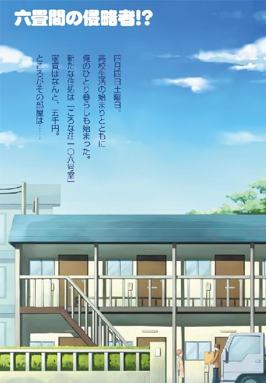
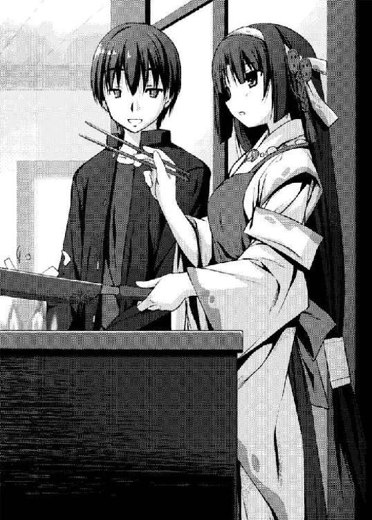

| 六畳間の侵略者！？ (ＨＪ文庫) | |
| 健速 | |
| (2009) | |


ＨＪ文庫
六畳間の侵略者!?
健速
口絵・本文イラスト ポコ

それがころな荘一〇六号室の月々の家賃だった。
ころな荘は築二十五年の二階建ての木造アパートだ。加えて中心街からやや外れているので、元々家賃は安めだ。だが六畳ワンルームキッチンバストイレ付きで月五千円は破格の安さだった。実際、一〇六号室以外の部屋の家賃はこの十倍ほどになる。そのうえ一〇六号室は敷金礼金無し、共済費も全額免除となっているのだ。
一〇六号室だけが激安である事には理由がある。これまでこの部屋に入居した人間は、例外なくすぐに出て行ってしまうのだ。最短で三時間、最長で三ヶ月。三日ほどで飛び出してしまうのが普通だった。おかげで家賃は下がる一方。今年に入って一万円の大台を割り、春になる前には五千円になっていた。
「雑に扱うなよ、マッケンジー。その箱に入っているものはお前の命よりも高い」
「それを俺に言うか、コウ。普段のお前に比べたら、俺はいつだってどんなものだって大切に扱ってるっつーの」
「分かっているなら結構。キリキリ働いてくれたまえマッケンジー君」
「はいはい。どっちが引っ越しを手伝ってるんだか.........。ったく.........」
そんな格安の物件に入居しようという少年がいた。
彼の名前は里見孝太郎。幼馴染の松平賢治は彼の事をコウと呼ぶ。逆に孝太郎は賢治の事をマッケンジーと呼んでいる。二人とも十五歳で、入学式を明後日に控えた高校一年生だった。
今日は四月四日の土曜日。
父親の急な転勤のおかげで、孝太郎はこの春から急遽一人暮らしをする事となった。そこで孝太郎が向かった不動産屋で紹介されたのが、このころな荘の一〇六号室だった。父一人子一人で育った孝太郎だったから、父親の負担にならないこの部屋に真っ先に飛びついた。それも家賃がこの値段である理由を聞く前に、だ。
「しっかしコウ、このタイミングで良くこんないい部屋が空いてたなぁ？」
「ラッキーだった。この間、親父にいきなり転勤の話を聞かされた時は正直焦ったもんな」
父親の転勤が決まったのは二月も半ばを過ぎてからの事だ。それは孝太郎の高校入試が終わり、あとは合格発表を待つばかりというタイミングでの出来事だった。
「とはいえ同僚が怪我をして行けなくなったんならどうしようもないしな」
「そういうこった」
もともと転勤は孝太郎の父親ではなく、その同僚がする予定になっていた。しかしその同僚が事故に遭って大怪我を負ってしまい、代わりに孝太郎の父親に話が回ってきたのだ。
「話は急で驚いたけど、男の自立には良い機会だったかもしれないな。もう高校生なんだし」
「前向きだな」
「男の旅立ちを祝ってくれ」
「なんのこっちゃ」
孝太郎と賢治は二人で衣装ケースを運んでいく。先程から二人は荷物を抱えて、表に止めてある引っ越し業者の軽トラックと一〇六号室とを往復していた。
「お客さーん、冷蔵庫は流しの所で良いのかい？」
すると二人の向かう一〇六号室から作業着姿の中年男性が顔を出した。彼はトラックを運転していた引っ越し業者の人間で、孝太郎達同様に荷物を運んでいた。
「はい、お願いします！」
「了解ー」
孝太郎の返事を聞くと、男はすぐに部屋の中に引っ込んだ。孝太郎と賢治もその後を追って部屋に入っていく。
「これが月々五千円っていうんだからなぁ.........。安過ぎるぞ」
二人で開け放たれたドアをくぐると、賢治は何度目かの溜め息をついた。
「羨ましいだろ」
「これで五千円なら俺が借りたかったよ」
部屋は多少古めのデザインの和風の造りになっている。玄関を入ると板張りの廊下があり、それが奥の六畳間に続いている。廊下の右側にはキッチンユニットが設置されていて、左側には風呂とトイレがある。見た目は確かに古臭いのだが、部屋はきちんと手入れされていて清潔だった。
「気をつけろコウ、ケースが壁に当たりそうだ」
「わーってるわーってる」
「どうだか.........。おじさん、後ろ通ります」
「おう、すまねえなメガネ君」
キッチンで冷蔵庫を設置している男の背後を抜け、孝太郎と賢治は六畳間へと向かう。畳張りの六畳間には段ボール箱や家具が運び込まれたまま雑然と置かれており、二人はそれを縫うようにして部屋に入っていった。
「んで、この衣装ケースはどうするんだ？」
「そうだな、押入れの下段に入れよう」
「オッケー」
孝太郎と賢治は、協力して衣装ケースを押入れに押し込んだ。そして二人が背筋を伸ばして立ち上がった時、業者の男も六畳間へやってきた。
「お客さん、確か荷物はそれで最後でしたよね？」
「あ、はい。これで全部です」
「よし。じゃあ俺はこれで帰るよ」
「ありがとうございます」
体育会系の縦社会で育ってきた孝太郎は、自然と男に頭を下げた。
「頭を下げるのはこっちさ、お客さん。御利用、ありがとうございました」
男は柔和な笑顔を浮かべると、深々と頭を下げる。そして彼は幾つか書類を残して部屋を去っていった。
「さてと、これで一段落だな」
「ほい、マッケンジー」
メガネの位置を直している賢治に向かって、孝太郎はお茶のペットボトルを放り投げた。
「おっとっと、サンキュー」
賢治は難なくペットボトルを受け取る。付き合いの長い二人だから、こういう事には慣れっこだった。
「ちょっとぬるくなってるのは勘弁な。冷蔵庫は今付いたばっかりだからさ」
そう言いながら、孝太郎は自分の分のペットボトルをビニール袋から取り出した。それらは少し前に近所のコンビニで買って来たものだった。
「分かってるって」
パキ
そして二人は同時にペットボトルを開け、中身に口を付けた。
「はぁ～～、生き返る～～」
孝太郎はお茶を飲みながら、二段に積み重なった段ボールに腰を下ろした。賢治は六畳間の入り口の所の柱に寄りかかってお茶を飲んでいる。そんな時、賢治は壁にかかっているカレンダーに目を留めた。
「早いなぁ、もう明後日が入学式だ」
「そうだった。今日中に必要な分は梱包解いちまわないと」
孝太郎も賢治同様にカレンダーを見る。そのカレンダーは、孝太郎がここへやってきてすぐに時計と一緒に壁に取り付けたものだった。
「ん？ 明日やりゃ良いじゃないか」
「明日はバイトが入ってるんだよ」
「入れてあるのか？ 引っ越しの時ぐらい休みゃあいいのに」
賢治は少し呆れた様子で、メガネの向こう側で目を丸くする。
「春先は何かと入り用なんだよ。実家暮らしのお前と一緒にするな」
「お金なら親父さんがいくらか置いていってるんだろう？」
「それになるべく手を付けないのが粋ってもんだろうが」
「.........粋だか何だか知らないけど、倒れても知らないぞ？」
「知性派のお前とは違って俺は体力にだけは自信があるんだ」
「はいはい、そうでしょうとも、そうでしょうとも」
自慢げに胸を張る孝太郎に、賢治は肩をすくめる。
「それでコウ、明日は何時からだ？」
「いつもどおり。朝からだ」
「んじゃ例によって迎えにくる」
「頼んだ」
実は二人のバイト先は一緒だ。高校の合格が決まってすぐ、二人は高校の近くのバイト募集を選んで一緒に応募したのだ。そしてめでたく二人とも採用され、既に先月から働き始めていた。
「.........なあコウ、学校が始まったらちゃんと起きられるのか？」
「大丈夫大丈夫」
「土日のバイトの度に俺に起こされているから説得力無いぞ」
「やかましいわい」
土日にバイトが入ると普通は朝から働く事になるので、寝起きの悪い孝太郎は賢治に起こしてもらうのが日課となっていた。
「俺も一人暮らしを始めて、大人の男の仲間入りをするんだ。いつまでも子供みたいな事にはならん」
「じゃあ、明日も迎えに来なくて良いのか？」
「それとこれとは話が別だよ、マッケンジー君。明日は是非来てくれたまえ」
「これだよ.........」
呆れた賢治が肩を落とす。
「いつも済まないねぇ、おじいさん」
「.........なんかガクーっとやる気が失せた」
「そう言わんと。若いんだから」
ぴんぽーん
そんな時、来客を告げるチャイムが鳴った。
「おんや？」
「客か？」
ガチャッ
そして孝太郎が返事をする前に、チャイムを鳴らした人物はドアを開けて入ってきた。
「こんにちはー！ 里見さん、いらっしゃいますかー？」
続いて玄関から女の子の声が聞こえてくる。
───この声は確か.........。
孝太郎にはその声に聞き覚えがあった。
「大家さんだ」
「大家？」
「ああ。.........はーい、今行きまーす！」
孝太郎は玄関に向かって返事を返すと、座っていた段ボールから飛び降りた。それを見て賢治も寄りかかっていた柱から背中を離す。
「随分若い声だな」
「来いよマッケンジー。びっくりするから」
「ん、ああ.........」
そして二人は連れ立って玄関へ向かった。
「こんにちは、大家さん」
「こんにちは、里見さん」
玄関に居たのは、私服の上からエプロンを身に着けた女の子だった。彼女は挨拶の言葉を口にすると、深々と頭を下げる。彼女の年齢は孝太郎達と同じくらいで、まだ幼さの残る顔立ちをしていた。長めの髪を大きなリボンでまとめた、爽やかで健康的な印象の少女だった。
「えっ、大家さんって、この子が？」
「そ。この人がここの大家さん。.........ビックリしたろ、マッケンジー」
「あ、ああ」
賢治は目を丸くして頷く。大家さんという言葉と目の前の可愛らしい女の子のイメージが上手く繋がらず、賢治は呆気にとられていた。
「俺も最初驚いたよ」
「皆さん驚かれますよ。ふふふ.........」
女の子は軽く微笑むと、賢治の方を向いた。
「初めまして。ここの大家をしております、笠置静香です」
「ど、どうもご丁寧に。松平賢治です」
「よろしくお願いしますね、松平さん」
「はい、こちらこそ」
そして賢治と女の子───静香は頭を下げ合った。
「大家さん、こいつは俺の幼馴染なんです」
「まあ、そうでしたか」
「今後もちょろちょろすると思うんで、気軽にマッケンジーと呼んでやってください」
「マッケンジー？」
静香は何度か目をパチパチさせると、賢治を見た。
「日本の方ですよね？ 松平さんって言っておられたような.........」
「ああ、うん、こいつはもちろん日本人です。でも、松平賢治を縮めてマッケンジーなんです」
「なるほど、松と賢治でマッケンジーなんですね」
納得がいったのか、静香は口元に手を当ててクスクスと笑い始める。
「コウが勝手に呼んでるんだけですけど」
「では松平さんとお呼びした方が？」
「マッケンジーで良いですよ。もう慣れましたから」
「はい、マッケンジーさん」
肩をすくめる賢治を見て、静香はもう一度笑う。するとその長めの髪とリボンがゆらゆらと揺れた。
「そうそう、大家さんも今年から吉祥春風高校なんだ」
「へぇ.........偶然だなぁ」
「運が良ければ、同じクラスかもしれないな」

「ふふ、学校でもよろしくお願いします」
そう言って静香はもう一度丁寧に頭を下げた。
「それで大家さん、何のご用でしょう？」
「ああ、そうでしたそうでした、忘れる所でした」
パン
静香は両手を合わせ、孝太郎達の背後にある窓を指さした。
「実はさっき、窓から引っ越し屋さんのトラックが帰っていくのが見えたものですから、そろそろお手伝いが出来る時期かなって思いまして」
「窓から？」
「はい。マッケンジーさん、実はわたし、この上の部屋に住んでいるんです」
「良いだろ、可愛い大家さんとひとつ屋根の下だ」
「まぁ.........」
静香は一度目を丸くした後、にっこりと微笑む。
「お上手なんですね、里見さんは」
「.........ひとつ屋根の下も何も、アパートなんだから当たり前じゃないか」
「気分の問題だ」
「ふふふ、おふたりは仲が宜しいんですね。.........っといけない、それでですね、こうしてお手伝いをしに来た訳なんです。さっきまでのような力仕事はともかく、ここからはきっとお手伝いできると思うので」
「助かります、大家さん。コウの奴は壊したり散らかすのは得意なんですけど、作ったり片付けたりは苦手なんです」
「コラ、マッケンジー、人聞きの悪い事を言うな」
「事実だろう。いつも俺がどれだけ苦労しているやら」
そして賢治はメガネの位置を直しながら、盛大に溜め息をつく。
「じゃあ、いつもはマッケンジーさんが？」
「はい、苦労しています」
「感謝はしてるぞ」
「.........感謝だけだがな。そうだ大家さん、一つ訊きたい事があるんですけど、よろしいですか？」
「はい、何でしょう？」
静香は笑顔のまま頷いた。
「どうしてこの部屋が家賃五千円なんて事になってるんです？」
「こ、こらマッケンジー、いきなりそんな事訊くなよ！」
事情を知っている孝太郎は少々慌て始める。
「だって気になるじゃないか。これだけ綺麗な部屋で、大家さんはしっかり者で、特に問題があるようには見えないんだからさ」
「だがなぁ、このアパートは大家さんの御両親が遺した大切な───」
「構いませんよ、里見さん」
静香を怒らせまいかと心配していた孝太郎だったが、彼女は穏やかに微笑んで首を横に振った。
「マッケンジーさんの心配ももっともです。ふふふ、それに分かりませんか？ マッケンジーさんは里見さんの事を心配していらっしゃるんですよ？」
「大家さん.........」
「それにこの件は、わたしがどうこう出来る話では無いですし」
「は、はぁ.........」
そして孝太郎が申し訳なさそうに頷くと、静香は賢治の方に向き直った。
「実はですね、この部屋、出るんです」
「出る？ 出るって何がですか？」
「この部屋、幽霊が出るってもっぱらの噂なんです」
「ゆ、幽霊.........!?」
賢治は驚き、きょろきょろとあたりを見回し始める。
「わたしはまだ見た事が無いんですけど、入居される方はことごとくご覧になるらしくて.........。それであまり長い間住んで頂けないんです」
「幽霊.........。にわかには信じがたいですが.........」
「それはわたしもです。でも、入居者の方々がそう仰って出て行ってしまうのは事実ですから」
困惑する賢治に、静香は苦笑しながら肩を竦めてみせる。
「大家さん、任せて下さい。俺は幽霊なんかには負けません」
「頼もしいです。是非、幽霊の噂を掻き消すほど長く住んでくださいね、里見さん」
「はいっ！」
「しかしこの部屋に幽霊とは.........」
まだ納得いかないのか、賢治は再び部屋をぐるりと見回す。
「グチグチ考えたって始まらないさマッケンジー。せっかく大家さんが来てくれたんだから、さっさと片付けを始めようぜ？」
「.........ああ、そうだな」
孝太郎に促され、賢治はブルっと首を振ってから普段の表情に戻った。
「鈍感なコウなら幽霊も平気だろうさ」
「言葉にトゲがあるぞ」
「ワザとだ」
「知ってる。.........んじゃ、始めましょう、大家さん」
「はい、里見さん。.........でも、お二人って本当に良いコンビなんですね？」
孝太郎と賢治のやりとりを見ていた静香はまた笑い始める。
「そうですか？」
「大家さん、気色悪い事を言わないで下さいよ」
「マッケンジー、それは言い過ぎだぞ？」
そうして孝太郎達はワイワイ騒ぎながら、一つずつ引っ越しの荷物の梱包を解いていった。
賢治と静香の協力のおかげで、夕食時になる前に何とか一〇六号室は生活できるレベルまで片付いていた。
「俺はこれで帰るけどな、明日はバイトなんだから、片付けもほどほどにしてとっとと寝ろよ？」
「わーってるわーってる。寝過ごしたらまずいからだろ？」
「お前の分かってるは一番信用ならないんだ」
賢治は溜め息をつきながら玄関に脱ぎ捨ててあった靴に無造作に両足を突っ込む。
「それではわたしもこれで失礼しますね、里見さん」
「大家さん、『里見さん』なんて呼ばなくて良いですよ。明後日から同級生なんだし」
「ええと───じゃあ、里見君」
「その方が感じが良いですね」
「うん、そうさせて貰うね？」
静香はにこやかに笑いながら、きちんと揃えて脱いであった靴に両足を入れる。それと同時に賢治が玄関のドアを開いた。
「今日はありがとうございました、大家さん」
そんな孝太郎の礼を聞きながら、二人はドアを通り抜けて行く。
「いいえ。こんなことならいくらでも」
「.........俺には礼は無しかよ」
「お前は普段から持ちつ持たれつだろうが」
「俺にはそうは思えないんだがなぁ.........」
「それじゃ里見君、また」
「さようなら、大家さん」
「早く寝ろよ」
「分かってる分かってる」
ギィッ、バタンッ
こうして賢治と静香は一〇六号室から姿を消した。
一人になった孝太郎が片付けを再開したのは、コンビニで買ってきた弁当を食べ終わった後の事だった。
「んー.........このバットはどうするか.........こいつばかりは普通のバットとは違うから、傘立てに入れておくって訳にもなぁ.........」
孝太郎は一本のバットを手に悩んでいた。そのサイン入りのバットは打撃の神様と呼ばれた伝説のスラッガーが使っていたもので、孝太郎の宝物の一つだった。
「おし、こいつは台座を付けて飾るとするか。でも、今日の所は隅っこで我慢して貰おう」
コトン
孝太郎は部屋の隅にバットをたてかけると、新しい段ボールに手をかけた。
「これは何だっけか.........」
ベリリッ
ガムテープを剥がし、孝太郎は箱の中を覗き込む。
「これも貴重品だったか」
トロフィー、賞状、記念の盾。そして愛用していたグローブ。それらは全て孝太郎の中学時代の思い出の品だった。
「おっと、こいつはここに入っていたのか」
そんな数々の品物の中に、一つだけ雰囲気の違う物が入っていた。
「こいつはちゃんとこっちにしまっておかないと.........」
それは編みかけのセーターだった。孝太郎は近くにあった紙でそのセーターを丁寧に包むと、押入れの衣装ケースの奥にそっとしまいこんだ。
「これでよしっ、っと」
ぱんぱん
押入れから離れ、孝太郎は両手を打ち鳴らした。
ぷるるるるるるっ
すると丁度その時、部屋の隅のコンセントで充電中だった携帯電話が鳴り始める。
「ん？ 親父か」
孝太郎の携帯で、着信音が初期設定のままの人間は一人だけだ。
里見雄一郎。
携帯の液晶画面に映っていたのは、孝太郎の父親の名前だった。
ピッ
孝太郎は手を伸ばして携帯電話を取ると、通話ボタンを押して顔に押し当てた。
「もしもし、親父？」
『おお、居たか、孝太郎』
携帯電話から聞こえてきた声は、やはり孝太郎の父親の雄一郎だった。
『そっちの様子はどうだ？ 荷物は片付いたか？』
「ぼちぼちってとこ。マッケンジーと大家さんが手伝ってくれたから、どうにか暮らせるようにはなったよ」
『そうか。二人には良く礼を言っておくんだぞ？』
「うん。親父の方は？」
『こっちは独身寮だからな。何もしなくても飯は出るし、風呂にも入れる。着替えだけ出しておけば当面は問題ないさ』
「良かった。親父は俺以上に何も出来ないからさ、ちょっと心配だったんだ」
『ハハハ、耳が痛いな』
父一人子一人の里見家では、実は家事の殆どを孝太郎が行っていた。もちろん大雑把な孝太郎だから、お世辞にも家事が上手いとは言えない。だがそれでも孝太郎がやらなければ雄一郎は干上がってしまう。雄一郎は家事が極端に苦手な男だった。
「俺と離れて良い機会なんだからさ、良い人見つけなよ」
だから孝太郎は父親には早く再婚してほしいと思っていた。そうでないと父親の餓死や、汚れもので埋まった部屋の心配が絶えないのだ。
『タハハハハ、それがなかなかなぁ.........』
だが雄一郎には一向にその気配がない。それは早くに亡くした妻を未だに愛しているからだ。その気持ちも分かるから、孝太郎としては文句も言えない状況だった。
『うん、まあ、ともかく順調なようで何よりだ』
「親父もね。ゴミ出しだけは忘れないようにしてよ？」
『分かっとる分かっとる』
「どうだか」
この時だけは、賢治の気持ちが良く分かる孝太郎だった。
『それじゃあまりダラダラ喋ってもアレだからそろそろ切るぞ。もう少し片付けもせにゃならんし』
「こっちもそうするよ。またね、親父」
『ああ、おやすみ、孝太郎』
「おやすみ」
ぷつんっ
至極あっさりと通話が切れる。
「いきなり転勤って話になった時は、どうなる事かと思ったけど.........」
カチ
孝太郎は携帯を充電器に差し込む。
「まずは一安心。良かった良かった」
そうして孝太郎は軽く微笑みながら一息つくと、部屋の片付けを再開した。
「十一時か.........」
孝太郎が片付けの手を止めたのは、夜の十一時にさしかかった頃の事だった。
「今日は早めに寝ておくか。起きれなかったらマッケンジーにどやされるし」
ここ数日、孝太郎は引っ越しでバタバタして疲れている。そのうえ明日はバイトで体力を使うから、早めに休んでおく方が良い。
「寝よ寝よ」
ガラッ
そう決めるが早いか、孝太郎は押入れを開けて中から布団を引っ張り出した。その布団には孝太郎に似合わない花柄のカバーが付いている。静香が用意したものだった。
「よっこらせ」
ぼすんっ
段ボールを足でどかし、出来たスペースに布団を投げ出す。そこへいつものように倒れ込もうとした時、布団の花柄が孝太郎の目に留まった。
「.........ちゃんと敷くか」
考え直した孝太郎は丁寧に布団を広げていく。静香が用意した花柄の布団カバー。普段のように乱暴に扱ってぐちゃっとしたら大家さんに悪いなー、などと考えての事だった。
「よし」
パチン
広げ終えると、孝太郎は部屋の明かりを消してそそくさと布団にもぐりこむ。
「おやすみなさい」
そして誰にともなくそう告げると、孝太郎は目を閉じた。寝起きは悪いが、寝付きは良い孝太郎。数分後には規則正しい寝息を立て始めた。
すー、すー、すー
動くものの無くなった一〇六号室に、孝太郎の寝息が響く。響くといっても、時計の秒針が動く音と同じくらい小さな音だ。だから隣の一〇五号室でテレビがついたり、真上の二〇六号室で静香がドアを開閉したりすれば、たちまちその音は聞こえなくなる。しかしそれも深夜を回るまでの事で、二時を過ぎる頃には部屋は再び孝太郎の寝息が聞き取れるほどの静けさを取り戻していた。
カタッ
そんな一〇六号室で微かな物音がした。孝太郎ではない。深い眠りの底に居る孝太郎は先程からピクリとも動いていない。
カタッ、カタカタッ
鳴っているのは窓だった。しかし建てつけが悪い訳でも、風が吹いているという訳でもない。それなのに窓はカタカタと鳴り続けている。そして音は時間が経つにつれて次第に大きくなっていく。
ガタッ、ガタガタガタッ
そして最初に窓が鳴り始めてから数分後には、耳障りなくらい大きな音になっていた。
すー、すー、すー
しかしそんな音がしていても、孝太郎が目を醒ます気配はない。
「む～、まっけんじー、いいかげんまっきんりーにあやまっとけよぉ～」
それどころか孝太郎は結構大きな声で寝言をブツブツと繰り返し始めた。この時の自身の声でも目覚めないのだから、窓が鳴るぐらいでは起きる筈もなかった。
すると不思議な事に、孝太郎の寝言を境にしてずっと鳴っていた窓の音がピタリと止まる。
「ぐぇへふぇふぇふぇっ」
ガタタッ
しかし直後にもう一度孝太郎が寝言を言うと、何故かもう一度だけ窓が鳴った。そんな筈はないのだが、それはまるで窓が孝太郎の寝言に驚いたかのようだった。
その後、しばらく静寂が続く。孝太郎の寝言もさっきのものを最後に止まっていた。そのまま何事もなく数分が過ぎたのだが、異変は終わりにはならなかった。
ピシッ、パキッ
甲高い破裂音。それはまるで小さなガラス瓶が破裂したかのような音だ。だが部屋にはその音の出所が見当たらない。音は確かに部屋の中で鳴ったというのに、部屋には音を出すものは存在していなかった。
パキッ、ビキキッ、コトッ
破裂音が続き、同時に何故か畳の上を野球の硬式球が転がっていく。破裂音は球があった場所のあたりで鳴ったのだが、音の元になるようなものも、球を転がすようなものも、そこには見当たらない。
ピチッ、パキッ
音は続く。今度の音は激しい。窓が鳴っていた時の音の何倍も大きかった。
「けけけっ、まっけんじー、おまえおおやさんにがてか？ おおやさんかわいいもんな～～」
しかしそれでも孝太郎は目覚めない。目覚めるどころか、口をもぐもぐとさせながら再び寝言を繰り返す始末だった。
「にまいめのくせに、こんじょうなし～」
ビキキッ、バチンッ、ガガッ、ゴトンッ
するとまるで孝太郎の寝言を掻き消そうとするかのように、謎の物音は大きくなった。そしてそのあおりを受けてか、部屋にあるものがゴトゴトと揺れ始める。今や部屋は混乱の極致だった。家具や箱はガタガタと揺れ、音は大きくなる一方だ。
ビキキッ、バキッ、ボフッ
音は孝太郎の鼻先で鳴る事もあった。しかしそれでも孝太郎は目覚めない。付き合いの長い賢治でも孝太郎を起こすのに苦労するぐらいなので、この程度ではビクともしないのだ。
「うぇっへっへっへっへ～～」
ガタタッ
再び孝太郎の寝言と共に音が途切れる。
もし、この奇妙な音や部屋の揺れが何者かの仕業であったのだとしたら。
「ガタガタやかましいぞー、うらぁ～。かんねんしろぉ、まっけんじー」
ガタタタッ
その何者かはきっと、眠り続ける孝太郎のあまりの鈍感さに驚いているに違いなかった。
「ふぁ～～～あ」
「珍しいじゃないかコウ。自分できちんと起きてるなんてさ」
「ちゃんと早寝したからな。睡眠時間はバッチリだ」
作業服姿の孝太郎と賢治が肩を並べて朝の道路を歩いていく。日曜の朝という事もあってまだ人も車も少なく、道路には歩道を歩く二人の姿しかなかった。
「何度も言うが、俺は一人暮らしで自立して大人になったのだよマッケンジー君」
「ずっとそうあって欲しいもんだ」
「そうに決まってるだろ」
「どうだか.........。ところで、例の件はどうだったんだ？」
「例の件？」
賢治の顔と声がフッと真面目になる。それに気付き、孝太郎は少しだけ眉を寄せた。
「ああ。部屋に出るっていう話だろう？」
「出る.........？ ああ！ そうかそうか、幽霊の話か！」
ぽんっ
ようやく賢治の心配顔の理由が分かった孝太郎は、笑顔で両手を打ち鳴らした。
「幽霊なんて出なかったよ」
「出なかった？」
「うん。寝るまで何もおこらなかったし、寝た後も静かなもんだった。考えてもみろよ、本当に幽霊が出たら、俺が朝ちゃんと起きれてる訳ないだろ」
「そういやそうだな。寝起きが悪いお前が、寝不足で起きれてる訳ないものな」
そこで賢治は少し表情を緩めた。
「ワハハハッ、しかしマッケンジー、幽霊を信じてるとはなぁ」
「あん？」
「いつも科学的がどうとか言ってる癖に、幽霊の心配とは.........」
孝太郎は意地の悪い顔で賢治の頬をつつく。
「良いだろうが。別に科学文明の信奉者が幽霊が嫌いでも」
賢治は憮然とした顔でぶっきらぼうにそう言う。
「怖いなら怖いって言えよ、素直じゃないなぁ」
「おう。こえーよ、こえー。幽霊が実在しようがしまいが、気色悪い事件は毎日起きてるんだ」
「こりゃ重傷だ」
そうして孝太郎が肩をすくめた時、バイト先へ向かっていた二人はある学校の前にさしかかった。
県立吉祥春風高等学校。明日から二人が通う事になっている高校だった。
県立吉祥春風高等学校は、最寄駅の春風駅から歩いて二十分ほどの距離にある。また、孝太郎が入居したころな荘からも同じく二十分の距離だ。だからころな荘と春風駅、吉祥春風高校はちょうど正三角形を描くような位置関係にある。そしてその三角形の中に、都市機能が集中していた。
この県立吉祥春風高等学校は、数年前の市町村合併の直後に設立された。吉祥市と春風市の合併により、両者の子供達の受け皿となる高校が必要になったのだ。
この地域では元々合併前から高校の統廃合が進んでいたので、吉祥春風高校は自然と規模の大きな高校となった。流石に都市部の高校ほどではないが、地方都市の高校としては最大級だった。
『ふぁいとー、ふぁいとー、ふぁいとー！ は～るか～ぜふぁいとー！』
そのおかげで春休みであるこの時期にも、校庭には部活動に打ち込む生徒達の姿があった。
「野球部か.........春の大会が終わって、代変わりした頃かなぁ.........」
「なかなか活気があって良いじゃないか。新入生が入ったら、もっとだろうけど」
校庭で身体を動かしているユニフォーム姿の生徒達の姿を眺めながら、孝太郎達は正門の前を通り過ぎて行く。二人が目指しているバイトの現場は、このもう少し先にあった。
「.........」
正門を通り過ぎても、孝太郎はそのまま校庭を眺めていた。ボールを投げ、バットを振り、走り、キャッチする。そこでは少し前まで孝太郎もやっていた事が繰り広げられていた。
「なあコウ、.........本当に野球やらなくて良いのか？」
そんな孝太郎の様子に、賢治はいつになく真面目な調子で声をかけた。
「良いんだ。一人暮らしとバイトと野球、三つ全部をキチンとやるのは無理だもんな」
そしてようやく孝太郎は校庭から視線を切り、賢治の方を向いて笑顔を作った。
「コウ.........」
その時の孝太郎の笑顔は、賢治にはほんの少しだけ寂しげに見えた。
「それに編み物研究会だってあるし、そんなに悲観したものでもないだろ」
「それだよそれ、編み物研究会」
「うん？」
「お前本気でそんな部に入るのか？」
「おう。本気も本気だぞ」
実は孝太郎は、合格発表の時に勧誘されて編み物研究会へ入る事に決めていた。
「嘘だろ。どう考えたって、お前には向かないと思うんだが.........」
賢治はそう言いながらじろじろと孝太郎の身体を見る。
大きな身体、がっしりとした体格、大きな手。
賢治にはどう見ても孝太郎に編み物や手芸が向いているとは思えなかった。どちらかと言えばそれを引き裂く方が得意に見えるのだ。
「失礼な奴だ。今に見てろよ、いずれお手製のマフラーをお前の分も編んでやる」
「やめろよ気色悪い.........想像しただけでゾッとする.........」
「うむ、まったくもって同感だな。自分の分だけにしとくわ」
二人は苦笑して顔を見合わせる。
「正直に言えよ。やっぱり合格発表の時に会ったあの美人の会長さんが目当てか？」
「それが無いとは言わない」
───ほぉ.........。この反応は違うな。てっきりあの会長さんが目当てだと思ってたんだが.........。読み違えたかな？
長い付き合いから、賢治は孝太郎の反応から本音を見抜いていた。
「ともかく俺は編み物研究会で桜庭先輩と一緒に青春を謳歌するぜ」
「ふむ。なんだか分からないが面白そうだ。俺も入部しようかな」
「よせよせ。お前のような女たらしが近付くと桜庭先輩がけがれる」
「何だよ、人をばい菌かなんかみたいに」
「考えてもみろ。毎年二月の十四日はお前一人でクラスのチョコレートを一人占めだったじゃないか。どれだけの男達が血の涙を流した事か」
「それは俺のせいじゃないぞ」
何度となく繰り返された議論だったので、賢治は大きく溜め息をつく。
「いーや、お前のせいだ。食い物の恨みは怖いんだぞ？」
「けど結局俺のチョコはコウが食っちまったじゃないか。それにあれは本当に俺のせいじゃないんだぞ。本当は渡し易い俺に渡す事で、間接的にお前に───」
だが、そこで賢治の言葉は途切れてしまう。
「ん？ どうした？」
「いや、なんでもない。悔しいから教えてやらんわ」
「なんのこっちゃ」
「いくぞ、遅れそうだ」
「待てって、急にどうしたんだよ？」
二人がバイトの現場に着いたのは、そのすぐ後の事だった。
「いよいせぇぇぇぇっ！」
ごろんっ
孝太郎の掛け声と共に、大きな石が豪快に転がっていく。
「.........孝太郎ちゃんは力が強いんだねぇ」
転がっていく石を見ながら、孝太郎の隣にいる老婦人が感嘆の声をあげる。彼女は農作業をする時のような格好をしており、その手には小さな金属製のコテが握られていた。
「俺はまだ若いからね、おばあちゃん。でもその分、丁寧な仕事はおばあちゃんの方が得意じゃない」
「ほほほ、そんなもんかもしれないねえ。助かったよ、孝太郎ちゃん」
「いつもお菓子貰ってるから、お互い様って事で」
「ぎぶあんどていくってヤツだね？」
「はは、そうそう。.........それじゃ俺は持ち場に戻るから。またね、おばあちゃん」
「ありがとうね！」
孝太郎は老婦人に別れを告げると、数十メートル向こう側の自分の担当する区画へと戻っていく。
「さて、と」
孝太郎が老婦人の方にちらりと目をやると、彼女はしゃがみ込んでコテで足元の土を削り取っていた。
「ふふふっ.........。んじゃ俺も作業再開っと。おばあちゃん達に負けないように頑張らなくちゃ！」
そして孝太郎は作業服の袖をまくりあげると、自分の道具を手に取り足元の土を掘り返し始めた。
孝太郎がやっているアルバイトは遺跡の発掘作業だった。先程の老婦人はその同僚の一人で、孝太郎がバイトを始めた当初から度々世話になっていた。ちなみに賢治もここで孝太郎と同じ事をしている。ただし現場がかなり広範囲に広がっているので、その姿は孝太郎のいる場所からは見えなかった。
孝太郎達が掘り返しているのは、一般に『吉祥春風遺跡』と呼ばれている遺跡だ。吉祥春風高校の関連施設を建て増そうとした時に偶然発見された遺跡だった。
発見の経緯から分かるように、この遺跡は吉祥春風高校の傍にある。歩いてほんの数分の距離だ。高校は小さな丘陵の中腹にある。遺跡はその丘陵を登り切った場所にあった。だから吉祥春風高校の前を通り過ぎて、そのまま坂を登り続ければこの発掘現場へとたどり着く。
この遺跡が発見された当初は、大したものの埋まっていないありふれた弥生時代後期の遺跡だと考えられていた。ごくごく一般的なものしか出てこなかったからだった。
しかし今年になって出土品の年代測定が行われた結果、この遺跡が凄まじい価値を持っている事が判明した。遺跡は一万年前のものだったのだ。
この遺跡からは確かにありふれたものしか出てこなかった。だが、それが使われていた時代が一万年前であるのならば話は違ってくる。一万年前といえば縄文時代の前期。そこに突然、弥生時代で使われていたような土器や青銅器が出てきてしまったため、この遺跡は考古学界の常識を覆すような大発見となった。
すぐに大きな予算が組まれ、こうして大規模な発掘作業が始められた。もちろん作業を早く進める為には多くの人手が必要になる。アルバイトも大量に募集がかけられた。
そんな訳で、丁度アルバイトを探していた孝太郎と賢治はこれ幸いとこのアルバイトに飛びついた。学校からも近く、渡りに船だった。
カリ、カリカリッ
しゃがみ込んで少しずつ土を削っていく作業は非常に辛い。しかし中学時代ずっとキャッチャーとして中腰で過ごしてきた孝太郎にはあまり辛い作業ではない。初めこそ多少手間取ったものの、一月以上経った今ではすっかりこの作業にも慣れつつあった。
「掘っても掘っても土ばかり、と」
学者の説明によれば、孝太郎の担当している区画には宗教儀式に関する建物が埋まっているのだという。だが同僚達と十数人がかりで掘っても、なかなかそれらしいものは出てこない。
「俺達だけ全く関係ないとこ掘らされてるんじゃないのかね」
バイトを始めてからというもの、孝太郎は土しか見た事がなかった。
カリカリ
「マッケンジーの方はいろいろ出てて楽しそうなのに」
どちらかというと、変化が起こらない事が退屈な孝太郎だった。
『孝太郎.........』
「んっ？」
そんな時、孝太郎は誰かの声を聞いたような気がした。
「今、誰かの声が.........おばあちゃんかな？」
作業を止め、辺りを見回しながら立ち上がる孝太郎。しかしあたりにはそれらしい人影は見当たらない。この辺に居るのは孝太郎だけだったし、先程の老婦人は孝太郎に背を向けたままだった。
「気のせいだったかな？」
孝太郎は首を傾げる。するとそんな彼の耳に再びその声が聞こえてきた。
『孝太郎.........』
「この声、おばあちゃんじゃない。もっとずっと若い。良く知ってる声のような.........いや、初めて聞く声か？」
『こちらへ.........』
「あっち、あの向こうか.........？」
三度目で、孝太郎は声の出所の見当がついた。声は孝太郎から十数メートル離れた所にある雑木林の奥から聞こえて来ていた。
「よし」
カチャッ
孝太郎は発掘の道具を足元に置くと、無造作に雑木林に近付いていく。
「マッケンジーの悪戯か、それとも他に誰かがいるのか」
孝太郎は十中八九賢治の悪戯だと考えていたので、全く危機感は無かった。それでももしもの場合があると困るので、念の為に見に行くつもりだった。
「ったく、明日から高校生だってのに、初歩的な悪戯を.........。マッケンジーとっつかまえて、誰の声を録音してきたのか吐かせたろ」
声には聞き覚えが無かったので、孝太郎は賢治が新しく引っかけた女の子だと考えていた。
「んー、結構生い茂ってるな.........」
ガササッ、ザサッ
孝太郎は茂みを掻き分けて、雑木林へ踏み込んでいく。背の高い木々と、伸び放題の雑草のおかげで視界はすこぶる悪い。さらに雑草の葉がチクチクと孝太郎をつつくものだから、歩き辛い事この上なかった。
「おーい、マッケンジー、居るんだろー？ はよ出て来ーい！」
ガサッ、バサササッ
早く賢治を見つけて、こんな場所からは出たい孝太郎だった。
「出てきて、どんな女の子引っかけたのか教え───」
バサッ
その時、突然孝太郎の足の下の地面の感触が消えてなくなる。
「ありゃっ？」
───しまった、地面に穴がっ!?
その事に気付いた時には、孝太郎の身体は地面の穴に吸い込まれてしまっていた。
ドスンッゴンッ
「あいてっ!?」
地面に叩きつけられて息が詰まった直後、後頭部に激痛が走る。
孝太郎は落ちた穴の底で地面に身体を叩きつけられた。この時、幸運な事と不幸な事が一つずつあった。幸運な事は、穴がそれほど深くなかった事。そして不幸な事はちょうど頭をぶつけた場所に石があった事だ。
「いちちち、おーいて.........。ったく、マッケンジーのせいで大変な目に遭った」
孝太郎は痛む後頭部に手を当て、身体を起こした。生来の頑丈さのおかげで孝太郎に怪我らしい怪我はない。強いて言えば後頭部のコブぐらいだった。
「あれ、何だ、ここ.........？」
身体を起こした孝太郎の目に、周囲の光景が飛び込んでくる。そこは穴の底なので真っ暗な筈だが、何故かその場所はぼんやりと明るかった。頭上の穴から多少外の光が差し込んでいるとはいえ、それだけとは思えない明るさだ。非常灯のついた夜の廊下の明るさと言えば分かり易いだろう。
「何かあるな。何かの台と、柱が何本か。それに床もちゃんと石畳になってるみたいだ」
そこは不思議な空間だった。広さはおよそ十メートル四方。その面積の全てを平らな石板が埋め尽くし、しっかりとした床を作り上げていた。その床の上には人の背丈ほどの大きさの柱が何本か立っていて、柱の天辺には一つずつ光る球体が載っている。この部屋を照らしていたのは、その球体が放つホタルのような淡い光だった。そして柱に取り囲まれるようにして、一つの台が置かれている。その台の上には大きな人型の石像が載っており、尻餅をついている孝太郎を見下ろしていた。
「ここって、もしかして例の遺跡か？ 宗教的な建築物が埋まってるっていう、あの.........」
台の上にある人型の石像は神像のようにも見える。加えてまわりの柱がそれを照らしているものだから、神殿だと言われてもそのまま信じてしまいそうなくらい神秘的だった。
『孝太郎.........』
ずっと孝太郎を呼んでいた声が、その空間に響き渡る。
「声が.........おい、誰かいるのか!? どうして俺を呼ぶ!?」
驚いた孝太郎は慌てて辺りを見回す。しかしそこには動くものはない。動いているのは孝太郎だけだった。
『孝太郎、ずっと、あなたを待っていました.........』
「待っていた？ どこにいる?! お前は誰なんだ!?」
この状況では流石に孝太郎も賢治の悪戯だとは考えていなかった。孝太郎は感じた疑問を声の主に向かって投げかける。だが疑問への答えは言葉では与えられなかった。
「うわっ、なっ、何だっ!?」
突然、台の上の石像が光り始めた。柱の光が照らしているのではない。確かに石像自体が発光していた。初めは小さく弱かった光も、孝太郎がいくつか呼吸するうちにはっきりそれと分かるほど明るく輝き始める。
『幾百億の昼と夜。繰り返される眠りと目覚めの中で、一体幾度この時を夢見た事でしょう.........』
「石像.........？ 喋っているのはお前なのか？」
石像が放つ光。初めそれはただの純白の光であったが、輝きが増すにつれて次第に何かの形へと収束しつつあった。
『私は石像ではありません。この石像は私へ捧げられた祈りの一つ。その純粋さゆえ、私の力の解放点ではありますが、私そのものではないのです』
やがて光は人の形となった。それはあたかも石像が人へと変身したかのようだった。
『.........孝太郎、やっと逢えましたね.........』
「女の子.........？」
石像に重なるようにして形を得た光。
それは、穏やかで優しい目をした一人の少女だった。
白い光が降り注いでいた。それは照明用の人工の明かりなので、じっと見ていても眩しくはない。
「.........あ、あれれ？」
気が付くと、孝太郎は横になったまま天井の蛍光灯を見つめていた。
「なんで俺寝てるんだ？ それにここはどこだ.........？」
「起きたか」
状況が良く分からない孝太郎が何度かまばたきをした時、視界ににゅっと賢治の顔が現れた。
「マッケンジー？」
「マッケンジーじゃない。びっくりしたぞ、いきなり現場で倒れてた時は」
「倒れてた？ 俺が？」
「ああ。お前、バイト中に倒れたんだ。足を滑らせて転んだようだな。後頭部にあるコブは、その時のものらしいぞ」
「いててっ、ほんとだ、コブがある」
頭をさすりながら孝太郎は身体を起こした。周りを見回すと、そこは病院の一室だった。孝太郎はそこにあるベッドの一つに寝かされていたのだった。
「ええと、確かおばあちゃんの掘ってる所からでかい石が出て」
孝太郎は順番に記憶を確かめていく。
「あのおばあさんも心配してたぞ」
「うん。後で大丈夫だって言っておかないと。.........それで、石をどかしてやって、自分の持ち場に戻った」
そこで孝太郎の言葉は途切れる。
「.........その後は何があったんだっけ？」
「それを俺に聞かれても困る。大方そこで足を滑らせたんじゃないか？ お前は持ち場のど真ん中で倒れてたんだからさ」
「ふむ.........」
孝太郎は首を傾げる。
「どうした？」
「んー、もっと何か、別の事があったような気がするんだけど」
何か釈然としない孝太郎。コブはちゃんと後頭部にあるし、持ち場の真ん中に倒れていた以上、賢治の言う通りの事が起こった筈だ。しかし孝太郎にはどうもそれがしっくりと来なかった。
「アホらしい。夢でも見たんじゃないか？」
「んー.........」
孝太郎が両腕を組んで考え込んだ時、孝太郎を担当している女性看護師が台車を押してやってきた。
「あら、目が覚めたのね」
「おかげさまで」
既に面識のある賢治は彼女に軽く頭を下げる。
「ふふ。ねえ君、この相棒君に感謝しなさいよ？」
看護師は笑顔で孝太郎の顔を覗き込む。
「感謝？」
「ええ。賢治君、ずっと君に付きっきりだったのよ。心配そうな顔をしてて、ちょっとカッコ良かったわ」
「お、お姉さんっ」
「照れる事無いじゃない賢治君。可愛い所もあるのね。.........それともアレかな？ もしかして君達、ちょっとイケナイ感じの関係？」
「違いますよっ！」
賢治は真面目に否定する。
「実はイケナイ感じの関係です」
しかしニヤッと笑った孝太郎はあっさりと肯定する。
「あ、やっぱりそうなんだ!! ね、ね、どっちが受けなの!?」
「あのですね───」
「あほうっ！」
ゴンッ
「いてっ」
賢治の鋭い一撃が、孝太郎の口を塞ぐ。
「あんっ、駄目よ賢治君っ！ 恋人の頭をそんなに簡単に殴っちゃ」
「気色悪い事を言わないで下さいっ！」
賢治の反応に満足したのか、看護師はにっこりと微笑むと孝太郎の頭の包帯を指さした。
「ふふふ、分かってるわよ、ごめんなさい。でもホラ、里見君は頭に怪我をしているから、あんまりポンポンと叩いちゃ駄目よ？」
「.........あ、す、すみません。悪かったよ、コウ」
「良いって別に」
「それじゃ話がまとまった所で、ハイ、里見君」
看護師はもう一度笑うと、ここまで押してきた台車から体温計を取り出して孝太郎に手渡した。
「それで一応体温を計ってくれる？ 頭を打つと時折身体に変調をきたす人がいるから、一応計っておいてほしいの」
「はい、分かりました」
「それが済んだら今日は帰っても良いわよ。その代わり、何か身体に変調があったらすぐにここに来ること。良いわね？」
「はい」
「よろしい。それじゃ賢治君、あとはしっかり者の貴方に任せるわ。帰る時にこのファイルを会計に持って行って。費用を計算してくれるから」
「はい。どうもありがとうございました」
「それじゃね、二人とも」
看護師はにこやかに手を振ると、孝太郎達に背を向けて別の患者の方へと向かう。
「マッケンジーマッケンジー」
「ん？」
孝太郎が呼ぶと、ファイルを覗き込んでいた賢治が目を上げる。
「今度はあの看護師さん狙いか？」
「馬鹿野郎！」
賢治は孝太郎の頭を殴ろうと拳を振り上げたが、実際には振り下ろさなかった。頭の怪我に気を遣っての事だった。
「ったく、お前という奴は.........」
かわりに賢治は溜め息をつく。
「すまんすまん」
そして孝太郎はニヤリと笑うと、体温計を腋の下に挟んだ。
「薬局薬局」
病室を出た孝太郎は、会計を賢治に任せて病院の中にある薬局へ向かっていた。孝太郎の頭にはコブ以外にも多少の怪我があったので、化膿止めや何かを貰って帰ることになっていたのだ。
「こっちか」
孝太郎は角に掛かっていた案内板を一瞥すると、案内に従って通路を折れる。そのまま真っ直ぐ進めばすぐに薬局があるのだが、孝太郎は何故かその手前で足を止めた。偶然窓の外に見知った顔を見つけたのだ。
「あれは桜庭先輩。こんな所で何をしてるんだろう？」
孝太郎が見つけたのは、彼が高校で入部する事になっている編み物研究会の会長の姿だった。彼女は病院の中庭にあるベンチに座って何かをしていた。
「ふむ.........」
晴海の事が気になった孝太郎は薬局へは行かず、中庭へ続くガラス戸をくぐった。
春先の太陽はポカポカと優しく中庭を照らしていた。中庭は病院の建物に囲まれているおかげで風も殆どない。おかげでそこは病院の廊下とは段違いに温かく過ごしやすい。だからこの病院に入院している子供達にとっては格好の遊び場だった。普段の彼らはここで走り回るのが日課となっていた。
しかし孝太郎がそこへやってきた時、子供達は一言も口を利かず、中庭に敷かれた芝生の上に腰を下ろしていた。そしてその誰もがベンチに座っている人間の声に耳を傾けていた。
ベンチに座っていたのはパジャマの上からカーディガンを羽織った髪の長い少女だった。彼女の年齢は孝太郎よりも一つ上なのだが、真っ白な肌と華奢な体つきが僅かにその外見上の年齢を下げていた。
彼女の名前は桜庭晴海。孝太郎が世話になる予定の、編み物研究会の会長だった。
「そこで北風は言いました。俺の強い力で、あの旅人の服を吹き飛ばしてやる。太陽よりも俺が強い事を教えてやろう」
晴海は子供達に本を読んであげている最中だった。彼女は膝の上に本を広げ、穏やかで優しい表情でゆっくりと本を読み進めていく。
「ですが太陽も負けてはいません。太陽は北風に───あらっ？ くすくす、だれですか？ このページに落書きをした子は？」
「ヒロミチ、あんたじゃないの？」
「ぼくじゃないよぉっ」
「さやちゃんだよ！ ぼくみたんだ！」
「本当ですか、沙耶ちゃん？」
「.........う、うん.........」
「そうですか.........。駄目ですよ、沙耶ちゃん。この本はみんなのものなんですから」
「はぁい。ごめんなさい」
「分かれば良いんですよ。反省している子を怒ったりしませんから」
晴海も子供達も表情は明るい。子供達はともかく、大人しい晴海が笑顔で子供達に話しかけている姿は孝太郎の目に新鮮に映った。
───邪魔しない方が良いな。よし.........。
気を使った孝太郎は晴海に声をかけず、そっと子供達の最後尾に腰を下ろした。幸い、晴海がそれに気付く事は無かった。
「おねーちゃん、つづきよんでよ！」
「はい、わかりました」
「きっとここからたいようのぎゃくしゅうがはじまるね」
「なんだっけ、こないだてれびでやってたやつ」
「いてこましたれー、たまぁとったれぇー」
「それそれ」
「みんな、そういうテレビは見ちゃ駄目です。もっと大人になってから見るものですよ？」
「えぇ～、へんてこでおもしろいのに～～」
「いまどきいないよね、あんなおとな」
「もぉ.........みんなはそういう大人になっちゃ駄目ですからね？」
「はぁ～～～いっ！」
───へぇ.........先輩ってこんな顔もするんだな.........。
楽しそうに子供達と戯れる晴海の姿を見て、孝太郎は晴海と初めて出会った時の事を思い出していた。
孝太郎と晴海が出会ったのはおよそ一ヶ月ほど前の三月一日。孝太郎が吉祥春風高校の合格発表を見に行った日の事だった。
その日はあいにくの曇り空。三月に入ったとはいえまだ寒さは残っていたから、天気のせいもあって朝から冷え込んでいた。じっとしていると指先から寒さが染み込んでくるかのようだった。
「サッカー部！ サッカー部！ 俺達は若い力を求めているっ！」
「合唱部です！ 昨年県大会で二位になった我々合唱部は、今年こそ一位を取るべく猛練習を続けています！ あなたの力を貸してくださいっ！」
「ただのデブじゃない！ 僕達は動けるデブなんだ！ 自分の体形にコンプレックスがある君！ 君こそ僕らの求める人材だ！ 相撲部！ 相撲部へぜひお越しください！」
「引っ込め！ 真の強者は我々空手部だっ！ 腹と一緒にひっこんどれ！」
「なぁにぃ～～?! もういっぺん言ってみろぉっ！」
しかし吉祥春風高校の校庭は、そんな寒さをものともしないような熱気に包まれてた。それは新入部員を獲得しようという勧誘合戦だった。
この吉祥春風高校では部活動が活発に行われている。また部単位のイベントも多く、普通の高校に比べると生活全体に部活動が浸透していた。このため部員の多い部ほど、学内で強い力を持っている。
だからどの部も部員が欲しくてたまらない。結果的にどの部も勧誘を急ぐようになり、いつのまにか勧誘合戦が合格発表の日まで前倒しとなっていた。のんびり入学式まで待っていたら、新入部員を獲得する事は出来ないのだ。
そんな訳で、校庭には合格して気が緩んでいる新入生達を勧誘しようと、ありとあらゆる部の人間が集まっていた。
「あ、編み物研究会、あのっ、編み物研究会に入りませんか.........？」
晴海はそこで新入生を勧誘する人間の一人だった。
「あのっ、おねがいしますっ、話だけでも聞いてくださいっ、あ、あのぉっ！」
しかし勧誘はあまりうまくいっていなかった。
もともと人気の乏しい編み物研究会。しかも勧誘しているのは内気で押しの弱い晴海。声は小さく細いから、周囲の騒動に簡単に掻き消されてしまう。
「ねえ、もし研究会に入ったら君と付き合えるの？」
「あのっ、そういうのは、こ、こまりますっ」
声をかけてくる人間といえば、晴海の外見に引き寄せられてくるようなロクでもない人間ばかりで、彼女が望むようなちゃんとした新入部員はなかなか見つからなかった。
「.........ん？」
孝太郎が彼女に気付いたのも、ただの偶然だった。近くを通りかかった孝太郎の耳に助けを求める晴海の声が飛び込んできたのだ。もし彼女が普通に勧誘をしているだけだったら、孝太郎はその存在に気付かなかったかも知れない。
「や、やめて下さいっ、放してっ！」
「良いじゃない。君は部員が欲しい。僕は君と付き合いたい。どっちにとっても損はないと思うけど？」
「この研究会はそんな事をする為のものではないんです！」
「部員、足りないんだろう？ 堅い事言ってないで現実を見ろよ」
「やぁっ、放してくださいっ！」
しつこく言い寄る優男風の少年と、少年から逃れたがっている非力で線が細い印象の少女。少女は何かの部の部員を勧誘していたようだが、そこへ少年が絡んでいったらしい。
パッと見てそんな事情を悟った孝太郎は、無造作に少女達に近付いていった。
───ったく、場所柄を考えろよな............。
身勝手な少年の言い草に、孝太郎はすっかり腹を立てていた。
「いらっしゃぁ～い。あらぁ、お兄さんいい男ねえ～」
孝太郎はそんな事を言いながら少年に抱き付いていく。テレビのバラエティ番組で出てくるような怪しい女性口調だった。
「なっ、なんだっ?!」
「ウチの部に入ってくれるんでしょう？ 良かったわ、あたし好みの良い男でっ！」
「はっ、放せっ！ 何なんだお前っ！」
突然孝太郎に抱きつかれた少年は、驚いて少女の手を解放した。それを見た孝太郎は、話を続けながら強引に少年を少女から引き剥がしていく。
「あらぁ、付き合って欲しいんじゃなかったのぉ？」
「だっ、誰がお前なんかと！」
「あなたは誰かと付き合いたい。あたしは男と付き合いたい。どっちにとっても損はないと思うけど？」
「大損だっ！ 放せ変態！」
「つれないお・か・た♪」
そして孝太郎は半ば振り回すようにして少年を解放する。
「それで入部してくれるのかしら？」
「誰が入るかっ！ こんな変態のいる地味な研究会なんかにっ！ ふざけるなっ！」
「あらぁ、それは残念」
「あぁっ、気持ちわりぃっ！」
少年はそう吐き捨てると、孝太郎に背を向けて逃げるように去っていく。もともと可愛い女の子を見つけてダメ元で声をかけただけなので、その引き際もあっさりとしたものだった。
「ふぅ～～。まったく、春先になると馬鹿が多くて困る.........。あんなのがクラスメイトにならないと良いけどなぁ.........」
無事に片付いた事に安堵しながらも、孝太郎はうんざりとした様子で溜め息をつく。少年の姿が見えなくなってからも、孝太郎はしばらく彼の消えた方向を睨みつけていた。
「あ、あの、ありがとうございました」
「は、はいっ?!」
突然声をかけられ、孝太郎は驚いて変な声を出した。
「あ、すみませんっ、驚かせてしまって！」
声をかけたのは少年に絡まれていた少女だった。彼女は驚いた孝太郎の姿を見て、慌てて頭を下げた。
「あ、いやっ、こちらこそ驚いたりして申し訳なかったです。そうでしたよね、先輩も居たんですよね」
少年に腹を立て、すっかり少女の存在を忘れていた孝太郎だった。
「.........しつこい人だったので、助かりました」
「出過ぎた真似をしました。それにせっかく部員を勧誘していらしたのに、追っ払ってしまって」
「いいえ、良いんです。あの方は編み物には興味がないようでしたから.........」
そこでようやく少女はその表情を緩めた。
───優しそうな目をした人だな.........。
少女の姿にはどことなく優しげで穏やかな印象があった。その姿を見ていると不思議と心の休まるような気がする孝太郎だった。
「編み物？」
「はい.........。私は、編み物研究会の会長をしています」
「編み物研究会か.........」
彼女の背後には受け付け用の机があって、そこには編み物研究会という文字が掲げられていた。
「.........あまり男の人には、興味がない事なのでしょうけれど」
そして彼女はほんの少し表情を暗くして顔を伏せた。それを見た孝太郎は、部員の不足が深刻な状況にあるのだと悟った。
「確かに俺も───」
頷きかけた時、孝太郎は不意にあることを思い出した。それは今も自宅に大切にしまってある、編みかけのセーターの事だった。
───もしかして、この研究会に入れば.........。
「あの～、先輩」
「はい」
「この研究会に入ったら、編み物上手くなりますかね？」
「それはもちろん。その為の研究会です」
少女はコクリと頷く。
「まったくの素人でも、セーターが編めるようになったりしますかね？」
「すぐには無理でしょうけど、頑張ればきっと」
「手先が不器用でも大丈夫ですか？」
孝太郎は両手の指を彼女に向かって差し出した。そんな孝太郎の手をチラッと見てから、少女は大きく頷いた。
「大丈夫です。結局は手先の器用さよりも、継続と努力が大事なんです」
「それは得意です。俺、体育会系ですから」
ここまで話した時にはもう孝太郎の腹は決まっていた。父親の急な転勤で野球を続けるのは無理だと分かっていたので、孝太郎はあまり悩まなかった。
「えっ、も、もしかして、入って下さるんですか？」
少女の顔が明るくなる。話の流れから、孝太郎が入部するつもりである事を悟ったのだ。
「はい、御迷惑でなければ入部したいんですけど。構いませんか？」
「とんでもないっ！ かっ、歓迎しますっ！」
よっぽど嬉しいのか、少女は早口で歓迎の意を示した。
「こちらへいらしてくださいっ！ にゅ、入部届が、ありますからっ！」
「はい」
少女に導かれ、孝太郎は歩き出す。
「俺、里見孝太郎って言います。これからよろしくお願いします」
「あらっ、いけない、そうでしたね.........」
少女は照れ臭そうに小さな笑顔を作る。しかしそれはすぐに大きな笑顔へ変わった。
「晴海です。桜庭晴海。編み物研究会の会長させて頂いています」
これが孝太郎と、桜庭晴海の出会いだった。
「里見君、居るんでしたらすぐに声をかけて下されば良かったのに.........」
「ははは、先輩が子供達と楽しそうにしていから、邪魔しちゃいけないなって思って」
孝太郎と晴海は並んでベンチに座っていた。そして二人は話をしながら、中庭の子供達を目で追っていた。子供達はいくつかのグループに分かれ、時折きゃいきゃいと声を上げながら中庭を走り回っていた。
「桜庭先輩はいつもこちらへ？」
「はい。昔から少し身体が弱いものですから、定期的に入院して検査してもらっているんです。特に、明日からは学校が始まりますから、ちゃんと調べておきたくて」
「それで病院に来る度に子供達と遊んであげているんですか？」
「.........はい」
晴海は優しい目をしたまま、軽く頬を赤らめて頷いた。
「おねえちゃーん！」
「そいつにいじめられてない～～!? ぼくらがやっつけてやろうか～!?」
子供達は晴海の事が大好きだった。こうしたちょっとしたやり取りからも、それが十分孝太郎にも伝わってくる。だから孝太郎は晴海と子供達の付き合いが結構長いのだろうと思った。
「大丈夫ですよ！ この方は、私のお友達ですから！」
「そっかー」
「くうきをよみなさいよね、くうきを」
「おとなだね」
「おとな！ おとな！」
子供達は晴海の声を聞いて満足したのか、再びきゃいきゃいと遊び始める。
「ごめんなさい、里見君。ここでは新しく若い人がやってくるのは珍しいから」
「良いんですよ、別に。先輩の友達なんでしょう？」
「.........はい。大事なお友達です」
孝太郎の言葉にしっかりと頷いた晴海は再び走り回る子供達を眺めはじめる。その瞳は限りなく優しい。晴海も子供達が大好きなのだ。
「それで.........里見君はどうして病院に？」
「意外ですか？」
「はい。お元気そうな印象がありますから」
「俺は病気じゃなくて怪我です。ホラ、これこれ」
孝太郎は晴海に背を向けると後頭部を見せた。包帯はもう外してあったのだが、コブと絆創膏はまだそこにあった。
「あの、大丈夫なんですか？」
孝太郎が晴海に向き直ると、彼女は心配そうな表情を見せていた。
「コブと、小さな傷があるだけだから大丈夫です」
「良かった.........。でも、どうしてそんな怪我を？」
晴海は小さく息をつくと、軽く首を傾げる。
「実はバイト中に転んで頭を打ちまして。そのせいなんです。ははは、元気が良すぎました」
孝太郎はにこやかに話して肩を竦めたが、聞いている晴海の方はそうではなく、心配そうに孝太郎の頭を目で追っていた。
「.........本当に、大丈夫なんですよね？」
「大丈夫ですって。これ以上頭悪くなったりしませんよ」
「だったら良いんですけれど」
「ふふ、心配のしすぎですよ、桜庭先輩」
「頭の怪我は怖いんですよ？ .........それにやっとつかまえた新入部員ですから」
「なるほど、打算的な心配もあるんですね」
「打算的って、私、そんなつもりはっ」
再び顔を赤らめた晴海。孝太郎はおかしくなってクックとのどの奥を鳴らす。
「クックックッ、アハハハハッ」
「里見君ったら.........」
そして晴海が軽く口を尖らせた時、子供の一人が俺と先輩の間ににゅっと顔を突き出した。
「おわっ！」
「きゃあっ!?」
顔を出したのは比較的年長の女の子だった。孝太郎達を驚かそうと、後ろからベンチの背もたれを乗り越えてきたのだ。
「びっくりした?! ねえねえ、お兄ちゃんはお姉ちゃんの彼氏!?」
「か、彼氏っ!?」
こういう話題に慣れていない晴海は、目を丸くして絶句する。
「あはは、だったら良かったんだけどさ。俺は彼氏じゃなくて、弟子」
「弟子？ なんの？」
「編み物だよ。明後日から習う事になってるんだ」
編み物研究会が始まるのは入学式の翌日、つまり明後日の火曜からだ。
「へぇ～。お姉ちゃん編み物上手だもんね」
納得したのか、女の子はにっこりと笑う。子供達の間でも晴海の編み物の腕は評判なのだ。
「おーい！ コウ！ どこだ!?」
そんな時、病院内と中庭を繋ぐ通用口に賢治が現れた。
「あ.........」
すると途端に晴海の表情が緊張する。
「マッケンジー！ こっちだー！」
孝太郎はその変化に気付かず、手を振りながら賢治を呼ぶ。
「馬鹿野郎！ 薬はどうした！」
「いっけね、忘れてた！」
孝太郎はベンチからひょいっと降りると、賢治の方へ向かって走っていく。
「ねえお姉ちゃん」
走っていく孝太郎の背中をじっと見つめていた女の子が、同じようにしている晴海に囁く。
「はい？」
「今のお兄ちゃんってさ、ほんとうに彼氏じゃないの？」
「違いますよ。学校のお友達で、編み物を教える約束をしているだけです」
「嘘だぁ。あのお兄ちゃんだけだもん。お姉ちゃんが大人の男の人を相手にして緊張しないのって」
「そ、そんなことは.........」
咄嗟に晴海は否定したが、実際は女の子の言うとおりだった。晴海が孝太郎に会ったのは合格発表から数えて今日で数回目。街で偶然会ったりもしたが、まだそんなに親しい訳ではない。いつもの彼女なら、口をつぐんで何も言えないでいる時期の筈だった。
「違うの？」
「.........え、えと.........」
なのに晴海には不思議と孝太郎への警戒心が浮かばない。これは彼女にとっても予想外の出来事で、彼女自身も戸惑っていた。
「さ、里見君とは、そんな.........」
晴海が名前を呟いた時、その孝太郎が賢治と合流して晴海達の方に振り返った。
「先輩っ！ 急ですけど俺はこれで失礼します！ 明後日にまた！」
「はっ、はいっ！ 明後日に！ さようなら、里見君っ！」
そのタイミングの良さに動揺しながらも、晴海は何とか返事をした。
「失礼しまーすっ！」
そして孝太郎は深々と頭を下げると、賢治と肩を並べて中庭から去っていく。
「.........」
晴海は胸の前で両手を組み、去っていく孝太郎の背中をじっと見つめ続けていた。
「.........分かった。恋人じゃないけど、気になるんだね？」
そんな晴海の様子を見て、女の子はそう結論した。
「え、あ、ええぇっ!?」
途端に晴海は顔を真っ赤に染めて言葉を失う。晴海は必死に否定の言葉を探そうとするが、孝太郎を否定するような言葉や感情は少しも浮かんで来なかった。
「大丈夫だよ、秘密にしておいてあげるから」
「.........」
結局晴海は微笑む女の子に何も言い返す事が出来ず、ただ、沈黙を続けるのだった。
「俺、あの会長さんに嫌われてるのかな」
「あん？」
「さっき病院でもそうだったんだけど、コウと話してる所に俺が行ったら、途端に緊張してただろ」
「そうだったか？」
「.........気付けよ、そのぐらい」
賢治は孝太郎に苦笑すると自分の自転車に跨った。自転車は賢治がころな荘に置いておいたものだ。彼は電車で春風駅までやってきて、そこから自転車でころな荘までやってくる。そして孝太郎と合流した後は歩きで春風高校へと向かうのだ。
「嫌われているんだろうとなんだろうと、マッケンジーのような女の敵が近付くと先輩がけがれる。近付くな、しっしっ」
「おまえなぁ.........」
そんな賢治の反応にニヤリと笑った孝太郎だが、すぐに真面目な表情に戻った。
「本当の所を言うとだな、先輩はちょっと人見知りをするみたいなんだ」
まだ出会ってから数回話をしただけなのだが、孝太郎にもそれは伝わってきていた。
「ふぅん、その割りにお前は平気みたいじゃないか」
「俺は最初に色々あったからな」
「あぁ、それこそ女の敵がって話だったっけ」
「そそ。感謝してくれてるみたいだし、あの後も何度か偶然会ったりしてるし、そのせいだと思うぞ」
本来、大人しくて人見知りのある晴海。こういう経緯でなければ、きっと孝太郎の前でも緊張していた筈。孝太郎はそんな風に考えていた。
「そういう訳だから、慣れるまでしばらくそっとしておいてやってくれたまえ、女の敵君」
「ここぞとばかりに言うなぁ.........」
普段女性にもてるのは賢治の方なのだ。
「日頃から多少鬱屈した感情はあると心得てくれたまえ、マッケンジー君」
「ハイハイ」
それが冗談である事は賢治もきちんと分かっている。賢治は苦笑しながら自転車の向きを変えた。
「それじゃな、コウ。明日の月曜は入学式なんだから、今夜も早く寝ろよ？」
「わーってるわーってる。心配するな、今日だってちゃんと起きてただろ」
「そうだったな。んじゃな」
「おう。気を付けて帰れよ」
キコキコキコ
賢治はすぐに走り出した。孝太郎もすぐにころな荘の敷地へ戻っていく。お互いに振りかえらない。普段通りの別れだった。
カチン
一〇六号室の鍵を回すと軽い手応えでロックが外れる。見た目は古い扉なのだが、大家の静香が入居者が変わるたびにきちんと鍵を交換しているおかげで、いわゆるオンボロアパートの扉という印象は無い。
キイッ
ドアを開ける時にも妙な音がしたりはしない。ちょうつがいの部分にも手入れは行き届いているのだ。
「ただいま、っと」
孝太郎は誰も居ない筈の部屋でポツリと呟く。すると静まり返った部屋にその声が響いた。
───やっぱり、誰もいない家に帰るのはつまらないんだよな.........。
不意に、孝太郎の脳裏に母親の面影がよぎる。孝太郎が帰ってきた時にいつも出迎えてくれたその姿。それが数年前までの日常の風景だった。
『やっと帰って来たな!? この鈍感男っ!!』
だがそんな孝太郎のノスタルジーな思いに反し、部屋の奥からは何故か人の声が聞こえてきた。
「なんだっ!?」
予想外の出来事に、孝太郎は慌てて靴を脱いで奥の和室へと向かった。
『昨日は結局気付いてもらえなかったけどっ！ 今日こそ追い出してやるっ！』
和室で孝太郎を出迎えたのは夏用のサマードレスを身に着けた小柄な少女だった。歳の頃は孝太郎よりも幾つか下。その細い身体と背丈からすると小学生にも見える。気の強そうな眉と大きな瞳、への字に結んだ口元が印象的な少女だった。
『作戦そのいちぃっ!! 夕方なのに早くもラップ音さくせーん!!』
パンッ、パンパンッ
その少女は孝太郎が和室に入ってきた事に気付いているのかいないのか、部屋の真ん中でパンパンと両手を叩き始めた。
「なんだ.........？」
部屋を右へ左へ行ったり来たりしながら熱心に両手をパンパン叩き続ける少女の姿に、孝太郎は呆気に取られる。
「何をしてるんだ、この子は.........？」
孝太郎は女の子が勝手に部屋に入り込んでいた事よりも、やっている事の奇怪さの方にすっかり気を取られていた。
『深夜に拘って、寝ている鈍感男を起こして脅かそうってのが間違いだったのよ！ 起きてるうちにラップ音！ 今日のあたしは冴えているッ!!』
パンッ、パパンッ
女の子は喜々としながら両手を叩き、部屋をうろつきまわる。
『さぁ、驚け鈍感男っ!! 怪奇現象だぞーっ!!』
そして女の子の目がようやく孝太郎に向く。すると茫然と彼女を見つめていた孝太郎と目が合った。
「.........」
『そんでもって、あんたも出ていくのよー!!』
パンッ
『って、アレ？』
ぺち
少女の動きが止まる。彼女の手が出した最後の音は、気合いの抜けた弱々しい音だった。二人はそのまましばらく見つめ合う。
「.........」
『.........』
「.........おまえ、ここで何やってるんだ？」
沈黙を破ったのは孝太郎の方だった。孝太郎は合わされたままになっている少女の両手を指さして、呆気に取られたような声を出す。疲れて家に帰って来てみれば、部屋の真ん中で女の子が踊り狂っていればそうもなるだろう。
『えっ、えぇぇっ!?』
すると女の子は驚き、両の目を大きく見開く。もともと大きかったその目は、すっかりまんまるになっていた。
『ちょ、ちょっとあんた!! あたしの事が見えてるわけっ!?』
そして少女はグイッと身を乗り出して孝太郎に顔を近付ける。興奮気味でその鼻息は荒い。
「見えてるも何も、当たり前だろうが。何を言ってるんだ、お前は.........？」
『みっ、見えてるだけじゃないっ!! あたしの声も聞こえてるのっ!?』
「いきなり訳の分からない事を.........」
孝太郎は少女が何を言っているのかが分からず首を傾げる。
『だ、だってあんた、昨日はあたしの事見えてなかったし、声だって聞こえてなかったじゃない!!』
「ハァ？」
その言葉に孝太郎は目が点になる。混乱は最高潮だった。
『だーかーらー!! 昨日はあたしがあんたに何をしても、何も気付かなかったじゃないのって言ってるの!! なのにどうして今日になって急に見たり聞いたりできるようになってるのよ!?』
「待て待て、順を追って説明しろ！ いきなりそんな事を言われても何もわからん！ それ以前に、お前は誰なんだ!? どっから入ってきた!?」
『あたしは東本願早苗っ！ この部屋の住人っ！ どこからも入ってきてないわ！ あたしの居る所にあんたが入り込んで来たんだから！』
「あん？ ここの住人だって？ .........ちょっと待ってろ」
『な、何よいきなり』
孝太郎は戸惑う少女を後に残し玄関へ向かった。そしてドアを押し開けると、その隙間から表札を見る。
一〇六号室、里見孝太郎。
「やっぱり合ってるよな」
それを確認すると孝太郎は素早く和室へ戻った。実は別の部屋に入ったのかと思って少し心配だったのだ。
「ここは俺の部屋だ。俺が大家さんにお願いして貸してもらってるんだから」
『あたしの部屋よ！ ずっとここに住んでるんだから！ 出ていってよね！』
「俺がお金を払ってるってのに、何で俺が出ていかねばならんのだ！」
『うるさいうるさいうるさいっ!! あたしがここに居ないと、パパとママが困るんだからっ!!』
話はすっかり平行線だった。
「.........う～む」
困った孝太郎は、一度状況を整理する事にした。そして腕を組んで考え込む。
───帰ってきたら、部屋の中に知らない女の子がいた。彼女はこの部屋は前から自分の部屋だと主張している。でも昨日も下見の時もその姿は見ていない。大家さんもこの部屋を二重に誰かに貸したりする筈はない。
「って事は、この子は.........」
『な、何よ、人の顔をじろじろとっ』
孝太郎にとって、少女は勝手に家に入り込んできた人間でしかなかった。訳の分からない理由を口にしているが、孝太郎は昨日は彼女の姿を見ていないので全てでまかせだと考えた。
近所の子供が、鍵の開いていたこの部屋に入り込んで遊んでいただけ。
最終的に孝太郎はそんな風に結論した。
「よし」
結論が出ると、孝太郎はすぐに行動を起こした。
「簡単簡単」
『きゃあっ、あんたっ、いきなり何すんのよっ!!』
孝太郎は少女のサマードレスの襟首をむんずと捕まえると、そのままぶらぶらと彼女をぶら下げて玄関へと向かう。
「子供はもう帰る時間だぞ。こんな所で遊んでないで早く帰れ」
『放しなさいよっ!! あたしが子供だからって───ってちょっとぉ!? あんたあたしに触ってる!! 触ってるよっ!! 一体どうして!?』
少女は逃れようともがくのだが、腕力が段違いなのでそうもいなかい。
「どうしてもこうしてもあるかっ！ 帰れっ！」
『だってあんた、今朝まではあたしに触れてなかった！ 突き抜けてたもの！』
「戯言言ってないで帰れ帰れ。俺は色々あって疲れてるんだ」
ポイッ、バタンッ
孝太郎は少女を表に放り出すと、思い切りドアを閉めた。
「うーむ、のっけから他人の侵入を許すとは.........。戸締まりは気を付けないとなぁ」
ガチャッ
そして孝太郎はドアに鍵をかけると、やれやれと溜め息をつきながら和室へと戻っていった。
『いきなり何すんのよ！』
「アレ？」
しかし和室にはドアから放り出した筈の少女の姿があった。少女は怒りで顔を赤く染め、鋭い目で孝太郎を睨みつける。しかし背が低い事や、どちらかと言えば可愛らしい印象のある顔のつくりのせいで、孝太郎を威圧するには至らなかった。
「お前、どっから入ってきた？」
咄嗟に孝太郎は窓を見るが、窓には鍵がかかったままだった。それに回り込んでくるには早過ぎる。
『壁を抜けてに決まってるでしょ』
「壁を抜けてだぁ？」
孝太郎は彼女の背後の壁をじっと見つめる。壁紙が張りかえられたばかりのそれは白く美しい。
「穴なんて空いてないぞ」
『当たり前でしょっ!! あたしは幽───』
「わかった！ びっくり超魔術だろ！」
孝太郎は目を輝かせる。孝太郎はテレビで壁抜けのマジックを見た事があった。そのせいで孝太郎はすっかり少女の事をマジシャンだと勘違いしたのだ。
『へっ？』
「もう一回！ もう一回やって見せてくれ！」
『きゃぁぁぁぁぁっ!? ま、またっ!? あんたどうしてあたしに触れるのよぉっ!! これまでずっとそんな事は無かったのに!!』
「良いじゃないか、ケチケチしてないでもう一回やってくれって！」
ガチャッ、ポイッ
再び外に少女を放り出す。
『きゃああっ!! あ、あんたねぇっ!! ちょっとで良いから話を聞きなさいよっ!!』
「良いから良いから！」
しかし孝太郎は少女の話を聞いていない。すっかり天才子供魔術師だと思い込んでいた。
『きゃぁぁぁぁぁっ！』
「頼むぞ！」
バタンッ、ガチャッ
孝太郎は再び思いきりドアを閉め、鍵を掛けた。孝太郎は少女がどうやって戻ってくるのかが楽しみでならなかった。
しかしここで思いがけない事が起こった。
『ちょっとぉぉぉっ!! いい加減にしなさいよねっ!!』
「わあっ!?」
驚いた事に、玄関のドアから少女の顔がニュッと突き出てきた。それはまるでドアに顔だけ通り抜けられる穴でも開いているかのようだった。
『あんた、成績表に人の話を聞かないって書かれるでしょうっ!?』
「な、何だお前っ、どうしてドアをっ!?」
そして孝太郎が見ている目の前で、少女は顔だけでなく身体ごとドアを通り抜けてしまう。
「ちょっとどけっ」
『きゃあっ、またっ！』
孝太郎はドアを抜けてきた少女を強引に押しのけてドアを調べた。しかしドアには傷一つ付いていない。彼女が通り抜けられるような仕掛けはどこにも見当たらなかった。
「お前、一体何をやったんだ!?」
『やった！ びっくりしてる！ それよそれっ！ あたしはそれを待っていたのよっ！』
ここへきて孝太郎はようやく少女の思惑通りの驚き方をした。それが嬉しくて少女は満面の笑みを作る。
『.........って、いけないいけない、喜んでちゃ駄目だったんだ』
「お前、一体何者だ？ どうやって入って来たんだ？」
すると少女はニヤリと笑った。
『言ったでしょう？ 壁抜けで入って来たって。そしてあたしは早苗。東本願早苗』
「早苗.........？」
『この部屋にずっと棲みついている幽霊よ』
少女がその言葉を口にした時、孝太郎は壁抜けを見た時以上に驚いた。
「なにぃぃぃぃぃっ!? ゆっ、幽霊だとぉぉぉぉっ!?」
『信じられない？ でも生身の人間にはこんな事は出来ないでしょ』
「お前っ、と、飛んでるぞっ!?」
『飛ぶわよ、幽霊なんだもん』
早苗は宙に浮いて玄関の天井に両手を突っ込みながら、驚いている孝太郎を見て楽しそうに笑う。ずっと孝太郎に気付いてもらえなかっただけに、早苗の喜びは大きかった。
「ゆ、幽霊.........大家さんから聞いてはいたが、まさか本当に居るとは.........」
対する孝太郎の驚きは大きかった。大家の静香から聞いてはいたものの、孝太郎は自分が目にするとは思っていなかった。しかし早苗をこうして目の前にすれば信じない訳にもいかない。普通の人間は壁にめり込んだり宙に舞ったりはしないのだから。
「じゃあお前が、この部屋に居るっていう幽霊なのか？」
『やっと分かって貰えたみたいね。そうよ、あたしがこの部屋の真のあるじ！』
「って事はお前がやっぱりここの以前の住人を追い出してたのか？」
『そうよ。ここはあたしの家だもの』
早苗はそう言うとひらりと床に降り立った。
「.........お前、幽霊の癖に足があるんだな」
『良いじゃない！ ほっときなさいよっ！ あんたが驚くのはそこじゃないでしょっ！』
「そうは言ってもなぁ.........。お前、すっごいハッキリ見えてるし、声もちゃんと聞こえるし、触れるんだぞ？ 壁抜けを見るまで、本当にただのガキだと思ってたんだ」
今もそのおかげで孝太郎は早苗を前にしても取り乱さずに済んでいた。本当にただの女の子にしか見えないのだ。
『そ、そうだそれよっ！ あんた、なんで今になって急にあたしが感じられるようになってるワケ？』
「何の話だ？」
『昨日は目の前に立っても、耳元で大声出しても、全然気付いてくれなかったくせに！ 身体だってぶつかったら通り抜けてたのよ？』
「そう言われてもなぁ.........。ゾッとしない話だが.........」
つまり早苗は昨日の段階から部屋にいて孝太郎の周りをチョロチョロしていた事になる。ずっと彼女に見られていたのだ。
「俺にもよく分からん。今日あった特別な事と言えば、転んで頭を打った事ぐらいだ」
孝太郎は早苗に背中を向けると、後頭部の絆創膏を指し示した。
『頭を打って幽霊が見えるようになった!? 訳の分からない事を言うんじゃないわよっ!!』
「お前が言うか!? この非常識の塊がっ!!」
『ウウッ』
自分が非常識だという自覚があるのか、早苗は僅かにたじろぐ。
『.........い、良いのよっ、そんな事はどうだって！ 話が通じるようになって、本題に入れるようになったんだから！』
「お前が言いだした癖に」
『うるさいうるさいっ！』
「で、本題って何だ？」
孝太郎にそう言われると、これまで興奮してまくしたてていた早苗はスッと落ち着きを取り戻した。そして彼女はニヤリと笑って口を開く。
『本題なんて決まってるわよ。ここはあたしの家だから、あんたには出て行って貰うわ』
「ほう.........それは大きく出たな」
『別に大きくなんかないわ。いつもの事よ』
パリ、パリパリッ
その声と同時に、早苗の周りに小さな稲妻のようなものが走る。まるで彼女自身が放電しているかのようだった。
「嫌だと言ったら？」
『別に.........いつも通りにするだけよ』
パリッ
早苗が孝太郎の方に手を向けると、指先であやしい光が揺らめく。それは幽霊特有の鬼火なのだが、孝太郎にはそんな事は分からなかった。
───やる気だな、こいつ.........。
だが孝太郎は早苗の戦う意思を感じ取り、軽く身構えた。
『ただし、今日のあたしは何故か絶好調だから、これをぶつけたら驚くだけじゃ済まないでしょうね』
早苗の指先で光が大きくなっていく。ホタルのように小さかった光は、今では野球のボールほどの大きさになっていた。
───アレにぶつかったらまずそうだ.........。
その光が何なのかは分からないが、本能的に危険を嗅ぎとった孝太郎はごくりと唾を飲み込む。
───だが相手は幽霊とはいえ、触れる相手だ。喧嘩が出来ない相手じゃない！
もともと喧嘩っ早い孝太郎は、覚悟を決めると拳を固く握り締めた。
「.........奇遇だな、俺も今日は絶好調なんだ」
『そうなんだ、奇遇ね.........ふふふ、あはははははっ』
「わははははははっ」
高まる笑いと緊張感。
最初の戦いの火蓋は切られようとしていた。
ブロロロロロロ.........
ころな荘の前の道路を、宅配便のトラックが走り抜けていく。そしてその音をきっかけにして二人は同時に動きだした。
『これでもくらえ～～～っ！』
早苗は燐光を放つ球を孝太郎に向かって投げつける。
「おわっ!?」
しかし孝太郎は素早く身体を下げたので、球は孝太郎の顔のあったあたりを通り過ぎた。
パチンッ
そして球は壁に当たって消える。その時の音はまるで大きく両手を打ち合わせた時の音のようだった。
『すばしっこいやつっ！』
「それだけじゃないぞっ！」
孝太郎はそのまま早苗に向かう。部屋は六畳しかないから、すぐに距離が詰まった。
「だらっしゃぁぁぁっ！」
孝太郎は勢いよく右手を振り回した。
『きゃあぁぁぁぁっ!?』
チッ
しかし早苗もそのままやられてはくれない。彼女は素早く背後の壁にめり込むようにして孝太郎の攻撃をかわす。幽霊特有の逃げ方だ。おかげで孝太郎の右手が触れたのは、彼女の髪の先だけだった。
「そうか、幽霊だったな。だが当たった。やれるぞ」
孝太郎が早苗の髪に手が触れた感触を確かめていると、壁にめり込んでいた早苗が再び部屋に戻ってくる。
『危ないじゃないっ！』
「お前が言うなっ！」
『幽霊が住人を攻撃するのはお約束でしょっ！ 反撃してくるなんてルール違反よっ！』
「知るかっ、そんな事っ！」
『素直にやられるか、出ていくかしなさいよねっ！』
「そうはいくかっ！ やっと見つけた俺の生活拠点なんだぞっ！」
孝太郎は男手一つで自分を育てた父親にこれ以上の負担はかけたくなかった。その点ここなら家賃は五千円なので、孝太郎のバイト代だけで生活していける。問題は目の前で孝太郎を狙う幽霊の存在だけ。それだけに孝太郎には出ていくという選択肢はなかった。
「たかが幽霊の一匹ぐらいで出ていけるかっ！ 俺は明るい高校生活の為に、ここに住まねばならんのだ！」
『そんなの知ったこっちゃないわ！ 出てって！ ここはあたしの家よッ！』
パリ、パリパリッ
再び早苗の手が輝き始める。今度は球は両手に一つずつ現れた。彼女はそれを同時に孝太郎に投げつけるつもりでいた。
「本格的に来るか.........!?」
孝太郎は身構える。
『今度のはさっきのとは違うわよぉ！』
球は二つ。しかもサイズはさっきのものより少し大きい。二つになって避けるのが難しくなった上に、威力も上がっている。早苗の言うように危険は大きく上がっていた。
「させるかぁっ！」
───だったら攻撃させなければ良い！
素早く決断した孝太郎は早苗に向かって手を伸ばした。
『きゃあっ!?』
「もらったぁぁぁぁぁっ！」
孝太郎の右手が早苗の左腕を捕まえた。その弾みで左手で持っていた光の球が畳の上に落ちていく。球は先程と同じように床でパチンとはじけて消えていった。
『投げるばっかりが使い方じゃないわっ！』
「おわっ」
孝太郎が床に落ちた球を目で追った一瞬の隙を見逃さず、早苗は球を持ったままの右手を孝太郎に向かって突き出した。それを孝太郎はかわそうとしたが、かわし切れなかった。
バチンッ
「ぐわぁっ!?」
孝太郎に触れた瞬間、球はこれまでの二つと同様にはじけて消えた。だが球は消えるのと同時に孝太郎に大きな衝撃を残していった。それはまるで感電したような衝撃だった。
『やったぁっ！ 何でかわからないけど、今日のあたしは絶好調ぉっ！』
「くっ」
孝太郎は衝撃の大きさに思わずその場に尻餅をつく。
『さぁ、トドメよぉっ！』
そして尻餅をついた孝太郎を前に、再び早苗は光の球を二つ作り出した。
『あんたは敗北感にまみれて、病院送りになるっ!! そしてこの部屋はあたしのものにっ!!』
「か、かってなこと、を.........!!」
先程受けたダメージが大きく、孝太郎はすぐには身体が動かせなかった。その間に早苗は二つの球を合わせ、一つの大きな球を作った。孝太郎はそれを見守る他なかった。
『素直に出て行ってれば、こんな痛い目を見ずに済んだのにねっ♪』
早苗が頭上にかざした球は更に大きくなり、ドッジボールの球ぐらいの大きさになった。先程の球でも孝太郎を動けなくするだけの威力があったので、その威力は言うまでもないだろう。
「まずいっ、やられるっ！」
孝太郎は身体を縮めた。もはや身体を縮めて、ダメージに備えるしかなかった。
『にゃーっはっはっはっはっは───』
ドムッ
しかし早苗の勝ち誇った笑いは、彼女の足元で起きた小さな爆発に遮られた。
『きゃんっ！』
その爆発に跳ね飛ばされ、早苗は頭だけ壁の中に突っ込むようにして倒れこんだ。
ドパンッ
同時に早苗の作った球が壁に激突して消える。その時の大きな音を聞いて、孝太郎は背筋がゾッとした。
『あ、あいたたたたっ』
早苗は壁から頭をひっこぬくと、軽く左右に振る。今度は早苗がダメージで動けなくなっていた。
「.........あいつ、何を踏んだんだ？」
孝太郎は早苗が何かを踏んだ拍子に、その何かが爆発したのを見ていた。だから孝太郎は彼女が踏んだものを求めて、爆発のあった場所へ這っていった。
「そうか、あいつこれを踏んだんだな！」
〝安産祈願〟〝学業成就〟〝交通安全〟
そこにあったのは、孝太郎が祖母から貰ったお守りの束だった。それは引っ越しの段ボールから取り出して、そのまま畳に放り出してあったものだ。早苗はそれを踏んでしまったのだ。
「そうかそうか！ お前、幽霊だもんなぁ！ お守りに弱いのか！」
孝太郎はお守りの束を拾い上げる。
「わははっ、これで形勢逆転だな！」
『くぅっ』
早苗が起き上がる。彼女は忌々しそうに孝太郎の手の中にあるお守りの束を睨みつけた。
『ま、まさかそんなものがあったなんて.........』
「まだまだあるぞ！ 破魔矢に招き猫、おめでたグッズはこの部屋では事欠かない！」
孝太郎の祖母のプレゼントはお守りだけではない。孝太郎の高校受験の為に送ってきたその手のグッズはこの部屋に大量にあった。
『くっ、どれだけおめでたいのよっ、あんたはっ！』
「はっはっはぁ！ 日頃の行いの差だなっ！ 神は見ている！」
孝太郎はお守りを早苗に向かって突き出して、じりじりと距離を詰めていく。これまで攻勢に出ていた早苗だが、渋い顔で少しずつ玄関の方へと追いやられていった。
『でぇいっ！』
早苗が三度鬼火の球を投げつけてくる。
「無駄なあがきをっ！」
ぽしゅ
しかし鬼火の球は孝太郎が持つお守りに触れると、まるで溶けるように消えていった。
『効かない!?』
「バーカ、幽霊の攻撃が防げないお守りなんてあるもんか！ 家内安全を舐めるなよっ!?」
孝太郎はニタリと笑うともう一歩足を進める。
「さぁ幽霊、お前が出ていく時が来たぞ！」
『このまま出て行ってたまるかぁっ！ あたしはここで待ってなきゃならないんだからっ！』
「だが俺の勝ちだ！」
『まだよっ！』
早苗の短い叫びと共に、彼女の近くに転がっていた荷物がふわりと宙に浮かぶ。段ボールの箱、辞書、小物の入ったケース。そういったものが宙に浮かび、彼女の周りをくるくると回り始めた。
『これでもくらえっ！ ぽるたーがいすとあたーっく！』
「だあっ!?」
ドドドドッ
彼女の周りを回っていたものが一斉に孝太郎に向かって降り注ぐ。お守りは投げつけられた物に対しては無力だった。孝太郎は頭を抱えて逃げ惑うが、いくつかが孝太郎の身体に激突した。
「イテテテテ！ 何すんだっ！」
『にゃはははははっ！ これは効くようねっ！』
「まともに当たったら死ぬぞ！」
『馬鹿ね、そのつもりよっ！』
「くそっ！」
『もういっちょっ！』
早苗は再び手近な荷物を宙に持ち上げる。
「そう何度もやられてたまるか！」
孝太郎は目の前にあった宝物のバットを手に取った。バットで飛んで来るものを防ぐつもりだった。
『この狭い部屋の中で、そんなものでいつまであたしの攻撃を防げるかしらね!?』
ひゅっ
すぐに早苗はいくつか物を投げつけてくる。
「ぬぅんっ！」
ドカッ
孝太郎はバットを縦に振り下ろしてそれを叩き落とした。
「遅いぞ幽霊！ 止まって見えらあ！」
『おにょれー！』
早苗が新たに幾つかの物を宙に浮かべる。
───また五つか。
宙に浮いている物は全部で五つ。先程の二度の攻撃でも、彼女の周りを回っているものは五つだった。
───どうやら五つを操るのが限界みたいだな.........。
ひゅっ
孝太郎は油断なくバットを構え直した。
「ん？」
ぼとっ
そんな時、早苗の左側で彼女の周りを回っていた辞書が畳の上に落ちた。
「あれは.........」
落ちた辞書の傍には、招き猫の置き物が転がっていた。孝太郎には、辞書は招き猫に近付いたせいで落ちたように見えた。
───試してみるか？
孝太郎はそう決めると、バットと一緒に握っていたお守りの束から、お守りを一つ引き千切った。千切ったお守りは〝安産祈願〟だった。
「でいっ！」
孝太郎はそれを早苗に向かって投げつける。
『おわっ!?』
早苗は宙に浮かべているものを身体の前に集めて盾を作った。お守りはそこにぶつかり、ぽとりと畳の上に落ちる。
『ビックリするじゃない！』
「もっとびっくりする事になるぞ」
この時にはもう、孝太郎は招き猫を拾い上げていた。
『な、何よ』
「こいつだっ！」
孝太郎は招き猫を早苗に向かって突き出す。すると猫と早苗は目が合った。
『ねこ？』
「周りをよく見ろ」
『あっ!?』
ボトッ、ボトボトッ
早苗の周りを回っていた物が次々と畳の上に落ちていく。
「どうやらお前、こいつの近くでは物を操れないらしいな」
『おめでたグッズか！』
早苗は悔しそうに奥歯を噛み締めると、慌てて玄関の方へ逃げ出していく。すると再び早苗の周りに荷物が浮かび上がった。
『この距離からならどうっ!?』
ひゅっ
早苗はプラスチック製のティッシュ箱を孝太郎に投げつけた。彼女が投げたのは一つだけだったが、代わりにものすごい勢いだった。
「無駄だっ！」
しかしティッシュ箱は孝太郎の傍へ来ると途端に失速し、畳へ落ちてしまった。
『なんでっ!?』
招き猫の近くへやってきたおかげで、箱を支える力がなくなってしまったのだ。箱は早苗が動かしていた時の勢いで孝太郎の足元には届いたものの、ダメージを与えるような力はなくなっていた。
「またしても形勢逆転だな、幽霊！」
孝太郎は自信満々で笑う。
『な、なによっ!? まだ負けてなんかいないわよ!?』
「お前の攻撃はどれも俺には届かない。でも俺はお前を攻撃する事が出来る」
言いながら孝太郎は招き猫とお守りの束を早苗に見せる。
『ふ、ふんだっ！ 近付かなければなんて事ないじゃない』
「だがそれではお前はいつまで経っても俺を追い出す事が出来ない。俺の勝ちだ、幽霊!!」
そして孝太郎は、勝ち誇ったようにそう宣言した。
「.........なぁ、お前にはもう勝ち目なんて無いんだから、諦めて帰れよ。っていうか、成仏しろよ」
『イヤよ！ なんであたしがそんな事しなくちゃならないのよ！ あんたが出ていきなさいよ！』
孝太郎が招き猫による防御を固めて以降、二人の戦いは膠着状態となっていた。孝太郎も早苗も、お互いに決定打を欠いていたのだ。
早苗の攻撃は全て、招き猫とお守りによって防がれていた。小さくて軽い物なら彼女のポルターガイストで孝太郎に投げつける事も出来るのだが、それでは殆どダメージにならなかった。大きくて重い物は投げつける射程距離に入る前に招き猫によって防がれてしまう。また、早苗自身も招き猫には近付けないから、直接孝太郎を攻撃する事は出来なかった。
逆に孝太郎の方も早苗を倒せずにいた。触って捕まえる事も出来るし、お守りを投げつければ吹き飛ばす事も出来る。しかし早苗は壁の中に逃げ込む事が出来るので、めぼしい効果が上がっていなかった。招き猫とお守りのせいで早苗が近付いて来ない事もそれに拍車をかけている。そしてなにより、孝太郎には彼女を成仏させる方法が無かった。部屋の外に叩きだそうが、お守りで吹き飛ばそうが、すぐに戻ってきてしまうのだ。
「なんだってこの部屋に居座ろうっていうんだよ」
『いいでしょそんな事はどうでも！ どっちにしろあたしはここから動く気なんて無いんだからっ！ ここはあたしの家よっ！』
ひゅっ、ぽすっ
早苗は紙くずを孝太郎に投げつける。孝太郎は難なくそれをキャッチすると早苗に向かって投げ返した。
「ったく、子供みたいな奴だな」
『子供っぽくなきゃ、幽霊なんてやってられる訳ないでしょ！』
「.........すげー正論だな、ソレ」
『馬鹿にすんじゃないわよっ！』
「お前が言いだしたんだろうが」
そんな訳で、お互いに攻め手を失った二人は和室の端と端に分かれて陣取り、不毛な言い争いを続けていた。時折先程のように嫌がらせで紙くずを投げつけるような事はあったが、攻撃らしい攻撃は無くなっていた。
『こうなったら根競べよ。あんたが音を上げるまで居座ってやる。夜だって寝かせてやらないんだからっ！』
「やれるもんならやってみろ。野球で鍛えてたんだ。根性だけは折り紙付きだぞ。それに寝られないのはお互い様だ！」
『可愛くないわねっ！』
「お前こそ！」
こうやって向かい合って既に数時間。とっくに夜は明けていた。
ピンポーン
そんな時、玄関のチャイムが鳴る。
「ん？ あれ？」
『誰よ、この忙しい時に！』
ドンドンドン
続く豪快なノック。
「起きろコウ！ 入学式に遅れるぞー！」
三番目に聞こえてきたのは、孝太郎の幼馴染の賢治の声だった。
「マッケンジーだ」
『マッケンジー？ ああ、あのメガネのいけてる君ね』
「って、わぁ、もうこんな時間なのか!?」
壁にかかっている時計を見て、孝太郎は目を剥く。時間は朝の七時半を回っていた。
高校へは二十分の距離なので、孝太郎は八時には家を出ていなければならない。特に今日は入学式だから、早めに出る必要もあった。
「こうしちゃいられないっ！」
『あ、ちょっとあんた！』
「続きは俺が帰って来てからだ！ まずは学校に行かないと！」
孝太郎は押入れを開けると、通学用の鞄と制服を引っ張り出した。
「おーいコウ、起きてるかー？」
ドンドン
「起きてる起きてる！ 今行く！」
「おー、起きてたかー」
孝太郎は鞄に招き猫とお守りの束を放り込むと、慌てて着替え始める。
『ちょっとぉ、学校なんかよりあたしと決着を付ける方が先でしょ!?』
「そんな事やってられるか！ 後回しだ後回し！ 俺は学校に行く為にここに住んでんだ！ それに幽霊が出ましたから休みますなんて言って、誰が信じる！」
『えええぇぇぇぇぇぇぇっ!?』
早苗はすっかり不貞腐れていた。頬を膨らませ、恨みがましい視線で孝太郎をじっと睨む。
「変に騒ぎ立てるなよ？ 帰ってきたらキッチリ話を付けてやるから！」
『分かってるわよ。あたしだってここでトラブルなんて起きて欲しくないもん』
「.........お前がトラブルなんだけどな」
『トラブルはあんたの方よっ！ 今までは問題なかったんだからっ！』
「分かった分かった。分かったから、俺が帰るまで大人しくしてろ。な？」
そんな孝太郎の言葉に、早苗は渋々頷いた。
『わかった。変に寄り道しないで、真っ直ぐ帰って来なさいよ？』
「おう」
こうして二人の争いは、夕方までの一時休戦となった。
「ふあぁぁぁぁぁぁ」
「眠そうだね、里見君」
「あんまりよく眠れなかったもので」
「コウにしちゃ珍しいじゃないか」
孝太郎と賢治、そして静香の三人が並んで通学路を歩いていく。三人とも真新しい制服に身を包み、これまた新しい鞄を手にしている。彼らは全員、これから吉祥春風高校に入学する事になっていた。
「ああ、昨日ちょっとな」
「何かあったの、里見君？」
静香の口調は大家としての丁寧なものではなく、友人としてのそれに変わっていた。一昨日『里見さん』から『里見君』へ呼び方が変わった時、そこも一緒に変わっていた。堅苦しいのが苦手な孝太郎は、その変化を歓迎していた。
「実は大家さん、例の奴が出まして」
「出たってオイ、まさか!?」
「幽霊が出たの!?」
「はい。俺もまさかと思ったんですが、間違いなく幽霊でした」
孝太郎の答えに、静香と賢治は目を見張った。
「それで昨日、ちょっと騒いでたのね」
「そ、それでコウ、大丈夫なのか!?」
「落ち着けよマッケンジー。そんな大した事じゃない。幽霊が出てきて、ちょっとした心霊現象があっただけだよ」
「そ、そうか.........だったら良いが.........」
普段通りの孝太郎の様子に、賢治はホッと胸を撫でおろした。実は少々怖い話が苦手な賢治だった。
「それで里見君、平気かな？ そのまま住んでいられそう？」
ころな荘の大家である静香は、賢治と同じ心配だけでなく、別の心配もしていた。ここで孝太郎が部屋を飛び出すと、またころな荘の評判が落ちる事になるからだ。
「大丈夫です、大家さん。大した事はありません。近日中に決着を付けます」
「そっか。頼もしいわ、里見君」
「任せて下さい、根性が違いますから」
孝太郎がドンと胸を叩いて請け負うと、静香はホッとしたような笑顔を覗かせた。この時の笑顔が本当に嬉しそうだったので、孝太郎は絶対に出ていかないという決意を再び心に刻み込んだ。
「しかし本当に幽霊とはなぁ.........」
「俺もビックリ───あれ？」
賢治に向かって苦笑した時、孝太郎は進行方向の電信柱の陰にこちらを覗いている人影を見つけた。
「どうした？」
「ほら、あそこ。あそこに女の子がいるんだ。こっちの様子をうかがってる」
「ほんとだ。何だあの格好。妙に派手だが.........」
「こう言ってはなんだけど、あの格好で出歩いて恥ずかしくないのかなぁ？」
それは孝太郎達と似通った年齢の少女だった。身体の殆どが電信柱に隠れているのだが、孝太郎達から見える部分だけを見ても服装の派手さは隠せない。それは原色とフリルをふんだんに使った、アニメのヒロインが身に着けているような衣装だった。
『あっ』
声は聞こえなかったが、孝太郎には少女の口がそんな風に動いたように見えた。その直後、少女は身を翻して走り出す。そして少女はすぐ近くの角を曲がり、姿を消した。
「何だったんだ、今のは」
「さぁ.........？」
孝太郎と賢治が首を傾げた時、少女が消えた曲がり角から何かが激突する音が聞こえてきた。
ガシャンッ
「きゃあっ!?」
「馬鹿野郎っ！ 急に自転車の前に飛び出してくるんじゃねえっ！」
「済みません済みません！ わざとじゃないんですぅっ！」
「それに何だ、その格好は!? 遊ぶんならよそでやれ！」
「済みません済みません！ 遊んでるんじゃないんです！ これも仕事なんですぅっ！」
続いてそんな口論が聞こえてくる。
「何だろう？」
「さぁ.........」
「さっきの子かな？」
三人はそのまま進み、問題の角に差し掛かった。
「.........ったく、最近の若い奴らは何を考えているのか分からん.........」
しかし三人が角から路地を覗いた時、そこには倒れた自転車を起こす中年男性の姿しか無かった。例の女の子の姿はどこにも見当たらなかった。
「多分、さっきのあの子が飛び出したせいで、今のおじさんの自転車に轢かれたんだろうな」
角を通り過ぎた時、賢治はそう結論した。
「そうか！ さすがマッケンジー！ .........って、大丈夫かな、あの子」
孝太郎はチラリと背後を振り返る。孝太郎の視界の中で、問題の角はだんだん遠くなっていく。
「大丈夫だよ、里見君。駄目ならあそこに倒れたままだっただろうし」
「そういえばそうですね」
心配していた孝太郎は、静香の言葉に笑顔を作った。
「それにしても不思議な子だったよねぇ.........」
「春だからかな」
「そういや、春って変なのが湧いてくる時期だよな」
そうして三人は、何事も無かったかのように高校へ向かうのだった。
午前中に入学式とホームルームをこなした孝太郎は、その足でアルバイトへ向かった。そのまま夜まで働いたので、七時間近く働いた計算になる。おかげで孝太郎と賢治がころな荘へ帰り着いた頃にはすっかり疲れ果てていた。
「今日はとっとと帰って寝るよ」
「俺もそうしたいぞ」
自転車に跨った賢治の横で孝太郎が溜め息をつく。
「ちゃんと寝とけよ。お前、入学式の間中寝てたじゃないか」
「ん、ああ、早速そうするよ。じゃあな、マッケンジー」
「おう」
孝太郎と賢治は軽く手を振り合うと互いに背を向けた。これから孝太郎は自分の部屋へ、賢治は駅へ向かう事になる。
「.........さぁて、本番はこれからだ！」
孝太郎は去っていく賢治の背中をチラッと確認すると、両手で頬を叩いて気合いを入れ直した。
「何だこりゃ」
ドアを開けた孝太郎の目に飛び込んできたのは、玄関に高々と積み上げられた荷物の山だった。孝太郎が和室に設置した家具の殆どが、玄関に積み上げられていたのだ。
『あんたの引っ越し準備と、侵入を防ぐためのバリケードに決まってるじゃない』
するとその山を通り抜けて早苗がにゅっと顔を出し、ニヤリと笑う。
「はい、どいてどいて」
『ああんっ、もうっ！』
しかし孝太郎が鞄を見せると、早苗はすぐに部屋の中へと消えていく。鞄にはお守りと招き猫が入ったままになっていた。
「ったく、子供じみた事を.........って、子供か」
孝太郎は靴を脱ぐと、ぼやきながら家具をよじ登って乗り越える。もともと六畳の和室に置いてあった家具なのでそれほど量は無い。乗り越えるのはさほど難しい事ではなかった。
『子供じみた事されたくなかったら、早く帰って来なさいよねっ！ 待ってるのは退屈なんだから！ そもそも入学式って言ってたのに、何でこんなに遅く帰ってくるのよ！』
「悪かったよ。入学式の後にアルバイトがあったんだ。子供のお前と違って、生活費は稼がねばならんのだ。あまり親父に苦労はさせられないからな」
手始めに孝太郎はテレビを持ち上げ、早苗を追って和室へと向かう。
『ふぅん、あんたもそれなりに苦労はしてんだ』
「だから家賃の安いこの部屋は出ていけないんだ」
『出ていって貰うけどね』
和室はすっかりがらんとしていた。部屋を見回した孝太郎は溜め息をつくと、アンテナ線のある場所にテレビを運んで設置する。
「よし、次は、っと」
テレビを設置し終えた孝太郎は、待ち構えている早苗の前を通り過ぎて玄関へ向かう。次の家具を運ぶつもりだった。
『ちょっとぉ、そんなの後でも良いでしょ？ あたしとの話はどうなったのよ！ それにあんたはすぐに出ていくかも知れないじゃない！』
「幽霊、話をしたければ荷物を運ぶの手伝え。元に戻るまで話なんかしないからな」
『んもー、しょうがないわねぇ.........』
すると早苗は渋々孝太郎の後に付いてくる。
───意外と素直な奴なんだな.........。
嫌々ながらも手伝う早苗の姿に、孝太郎は初めて友好的な感情を抱いた。
「まだ何かあったか？」
『ううん、これで最後』
段ボールをぷかぷかと宙に浮かせて運んできた早苗は、孝太郎の質問に首を横に振った。
「そうか」
すると玄関へ向かおうとしていた孝太郎は足を止める。
「うし、その箱よこせ、早苗」
『さなえ.........？』
孝太郎が段ボールを受け取ろうと手を差し出すと、彼女は何故か目を丸くして驚きの表情を作った。そして僅かに遅れて彼女の瞳にじわりと涙が滲む。
「どうした？」
涙に気付いた孝太郎が尋ねると、彼女は慌てて目元を拭った。
『何でもないわよっ！ ほ、埃が目に入っただけなんだからっ！』
「そうか」
早苗は幽霊だから本当は目にゴミが入ったも何も無いのだが、孝太郎はその辺がイマイチ分かっていないので素直に納得した。
「ほら、よこせ、早苗」
『う、うん！』
早苗は段ボール箱を操って、孝太郎の腕に渡した。孝太郎は段ボールを受け取ると空きっぱなしになっている押入れに向かう。
『あいつ、あたしを早苗って、呼んだ.........』
早苗は小声で呟きながら、孝太郎の背中をじっと見つめていた。
早苗が幽霊になって数年。彼女をそんな風に呼ぶ者は一人として居なかった。だから早苗は段ボールで両手がふさがってお守りも招き猫も持っていない孝太郎を攻撃する事もなく、不思議な感慨と共にその背中を見つめ続けた。
「これでよし」
パタン
押入れのふすまを閉じると、孝太郎は早苗の方に向き直った。
「ん、どうした？」
そこで孝太郎は立ち尽くす早苗に気付く。
『なっ、なんでもないっ！ そ、そうだ、あんたと話をつけなきゃいけないんじゃない！』
「ああ、そういやそうだったな」
早苗と一緒に荷物を運んでいるうちに、それを忘れそうになっていた孝太郎だった。
「俺はこの部屋を出るつもりなんて───」
パリーン
孝太郎が改めて決意を口にしようとした時、突然窓ガラスが割れた。
『きゃあっ!?』
「何だっ!?」
そして驚いた孝太郎と早苗が窓を見るのと同時に、窓ガラスを突き破った何かが和室に飛び込んでくる。
「きゃああぁぁぁぁぁぁぁぁぁっ!!」
その何かは顔から畳に落ちると盛大に悲鳴をあげながらごろごろと転がり続け、
ドシャンッ
和室の柱に豪快に顔から激突してようやく動きを止めた。
「な、なんなんだ一体!?」
『さ、さあ.........？』
孝太郎と早苗は一度顔を見合わせると、二人で飛び込んできたものを覗き込む。
「とりあえずは人間だよな」
『うん』
それは一人の少女だった。年齢は孝太郎と同じくらい。柱にぶつけて出来た額の大きなこぶが、彼女の整った顔立ちをユーモラスなものにしていた。
「でも何だ、この派手な格好は.........？」
『こんな格好で外を出歩いて、恥ずかしくないのかなぁ？ この辺なんて、胸が見えそうだよ？』
孝太郎達にとって珍妙だったのが、少女の服装だった。原色とピンクを多く使ったカラフルなデザインで、露骨なほどに露出度が高い。早苗の言うように、少女の形の良い胸がこぼれ落ちそうだった。また、ふんだんにフリルで飾り立てられていて、ドレスのようにも見える。そしてもっとも目を引いたのが、彼女が跨っていたほうきだ。それは見るからにほうきなのだが、どう見ても掃除に適したデザインではない。これもまたカラフルで装飾の多い、使い勝手よりもデザインを重視した代物だった。
「昔話でこんなの良く出てこなかったっけ？ 毒リンゴをくれるおばあさん。.........この子は若いけどさ」
『確かに魔女っぽい気がする。でもこんなに派手だから、アニメかなんかでやってる女の子の服なんじゃないかな？』
「コスプレってヤツか.........」
『それそれ』
二人はその結論に妙に納得していた。確かにコスプレだと考えるとしっくりくる姿なのだ。
「でもどうしてコスプレ女が窓からやってくるんだ？」
『さぁ.........春だからじゃない？』
「春.........ああっ！」
その時の早苗の言葉で、孝太郎は朝の出来事を思い出した。
「そういやコイツ、朝見た奴かも！」
『朝？』
「学校行く時見たんだ！ 電信柱に隠れてたから断言はできないけど、こんな派手なのが何人も出歩いてるって方が変だから、多分間違い無い！」
『って事は、この子は朝から今までずっとこの格好って事？』
「.........完全に変人だな.........」
『そうだね.........』
二人は思わず顔を見合わせる。マニアック過ぎる少女を前に、すっかり呆れ顔だった。
『どうするの、コレ』
早苗は足の先で気絶している少女をつんつんとつつく。しかし完全に目を回した少女は何の反応も示さない。額の大きなこぶと、だらしなく開いた口元が痛々しい。
「どうって言っても、このままって訳にはいかんだろ。俺は布団を出すから、早苗は洗面器に水を汲んで来てくれ」
『うん、分かった！』
こうして二人は自分達の話をそっちのけにして、やってくるなり気絶した少女の介抱を始めたのだった。
問題の少女が目を醒ましたのは、孝太郎が彼女の額のコブを冷やす手拭いを四度取り換えてからの事だった。時間にしておよそ三時間。時刻は夜の十一時を回っていた。
「ん、んん.........」
『ねえ、起きたみたいだよ』
「本当か？」
早苗に呼ばれて孝太郎が駆けつけると、孝太郎の布団に寝ている少女が目を開けてまばたきを繰り返している所だった。
「あ、あれ.........？」
そして何度目かのまばたきで視線がはっきりし、目の前の孝太郎と早苗の顔に焦点が合った。
「よう」
『おはよう』
孝太郎と早苗にそう言われ、少女はもう一度まばたきをする。
「えっ？ えっと.........あれ？」
状況が分からないのだ。
「あのな、お前はさっき窓を突き破って入ってきた。それで、そこの柱に当たって気絶した」
孝太郎は新聞が貼ってある窓と、部屋の柱を順番に指さした。
『それであたし達は訳も分からずあんたの看病と、割れたガラスの片付け』
その早苗の補足説明を聞いた瞬間、少女の目に理解の色が走った。
「あうぅぅっ！ ごっ、ごめんなさいっ、ごめんなさいっ！」
そして慌てて起き上がると、ぺこぺこと頭を下げ始める。
「わざとじゃないんですうぅぅぅぅっ！」
その様子を見て、孝太郎は目の前の少女が今朝見た少女と同一人物だと確信した。朝の少女が自転車とぶつかった時も、同じような謝り方をしていたのだ。
『わざとだったらとっくに叩きだしてるわ。.........どうでもいいけど、修理代は出しなさいよね？』
「すみませんすみません！ お金はないんですぅっ！」
『だったらちゃんと玄関から入って来なさいよっ！ どうして窓なんか破って入ってくるのよっ！』
「すみませんっ、急いでたんですぅっ！」
起き抜けで責められているからか、完全に早苗に押し負けた少女は半泣きだった。それを見ていて可哀想になった孝太郎は助け船を出す。
「あんまりガミガミ言うなよ早苗。この子にも事情があるかも知れないじゃないか」
『だって、あたしの部屋の窓ガラス割ったんだよ？』
「怒るのは後だって出来る。言うばっかりじゃなくて、ちょっとは話を聞いてやろうぜ」
『あんた、あたしの話は聞かなかったじゃない』
早苗は不満そうだ。
「うっ.........。と、とにかくだ。聞くだけ聞いてみようぜ」
『何か納得いかないけど.........』
度重なる説得に、ようやく早苗が折れる。そして孝太郎と早苗の目は少女へ向いた。
「それで、お前はこの部屋に何しに来たんだ？ それとも何かの事故か？」
「え、えっと.........」
二人分の視線を受け、少女はたじろぐ。
『.........趣味なんじゃないの？』
「良いからお前は黙ってろ、早苗」
『ふーんだ』
早苗がそっぽを向くと同時に、少女は両手で自分の頬をパチンと叩いた。
「ふぁいおー！ ゆりかふぁいおー！」
そして声に出して気合いを入れ直し、少女はきりりと表情を引き締めた。
「実は、この部屋に危機が迫っているのです」
声も視線も、これまでに無い位に強い。そこからはしっかりとした意思が伝わって来ていた。
「危機？ 危機って何だ？」
『ちゃんと説明して！』
「この部屋を、我が物にしようと狙っている者達がいるんです」
「狙ってる者？」
『それって───』
孝太郎と早苗は同時にお互いを指さした。
「早苗の事か？」
『孝太郎の事？』
「俺じゃないぞ！ ここは元々俺の部屋だ！」
『失礼ね！ ここはあたしが住んでたんでしょうがっ！』
もめ始めた二人に、少女は首を横に振った。
「いいえ、お二人の事ではありません」
「え？ 違うのか？」
『えぇぇ～～、孝太郎じゃないのぉ～～？』
「はい。全く別の一団です」
少女はきっぱりと言い切り、首を縦に振った。
「誰なんだそれは!? やっぱりこの安い部屋が狙いなのか!?」
『そっ、それとも美少女幽霊のあたしを手込めにしようとかっ!?』
「.........それは無いな、絶対」
『なんでよおぉっ！ 失礼ねぇっ！』
「どちらも違います。彼らはこの部屋に集中している異常なパワーを狙っているんです。だから早くこの部屋から逃げて下さい！ 危険なんです！ 彼らは近日中にここに現れる筈です！」
「パワー？ 危険？」
『何よ、それ？』
少女の説明に二人は目を丸くする。そんな事を言われても二人にはちんぷんかんぷんだった。
「もうちょっと詳しく説明してくれ。それで出て行けと言われて、はいそうですかと出てはいけない」
『うんうん。そもそもそのパワーって何なのよ？』
「俺もそれが聞きたい」
二人にそう求められると、突然少女の視線が泳ぐ。
「え、えっと、自然と湧きだす力と言いますか、あの、超自然的な力と申しますかぁ.........」
そして説明する声にも力がなくなり、自信なさげに語尾がよれる。額には汗が滲み、誤魔化すような笑顔が口元に張り付いた。
「あは、あは、あははははははっ」
───何だ？ 触れて欲しくない内容なのか？
誤魔化し笑いをする少女に、孝太郎はそんな印象を抱いた。
『そんな説明じゃわかんないよ。パワーとか力とかあいまいな事言ってないで、ちゃんと話して！』
「い、言わなきゃ駄目ですかぁ？」
「言ってくれ。言い難い事なのかもしれないけど、今の俺は大体の事を聞き入れる用意があるぞ」
『あたしの話は聞いてくれなかったけどね』
「お前の事を信じたから、この子の話を聞く気になったんだ」
「ぜ、絶対頭がおかしいとか、冗談だとか言いませんか？」
少女の不安そうな視線が孝太郎と早苗の顔を何度も撫でる。
「大丈夫だ」
『しょうがない、約束する』
「わ、わかりました。それならお話します」
少女は頷くとごくりと唾を飲み込んだ。そしてもう一度孝太郎と早苗の顔を見た後、ようやく口を開いた。
「.........実は、この部屋にあるパワーというのは、ごにょごにょ.........」
少女は説明を始めたのだが、どんどん声が小さくなり、肝心の部分が聞こえない。
「パワーが何だって？」
『聞こえないよぅ』
「でっ、ですからっ、この部屋に満ちているパワーはまほ.........」
よっぽど言いたくないのだろう。二度目も言葉は消えてしまう。それと同時に赤面した顔を伏せる。
「心配するな。馬鹿にしたりしないから。ちゃんと理由を聞かせてくれ」
『そうよ。そうしないと何も始まらないもの』
もう一度孝太郎達にそう言われ、ようやく少女は覚悟を決めた。
「ゆりかふぁいおー！ ゆりかふぁいおー！」
少女は再び気合いを入れ直すと、赤いままの顔を上げ、真っ直ぐに孝太郎達を見た。そしてすっくとその場に立ち上がり、大きな身振り手振りを交えて説明し始める。
「お二人とも聞いてください！ 実は、この部屋には魔法の力が大量に集まって来ているんです！」
「へっ？」
『ま、魔法!?』
「このままこの場所の魔力の増大が続けば、近いうちに必ず魔法の悪用を考える魔法少女達の目に留まります！ そうなればここは戦いの場になります！ だから逃げて下さい！ できれば今すぐにっ！」
シャキッ
そして少女は手にしたほうきをくるくると回して構え、高らかに宣言する。
「私は愛と勇気のプリンセス☆魔法少女レインボーゆりか！ この街の平和は、私が守ります！」
その妙に決まったポーズと、張りのある美しい声は、孝太郎と早苗の頭の中を一瞬で真っ白にした。
「あー、何と言うかだな、早苗」
『あんたの言いたい事は分かる。あたし達の想像の中で、一番やな展開よね』
「春だからかな」
『きっとそうよ』
茫然自失から立ち直った孝太郎と早苗が真っ先にした事は、顔を見合せて大きく溜め息をつく事だった。
「えっ、えっ、なんですか？ 何の話ですかっ?!」
「いやぁ、何でもない何でもない、春になってあったかいなって思って」
『そうそう』
言いながら孝太郎は派手な衣装の少女───ゆりかを捕まえる。
「何ですかっ？ どうして私の事を捕まえるんですか?!」
「何でもない何でもない」
そして孝太郎はにこやかな笑顔でゆりかを抱え上げると、そのまま真っ直ぐに玄関へ向かう。
『そうそう、何でもない何でもない』
早苗も笑顔を作り、ポルターガイストを使ってゆりかのほうきを運んでいく。
「えっ、えっ、ちょっと、どこへ!?」
「それはお前が決めろっ！」
ガチャッ、ぽいっ
玄関までやってくると、孝太郎はドアを開けてゆりかを外に放り出した。
「きゃぁぁぁあぁぁぁぁぁぁっ!?」
どさっ、ごろごろごろっ、どすん
放り出されたゆりかは勢いよく顔から地面に落ち、そのままころな荘のコンクリート塀まで転がってようやく止まった。
『はい、忘れものだよ』
ぽいっ
続けて早苗が運んできたほうきをゆりかに放り投げる。
ゴンッ
「きゃんっ」
ほうきは不幸にしてゆりかの後頭部に激突したが、孝太郎も早苗もそんな事はまるで見ていなかった。
ギィッ、バタンッ
「ふぅ.........」
『やれやれ』
素早くドアを閉めた孝太郎と早苗は、同時に溜め息をつく。
「春だからかなぁ」
『去年の冬が寒かったからじゃない？』
「そうだな。急にあったかくなったもんな」
孝太郎も早苗も、すっかりゆりかの事をコスプレ好きのドリーミングな少女だと思い込んでいた。
早苗という超常現象が目の前にあっても、流石に魔法や魔法少女となると話の次元が違う。孝太郎にも早苗にも最低限の常識はあった。
どんっ、どんどんっ
「あのあのっ、開けて下さいっ！ 話を聞いてくださいっ！ っていうか、どうしていきなり外に放り出したりするんですかぁっ!?」
ドアの外から激しいノックと共に猛烈な抗議が聞こえてくる。ゆりかは孝太郎達が望んだように立ち去ってはくれなかったのだ。
「やかましいコスプレ女っ！ コスプレパーティ開くならよそでやれぇっ！」
『そうだそうだっ！ あんたみたいに人の迷惑を考えないのが居るから、コスプレイヤー全体に悪いイメージが付いちゃうのよっ！ ちょっとは反省しなさいっ！』
ぽこ
するとその弱々しいノックを最後に、ドアの外のゆりかが沈黙する。代わりに聞こえてきたのは、彼女のすすり泣きの声だった。
「あぐっ、えぐぅっ、そ、そんな言い方って無いじゃないですかっ！ あなた達が話せって言うからっ！ 信じるっていうから、嫌なのに話したんじゃないですかぁっ！ 信じて下さいっ、お願いしますぅっ！ ぐすっ、えぐうぅっ」
「そんな馬鹿げた格好で魔法だ何だと言われて、誰が信じるってんだ！」
「そっ、そんな事分かってますぅ！ 私だって嫌なんですよぉっ！ この格好に変身すると、男の人がじろじろ見るんですっ！ 胸もお尻も隠しきれてないしっ！」
カリ、カリカリ
そしてノックの代わりに、恨みがましくドアをカリカリと引っ掻き始める。
「でもぉっ、魔法の国がこの格好の強気のキャラでいかないと、最近は市民にウケが悪いって言うからっ、仕方なくやってるんですよぉっ！」
興奮しているのか、次第にその泣き声は大きくなっていく。
「何もかも分かってるんですぅっ！ 私がこの仕事に向いてないのもっ、話しても誰も信じないのもっ！ 頭がおかしいんじゃないんですぅっ！ ふえぇぇぇぇぇえええぇぇぇぇぇんっ！」
最後には、ゆりかは最初の抗議の声よりも大きな声で盛大に泣き出してしまった。
「うわぁぁぁぁぁぁんっ、ひどいよぅっ、こんなのあんまりだよぉっ！ うああああぁぁぁぁぁぁぁんっ！ 開けてよぅ、ずるいようっ、信じてよぅっ、ふええええぇぇぇぇぇぇぇんっ!!」
ドアで遮られているにもかかわらず、その泣き声はまるで目の前で泣いているかのようにはっきりと聞こえてくる。
「はぁ............」
すると孝太郎はうんざりしたという様子で溜め息をつくと、ドアのノブに手をかけた。ゆりかを入れてやるつもりになったのだ。
『孝太郎、あんな馬鹿な話を信じるの？』
「信じるも何も、このまま放っておいたら近所迷惑だろ」
孝太郎達に泣き声がこれだけはっきり聞こえているなら、どの部屋でもそうだろう。しかも時間は深夜。こんな事が続けば追い出されてしまう。
『知らないわよ、あたしは』
「どうしようもないだろ.........」
そうして孝太郎はもう一度溜め息をつくと、玄関のドアを開けた。
「う、嘘じゃないです。本当に私、魔法少女なんですっ。ううぅっ、あぐぅっ」
『分かったから、ねっ、もう泣きやんで？』
「そうだぞゆりか。お前の信念は立派だ。普通はそこまでは出来ん」
和室に戻ってからも、ゆりかは泣き続けていた。孝太郎と早苗がなんとかなだめようとしていたのだが、それもなかなかうまくいっていなかった。
「じゃ、じゃあ信じてくれるんですか？ ここが危険だって話とか、魔法の事を！」
『そ、それはちょっと.........』
「うっ、やっぱり信じてないっ！ 口ばっかりなんだ！ ふぇぇぇぇぇぇぇん！ 変態だって思われてるよぉ～～～っ！」
「ばっ、馬鹿っ、早苗っ、こういう時は嘘でも信じてるって言えよ！」
『だってぇ～～っ！ 魔法だよ魔法！ どれだけ非常識が重なっても、魔法だけは無理だって！』
「うぁあぁぁ～～～んっ！ 『嘘でも信じてる』って言ったぁぁぁぁ～～～！ やっぱり全然信じて貰えてない～～～！ 誤魔化してるだけなんだぁぁぁ～～～～っ！」
『ホラぁ！ あんたが余計なこと言うからっ！』
「俺だけのせいじゃないだろっ！」
和室のド真ん中で泣き崩れるゆりか。その周りでおろおろする孝太郎と早苗。事態は混乱していく一方だった。
『ホラゆりか、これで涙を拭いて。ねっ？』
早苗は近くにあったタオルをポルターガイストで引き寄せると、泣き続けるゆりかに差し出した。タオルがぷかぷか飛んでくる光景を目にすると、ゆりかは突然泣き止み大きく目を見張った。
「ま、魔法!? あなたも魔法が使えるんですかっ!?」
『へっ？ あたしっ？』
「はいっ！ これ、魔法ですよねっ!? 自分も使えるのに、どうして信じないなんて言うんですかっ!?」
ゆりかの顔が一気に輝きを取り戻す。思わぬ所で仲間を見つけた事が嬉しかったのだ。
『ああ、これ？ だってこれ魔法じゃないもん』
しかし早苗はきっぱりと首を横に振る。
「魔法じゃ、ない.........？」
ゆりかは驚いた様子で何度もまばたきを繰り返す。すると目に溜まっていた涙がぽろぽろとこぼれ落ちる。
『これはただの心霊現象』
「心霊現象.........？」
『うん。だってあたし、幽霊だもん。ホラ』
早苗はポルターガイストで空中にタオルを広げると、自分も宙に浮かび、タオルを通り抜けてみせる。
「ええぇぇぇぇっ!?」
それを見たゆりかは絶句する。
「ゆ、ゆ、ゆうれいって、ほ、ほんとうに？」
『うん。見ての通りだよ。ハイ、タオル』
早苗はゆりかに向かい合うように降り立つと、タオルをゆりかに差し出した。早苗の背中側にあったタオルは、彼女の身体を通り抜けてゆりかの顔の前にぷかぷかと浮かぶ。
「.........」
『どうしたの？』
大きく目を広げたまま動かないゆりかを、早苗が覗き込む。
「あ、あぁぁ、あうぅぅ」
ゆりかはまばたきを二つ。
「大丈夫か、おい」
そして心配になった孝太郎がゆりかに近付いた時、突然彼女は動き始めた。
「きゃあああぁぁぁぁぁぁっ！ いやぁぁぁぁぁぁぁっ！ ゆっ、幽霊っ！ 幽霊いやあぁぁぁぁぁぁ！」
ゆりかは突然跳ね起きると、近くにあったほうきを掴んだ。そしてチラッと部屋を見回すと、慌てて押入れに駆け寄っていく。
『なっ、何っ!?』
「お、おい、どうした？」
「憑りつかないでくださいっ！ おねがいしますぅっ！ 幽霊こわいっ！ 憑りつくならそこの人に憑りついて下さいぃぃぃぃっ!!」
スパァン
ゆりかは押入れに飛び込むと、慌ててふすまを閉めた。
「来ないでぇっ！ 憑りつかないでぇぇぇっ！ 私なんか憑り殺しても何も良い事ありませんからぁっ！ そこにいる元気な人から命を吸い取ってくださいぃぃぃっ!!」
その後も押入れの中からは哀れな懇願が漏れ続ける。
『何なの、アレ.........？』
「さ、さあ.........。でも多分、早苗を怖がってるんだろう」
和室に残された孝太郎と早苗はポカンとした顔で押入れを見つめる。
『そ、そっか。普通は幽霊って聞くとああだよね。しばらくあんたの相手してたから忘れてた』
「これまでの入居者もああだったのか？」
『うん、あんな感じ』
早苗は孝太郎を見上げてコクリと頷く。
『でも愛と勇気の魔法少女が、あんな風に逃げ出して良いわけ？ しかもあんたを身代わりに差し出そうとしてたわよ？』
「まあ、その辺はただのコスプレだからな。本物の魔法少女の行動を求めても駄目だろ」
『それもそうね』
二人は冷ややかな視線で押入れを眺め続ける。
「ごめんなさい！ ごめんなさいっ！ もう魔法なんて信じてくれなくて良いですぅっ！ だから憑りつくのだけは勘弁してくださいぃぃぃっ！」
そんな孝太郎達の気持ちも知らず、ゆりかは必死に懇願し続けていた。
『どうするの、アレ？』
「どうもこうも、出てきて貰うしかないだろ」
『.........だよね』
そうして孝太郎と早苗はもう一度顔を見合わせると、盛大に溜め息をついた。
四月七日火曜日、時刻は朝の七時半を回っていた。
「.........あいつ、朝まで出てこなかったな」
『あたしと二人だけになったら、なおさら出てこないと思うけど』
孝太郎は靴を履く手を止め、背後の和室を振り返った。
結局、ゆりかは朝になっても押入れから出て来ようとはしなかった。朝になるまで繰り返し説得しても、へそを曲げた上に幽霊を怖がるゆりかは、頑として外に出ようとはしなかったのだ。
そして朝になってしまったので、再び孝太郎は部屋の事を一時保留にして学校へ向かおうとしていた。
「腹が減ったら出て来るさ」
『だと良いけど。このままじゃ全然話が進まないじゃない？』
「まったくだ」
靴を履き終わった孝太郎は笑顔を作って立ち上がった。するとそれまで孝太郎を見下ろしていた早苗は、彼を見上げる格好になる。
『なるべく早く帰ってきてよ？』
「ああ。今日はバイトが無いから、昨日よりは早く帰る」
『うん。行ってらっしゃい』
───あたし、行ってらっしゃいって言った.........。
「おう、行ってきます」
───行ってきます、か.........。
別れ際に二人が交わした言葉は、部屋の奪い合いをしている二人には似合わないものだった。しかし二人とも不思議とその言葉を不自然には感じなかった。
部屋を出ると、そこには丁度賢治の姿があった。賢治は自転車置き場に自転車を止めている所だった。
「おす、マッケンジー」
「おはよう、コウ」
カチン
鍵を掛け終えると、賢治は孝太郎の方へやってくる。その時孝太郎は大あくびの真っ最中だった。
「ふああぁぁぁぁあ」
「何だ、また寝不足か？」
「そんなとこ。寝つきが悪くてさ」
「例の幽霊か？」
「それもある」
そんな時、孝太郎は身体に僅かな揺れを感じた。
「あれ？」
最初孝太郎は自分が動いたからだと思っていたのだが、動くのを止めても身体は揺れ続けていた。
「どうした？」
「ちょっと揺れてないか？」
「ん？ ああ、ほんとだ、言われてみればちょっと揺れてるな」
「地震かな？」
「多分そうだろ。この時間じゃ工事もしてないだろうし」
二人がそんな事を言いながら地面を見つめていると、数秒後に揺れは収まった。
「終わったみたいだな」
「そんなもんだろ」
そこへ頭上から静香の声が降ってきた。
「おはよう、里見君、マッケンジー君！」
下を向いていた二人はすぐに顔を上げた。ころな荘の二階の廊下には静香の姿があり、彼女は二人に背を向けて自分の部屋である二〇六号室に鍵をかけている所だった。
「おはようございます、大家さん」
「おはよう、笠置さん」
「良い天気で良かったわね」
カンカンカン
二人の挨拶を聞きながら、静香は靴で階段を鳴らしながら二階から降りてくる。
「ごめんなさい、待たせちゃったかしら？」
「待ってないですよ、大家さん」
「俺も今来たところです」
吉祥春風高校は今日から授業が始まる。三人は偶然同じクラスに配属されたので、一緒に登校する事になっていた。
「そう、良かった。じゃあ早速行きましょうか」
「はい」
「了解。それにしてもコウ、お前、笠置さんには妙に丁寧だな？」
「そうなんだよ、マッケンジー君。私にだけ里見君って呼ばせて、自分だけは大家さんとか、丁寧語なの」
「普通、大家さんは大事にするものだ」
「こいつは根っからの体育会系だからなぁ。縦の関係に弱いんだ」
「まぁ.........ふふふふっ」
そうして三人は肩を並べて高校へと向かうのだった。
入学式を含めてもまだ二日目という事もあり、教室は静かだった。喋っている者もいたが、同じ中学校の出身者同士が言葉を交わしているくらいで、クラス全体からすると僅かなものだ。教室に活気が出るのは、もう少し日数が経ってからの事だろう。
「里見くーん！」
そんな静かな教室に、静香の声が響いた。彼女は小さな段ボールを胸元に抱え、孝太郎と賢治の席へ駆け寄ってきた。
「大家さん、どうしたんですか？」
「ふふふっ、学校で大家さんは止めてよ、里見君。っといけない。はい、これ」
「何ですか、コレ？」
孝太郎は静香が差し出した小さな段ボール箱を受け取った。
「中学時代の同級生に、こういうのに詳しい子がいて。事情を話して、少し分けて貰ってきたの」
孝太郎が箱を開けると、中には札や縄、飾りのついた棒といったものが沢山入っていた。
「除霊グッズか.........」
孝太郎と一緒に箱を覗いていた賢治が、静香よりも先に答えを口にした。ちなみに賢治の席は孝太郎の一つ前だ。
「除霊グッズ？」
良く分からない孝太郎は、賢治に訊き返す。
「ああ。ここを見てみろ。悪霊退散とか書いてあるだろ」
「ホントだ」
「なんともはや、よくもこんなに沢山の宗教の除霊グッズを集めたもんだ。神道仏教キリスト教イスラム教、うわっ、ブードゥーまであるぞ。世界中あるわな」
「大家さん、どうしてこれを俺に？」
「だって里見君、部屋に幽霊が出たって言ってたじゃない。何かの足しになればと思って」
「あっ.........」
孝太郎はこの時になって初めて、部屋を巡って早苗と争っていた事を思い出した。
───そうだ、俺はあいつと部屋の覇権を懸けて戦わなければいけないんだった。
昨日はゆりかが現れた事で、それどころではなかったのだ。
「ところで笠置さん、これだけあると大分お金がかかったんじゃないですか？」
「それがね、マッケンジー君。品質保持期限が切れそうなやつをただで貰ってきたの」
「品質保持期限!? 除霊グッズに!?」
静香が口にした意外な言葉に、賢治は目を丸くする。
「そうらしいわ。でも、本当に期限ぎりぎりだから、なるべくすぐに使ってって言ってた」
「.........こんなものにも文明化の波が押し寄せているのか.........」
賢治は干からびた小さな爬虫類をきらびやかに飾り立てたあやしい護符を手にして、そこに貼りつけられたラベルをしげしげと眺める。
〝品質保持期限‥製造より六ヶ月。製造年月日はパッケージに記載〟
「世も末だ.........」
それが賢治の素直な感想だった。
「助かります、大家さん」
「それで何とかなると良いんだけど」
「何とかやってみます」
「頑張れコウ、応援しているぞ」
「お前も手伝えよ」
「嫌だ。俺がそういうの嫌いなの知ってるだろ」
「そういやそうだったな」
賢治はオカルトの類が嫌いだった。物知りなので孝太郎よりも詳しい癖に、孝太郎よりもそれらを恐れていた。賢治に言わせると知ってるから嫌なのだという事になる。
「よし、こいつで.........」
孝太郎はそこでふと、部屋にはもう一人追い出さなければいけない人間がいる事を思い出した。
自称・愛と勇気のプリンセス☆魔法少女レインボーゆりか。行き過ぎたコスプレ趣味の困った少女だった。
「なぁ、マッケンジー」
「何度言われても手伝わんぞ」
「違う違う。教えて欲しい事があるんだ」
「ん？ なんだ？」
賢治が頷くのを見て、孝太郎は段ボールを彼に向かって差し出した。
「幽霊はこういうので退治する訳だろう？」
「ああ、まあそうだな」
「じゃあさ、コスプレ女って、何で退治するんだ？」
孝太郎は大真面目だった。
「お前はアホかっ！ そんなものあるかっ！」
「そう言うなって、こっちは真剣なんだ」
昨日は問題は幽霊だけだったが、今日になってそこにコスプレ女が加わった。孝太郎にとっては死活問題だった。
「ったく、コスプレってんなら、中身は普通の人間だろう。何をアホな事言ってるんだ、お前は.........」
「じゃあ、力ずくで良いのか？」
「好きにしろよ！ なんだって良いわい！」
賢治は呆れてげんなりした表情を作ると、ずれたメガネの位置を直した。
「ふむ.........」
そして孝太郎が腕を組んで考え込んだ時、二人のやりとりを見ていた静香が笑いだした。
「ふふふ、里見君とマッケンジー君は、本当に仲良しなんだね？」
「付き合いだけは長いですから」
「嫌そうに言うな、マッケンジー！」
「ふふ、本当は嫌がってないんだよね、マッケンジー君？」
「本当に嫌がってます」
「素直じゃないんだね、マッケンジー君は」
「大家さん、こいつはいつも妙にカッコつけるんです」
「コウ！ 喧嘩売っとんのか!?」
「あはははははははっ！」
静香の楽しそうな笑い声が教室に響く。その声を聞きながらも、実は孝太郎は全く別の事を考えていた。
───俺はあの早苗という子を、本当に追い出したいと思っているのか？
それは孝太郎にとってまったく唐突に現れた、予想外の迷いだった。
放課後、掃除当番を済ませた孝太郎は課外活動共用棟へ向かった。そこは部屋ごとに部や同好会が入居している。簡単に言えば部室のマンションだった。
「えーと、一応扱いは同好会だから.........」
孝太郎の目指す部屋は二階の南側、同好会の集まっている一画にあった。共用棟の入り口あたりにはスポーツ系の部室が集中していて活気があった。しかしこの奥まったエリアにやってくると、人通りは殆ど無い。しんと静まり返った廊下に、孝太郎の足音だけが響いていた。
「あった、ここだ」
孝太郎は一番奥にある部屋の前で足を止めた。
編み物研究会。
それは合格発表の日に、孝太郎が入部を決めた同好会だった。
コンコン
「こんにちはー」
孝太郎はすぐにそのドアをノックする。ドアは樹脂とアルミフレームで出来ているので、ノックの音が太鼓の音のように廊下に響いた。
「.........は、はいっ！」
すると中からは少し慌てた声が返ってくる。
ぱたぱたぱたっ、ガチャッ
そのすぐ後に部屋のカギが開き、中から一人の少女が顔を出した。
「どちら様で───あっ.........」
出てきた時は怪訝そうな顔をしていた少女だったが、孝太郎の顔を確認するとその顔を綻ばせる。
「こんにちは、先輩」
「いらっしゃい、里見君」
少女の名前は桜庭晴海。晴海はこの編み物研究会の会長にして、孝太郎を除けば唯一の会員だった。
全くの初心者である孝太郎には、編み目のスタートラインとなる作り目を作るのだけでも一苦労だった。
これは簡単に言うと指にかけた毛糸に何度も編み棒をくぐらせ、編み棒の上に連続した緩やかな結び目を作っていく作業だ。慣れれば簡単なのだが、細かい作業が苦手で物覚えも悪い孝太郎にはなかなか厄介だった。
「先輩、これをどうでしたっけ？」
「そこは.........こうして右に引いてから、こっちにくぐらせて下さい」
「そうだったそうだった」
孝太郎は時折手を止めて隣の晴海の手元を覗き込みながら、懸命に指と編み棒を動かしていく。それは時々指先を編み棒で刺しそうな危なっかしい手つきだが、孝太郎はひとつひとつ丁寧に作り目を編んでいった。
「焦らないで里見君。ゆっくりで構いませんから。今日はこれの練習だけ頑張りましょう」
「は、はいっ。済みません、不器用で」
「初めは誰だってそんなものですから、良いんですよ」
そしてそんな孝太郎を見守る晴海は楽しげだった。日頃照れ屋で引っ込み思案なところがある彼女だが、得意な事をやっているからか、普段よりも前向きでお喋りだった。
「先輩も、そうだったんですか？」
「はい。実は編み棒で指を刺してしまった事だってあるんですよ？」
晴海はかつての自分の姿を懐かしみ、目を細める。しかし孝太郎はこの時の彼女の顔を見ていなかった。もし見ていたら、一目でその笑顔の虜となっていただろう。
「これを、こう.........。はは、先輩の失敗談を聞いたら、頑張れそうな気がしてきました」
「その言い方は意地悪く聞こえますよ？ ふふふっ、でも確かに里見君はまだ指を刺してませんから、昔の私よりも上手なのかもしれませんよ？」
「あはは、頑張ります」
そんな風に笑いながらも、孝太郎は熱心に編み棒を動かし続けていた。よそ見をしたりもしない。
───不思議だな.........。里見君みたいな人が、こんなに熱心にやってくれるだなんて.........。
隣で孝太郎を見守っている晴海には、それが不思議でならなかった。
晴海自身は編み物を楽しいと思っているが、万人受けするものではない事は分かっていた。そして特にスポーツをやっていたという孝太郎のようなタイプには、興味を持って貰えないと考えていた。
だから晴海は、実の所孝太郎は潰れそうな編み物研究会の頭数合わせで入ってくれたのだと思っていた。あるいは考えたくない事だが、合格発表の日の少年のように下心があっての事ではないかと。
「先輩、目を引き締める時って、結構強く引っ張っちゃっても大丈夫ですか？」
「あ、は、はいっ、大丈夫です。偏っちゃう程引っ張ってはまずいんですけど」
「そうですか、分かりました」
「はい」
───どうしてこんなに一所懸命.........？
しかし実際フタを開けてみればこうだった。晴海には孝太郎が本気で編み物に取り組もうとしているように見えた。だから晴海には、その事が不思議でならなかった。
「あの、里見君」
「はい、なんですか？」
晴海の呼びかけに、孝太郎は初めて自分から編み棒を動かすのを止めた。そして視線を上げ、晴海の顔を見る。そうされると晴海にはいつもの内気さと引っ込み思案なところが少しだけ戻ってしまう。
「えっと、少し訊いても良いですか？」
「良いですよ、何でも訊いてください」
「で、でしたら.........」
晴海は一度こくりと唾を飲み込むと意を決したように顔を上げ、孝太郎に質問を投げかけた。
「里見君はどうして、あの、編み物を始めようと思ったんですか.........？」
「編み物を？」
孝太郎は初め目を丸くしたが、その後すぐに頭に手を当てて照れ臭そうに笑い始めた。
「やっぱり似合いませんかね？ あはははははっ」
実は孝太郎にもその自覚はあった。
「そ、そんな事はないです！ ただ、男の子には退屈なんじゃないかなって、それが気になって.........」
孝太郎の笑い声を聞いた晴海は、顔を真っ赤に染めて下を向いてしまう。
そんな晴海の様子を見て、孝太郎は少しだけ事情を話しておく事にした。晴海なら分かってくれるだろうと思ったし、先生役の彼女には伝えておくのが筋だとも思うのだ。
「先輩は口が堅そうだから教えますけど」
「里見君.........？」
晴海の顔が上がる。そしてその時の孝太郎の顔が、思っていた以上に真剣であった事に軽く驚いた。
「実は、俺の家には編みかけのセーターがあるんです」
「セーター.........、あっ.........」
孝太郎の口からその言葉が出た時、晴海は真っ先に孝太郎と出逢った時の事を思い出した。
『まったくの素人でも、セーターが編めるようになったりしますかね？』
あの時、孝太郎はそう言っていたのだ。
「いつかそれを俺の手で完成させたいんです。ハハハ、不器用な俺じゃ、いつになるか分かったもんじゃないんですけど」
───里見君は、そのセーターに誰かとの大事な想い出が.........。
晴海は孝太郎の笑顔の向こう側にそんなものを感じ取っていた。照れ臭そうに笑う孝太郎の顔が、不思議と優しかったから。
───だから一所懸命取り組もうって、思ってくれてるんだ.........。そのセーターを完成させたいって思うから.........。そっかぁ、そういう事だったんだ.........。
そしてその事を知ると、晴海は大きな安堵と共に心の底から嬉しい気持ちが湧きあがるのを感じていた。
「分かりました、里見君。私がきっと、里見君をセーターが編めるようにして差し上げます」
「本当ですか?!」
「はいっ！」
晴海は本当に嬉しかった。
孝太郎が真剣に編み物に取り組んでくれる事が。そして何より、本当の意味での仲間を見つけられたという事が。
「一緒に頑張りましょうね、里見君っ！」
「はいっ！」
孝太郎の技術が低い事など些細な問題だった。そんな事は晴海にはどうだって良い事だった。
───でも、誰が編んでいたセーターなんだろう.........？
そんな小さな疑問もあった。しかし彼女はすぐにその疑問を忘れてしまっていた。
───どうだって良いわ、そんな事！ 頑張ろうね、里見君！
晴海はただ、本当の仲間を得た事だけで満足だった。
そしてそれは、彼女にとってとても幸せな出来事だった。
「ここをこうで、こう.........」
孝太郎は今日晴海に習った事を復習しながら歩いていく。
夕焼けに染まった街をあやしい手つきの少年が歩いていく姿は実にシュールなのだが、孝太郎自身は至って真剣だった。空っぽの手を動かして、黙々とイメージトレーニングを繰り返していく。
しゃっ、しゃっ
「ん？」
孝太郎がころな荘に帰りついた時、何かを擦るような音が庭の方から聞こえてきた。
「なんだろ」
孝太郎がコンクリート塀を回り込んでいくと、そこには制服の上からエプロンを身に着けて大きな竹ぼうきを持った静香の姿があった。彼女はほうきを使って庭の掃除の真っ最中だった。
「おかえりなさい、里見君」
「ただいま帰りました、大家さん」
静香は掃除の手を止めると、にっこりと笑顔を見せる。
「庭のお掃除してたんですね」
「うん」
静香の足元には引き抜かれた雑草が小さな山になっていた。彼女は雑草抜きをした後、それをほうきで集めていたのだ。
「ここは、なるべく綺麗にしておきたくて.........」
静香は笑顔のまま目を細め、夕日に赤く染まったころな荘を見上げた。
ころな荘は綺麗だった。
築二十五年の建物なのでデザインこそ古臭いものだったが、建物自体に老朽化の兆しはない。それは日頃から静香が手入れを怠らないからだ。
「確か大家さん、ころな荘は御両親の形見だって仰ってましたね」
孝太郎も一緒になってころな荘を見上げる。
「うん、そう。だから一日でも長く、このまま建っていて欲しいの。いずれは取り壊さなければいけない日は来るんでしょうけど」
「俺も大事に住みますよ」
孝太郎には静香の気持ちが良く分かった。孝太郎がセーターを完成させようとしている気持ちと似たようなものだから。
「ありがとう、里見君」
「たまにはカッコつけないと」
「それを言わなければ感動のシーンだったのに。あははっ」
「わははははっ」
そうして二人が笑い合った時、赤く染まった空に小さな青い光が流れた。
「あ、流れ星.........」
「本当だ」
それは長い尾を引いた、青く輝く流れ星だった。流れ星はちょうどころな荘のすぐ上のあたりで輝いたので、偶然建物を見上げていた二人の視界に入ったのだ。
「.........里見君が幽霊に負けませんように」
素早く両手を組み、静香が流れ星に願をかける。青く輝く流れ星は静香の言葉が終わるのと同時に消えていった。
「幽霊ぐらいで負けやしませんよ。除霊グッズも用意していただきましたし」
「念の為だよ、里見君。うふふっ」
「信用ないんだなぁ、俺って.........」
「信じてるよ」
「空々しく聞こえますが」
「あらあら。あはははっ」
「わはははははっ」
楽しげに言葉を交わす二人。
今の二人が楽しげにしていられるのは、この後の出来事を知らないからなのだった。
一〇六号室のドアの前に立った孝太郎がポケットから鍵を取り出すと、部屋の中から声が聞こえてきた。
「い、いやぁぁぁぁっ！ こっちこないでくださいぃぃぃぃっ！」
『ふぇっふぇっふぇっ、良いではないか良いではないか』
「ゆうれいいやぁぁぁぁっ！」
『ホレホレどうした、魔法少女レインボーゆりか～』
聞こえてきたのは怯えているゆりかと楽しそうな早苗の声だった。
「.........何やってるんだあの二人は」
孝太郎は二人の声で鍵が開いている事を思い出した。そして鍵をポケットに戻すとドアを開ける。
「たっ、たすけてくださいぃぃぃぃぃっ！」
「おおっ!?」
その途端に、部屋の中からゆりかが飛び出してきた。彼女は孝太郎の背中側に回り込むと、ガクガクと震え始める。
「ゆっ、幽霊さんっ、とっ、憑りつくなら、こっ、この人にっ！」
「おいおい、仮にも愛と勇気の魔法少女を名乗ってるんだろうが.........」
思わず呆れる孝太郎。
───まあ、コスプレなんだから当たり前だけど。
孝太郎がそんな事を思っていると、部屋に居たもう一人も玄関へやってきた。
『おかえりなさい』
「ただいま」
出迎えた早苗の声に返事をしながら、孝太郎は靴を脱いで部屋に上がった。ガクガクと震えるゆりかがそれに続く。
「早苗、あんまりこの子をいじめるなよ。直接は関係の無い子だろう？」
「かっ、関係ありますぅっ！」
『関係ないのは分かってるけどさ、ここでコスプレパーティなんか開かれたら、たまったもんじゃないもん』
「そんなパーティ開きませんっ！ 悪の魔法少女が、敵が迫ってるだけですっ！」
「.........どうやら、パーティは近いようだな」
『そうでしょ？ 仕方ないじゃない』
「私の話を聞いてくださいいぃぃぃぃっ！ お願いしますぅぅぅぅぅぅっ！」
「はいはい」
『分かった分かった。危険が迫ってるのよね？』
「遊んでるだけの奴は良いなぁ.........」
『ほんとよねぇ.........』
「ああぁぁぁぁっ、全然聞いてくれないっ！」
和室に入ると孝太郎は部屋の隅に鞄を放り出し、早苗と向き合った。
「早苗、この子の事はひとまず置いておこう」
『うん、分かった』
「置いておかないで下さいっ！ 大事な事なんですってばぁぁっ！」
「とりあえずは、俺とお前の事を片付けよう」
『あ.........』
すると突然、笑顔だった早苗の表情が曇る。
『.........そうだったよね。あたしはあんたを、追いださなきゃいけないんだったよね』
「俺は出ていく訳にはいかないから、お前を退治しなきゃいけない」
『そうそう、そういう話、だったんだよね』
ほんの昨日まではそのつもりでいた二人。しかしどうしてか今の二人は不思議とその感情が薄らいでいた。
「私の話もしてくださいよぉっ！」
「少し黙っててくれ。遊んでる暇はないんだ」
『ごめんね、後で相手してあげるから』
「いやああぁぁぁぁぁぁっ、幽霊に相手をして貰わなくて良いですぅっ!!」
「.........聞いて欲しいのか欲しくないのか、どっちなんだ」
『ねぇ、孝太郎』
早苗の静かな声。いつも元気が良いだけに、不思議と孝太郎の気を引く声だった。
「うん？」
『あんた、あたしの事嫌い？』
「えっ？」
『もし、あんたが───』
早苗がそう言いかけた時の事だった。
ドバンッ
「きゃぁぁああぁぁぁぁぁぁっ!?」
ゆりかの悲鳴、同時に和室の入り口の位置にある畳が突然跳ね上がった。ゆりかはその畳に立っていたから、跳ね飛ばされて顔から畳に倒れ込んだ。
「なんで私ばっかりぃぃぃぃぃぃっ！」
そしてゆりかはごろごろと転がっていき、
ゴン
「ぎゃふっ」
柱に激突して動かなくなった。
「なんだっ!? 何が起こった!?」
『孝太郎！ 畳の下っ！ 誰か出てくるよっ！』
「なんだとっ!?」
跳ね上がった畳を目で追っていた孝太郎が向き直ると、その畳があった場所から一人の人間が這い上がってこようとしていた。そこの床板には丸い穴が開いており、丁度人間が一人通れるようになっていた。
「初めてお目にかかる。驚かせて申し訳ない」
床下から出てきたのは、一人の少女だった。年齢は孝太郎と同い年か少し上ぐらい。背が高く、整った容姿と切れ長の瞳が落ち着いた雰囲気を作っていた。
「我が名はキリハ。大地の民の末裔にして、神託と呪いを司る、クラノの一族の生まれだ」
だが奇妙だったのはその服装だ。見慣れない古めかしい衣装を着ていて、多くの装飾品でその身を飾っている。それは歴史の本に出てくるような、北の方の民族衣装や、古代日本の巫女の装束のように見えた。
「キリハ？」
『何なのよ、こいつは.........!?』
孝太郎、早苗、ゆりか、キリハ。これで部屋には四人の人間が揃った事になる。
───何でこの部屋に人が集まってくる.........？
この時の孝太郎にはキリハが現れた事よりも、人が増え続ける事への戸惑いの方が大きかった。
孝太郎、早苗、キリハの三人は部屋の中央に置かれたちゃぶ台を囲んで座っていた。ゆりかはまだ窓際の柱の所で気絶したままで、ピクリとも動かない。
「改めて名乗らせて貰おう。我が名はクラノ・キリハ。クラノは一族の名前であるから、我の事はキリハと呼んで貰いたい」
「俺は里見孝太郎」
『あたしは早苗』
「孝太郎と早苗か。用件が済むまでだが、よろしく頼む」
二人の名前を確認したキリハは丁寧に頭を下げる。
「これはご丁寧に」
『よ、よろしく』
キリハの丁寧な挨拶につられて孝太郎と早苗も頭を下げる。
「まずは汝らに詫びなければならない。あのような場所から訪問する事になった事は大変申し訳なく思っている。なるべく騒動を起こしたくなかったので、このようなやり方になってしまったのだ」
「い、いえ、顔を上げて下さいキリハさん」
引き続き丁寧に頭を下げるキリハに、逆に恐縮してしまう孝太郎だった。
「汝の寛大さに感謝する。ありがとう、孝太郎」
顔を上げたキリハはふわりと笑みを浮かべる。その真摯な態度と友好的な姿勢は孝太郎の警戒心を解いた。
───服装は突飛だし、口調はかしこまってるけど、どうやらちゃんと話が通じそうな人だな.........。
前日のゆりか、前々日の早苗との出会いは滅茶苦茶であっただけに、このキリハの登場は孝太郎に好印象を与えていた。
「それでキリハさん、どういった御用件でこちらへ？ そして何故、畳の下から───」
『ちょっとぉ、孝太郎ぉっ！』
「うわっ、な、何だよ早苗っ」
孝太郎の目の前に、仏頂面の早苗の顔が割り込む。おかげで孝太郎の言葉は途中で途切れてしまった。
『あたしやゆりかの時とは、全然態度が違うじゃないっ！』
「当たり前だろう。相手の態度が違うんだから」
『.........はっは～～ん、読めたわ』
「な、何だよ、その目は」
『大方、あの大きな胸に騙されたんでしょ!? いやらしいんだからっ!!』
「えっ、キリハさんって胸が大きいのかっ!?」
『気付いてないなら見ないで宜しいっ！』
ガンッ
孝太郎の頭に衝撃が走る。ポルターガイストで英和辞典が降ってきたのだ。
「.........お、お前、無茶すんなよな」
『もともとあたし達はそういう関係でしょうがっ！』
「だったら話を聞いて貰えなくても怒るなよっ！」
『ウググググッ、そ、それでも何かずるい気がするのっ！ ふんだっ、もう知らないっ！』
孝太郎に言い負かされ、早苗は不機嫌そうにそっぽを向く。
「.........そろそろ宜しいかな？」
孝太郎と早苗のやりとりに目を丸くしていたキリハだったが、二人の話が済むとこほんと軽く咳払いして姿勢を正した。
「す、済みません、キリハさん」
「いや、無茶をしているのはこちらだ。奇妙な時間に、奇妙な場所からの訪問だ。気にする必要はない」
「そう言って頂けると助かります。それでキリハさん、改めてお訊きしますが、どういった理由でこちらに？ そして何故床下からおいでになったんですか？」
「それについて説明する為には、まずは我々が何者であるのかという事から話す必要がある」
キリハは真っ直ぐに孝太郎を見つめ、堂々とした態度で話し始めた。
「我々は自ら大地の民を名乗るように、この大地を住み家としている」
「はぁ.........しかし、それは誰でもそうなのでは？」
孝太郎はとっさにはキリハの言っている事の意味が分からず、怪訝そうな顔で訊き返した。普通、人間は陸で生活しているのだ。
「そういう意味ではない。我々は大地の上に住んでいるのではない。文字通りの意味で、大地に住んでいるのだ」
「ええっ!? って事は、キリハさん達は、地下に住んでいらっしゃるという事ですか？」
「そういう事になる。より汝らに分かり易い言い方をすれば、地底人という表現が近いだろう。地下で完全な自給自足が成立しているのでな」
「まさかっ!?」
『ちっ、地底人!?』
孝太郎だけでなく、そっぽを向いていた早苗も驚いてキリハの方に向き直った。
『そんな奴があたし達に何の用があるのよ!?』
バンッ
早苗はちゃぶ台に手をついてキリハに向かって身を乗り出した。
「落ち着け、早苗。荷物が片付いてなくて狭いんだから、あまり動きまわるなよ」
『あ、ご、ごめん』
孝太郎にたしなめられた早苗は、素直に元の場所に座り直した。
「実の所、我がここへ来た目的は、汝らでも、この建物でもないのだ」
「どういうことですか？」
「我々の部族は、もともとこのあたり一帯の山に住んでいた少数民族だ。だが、汝らの祖先が金属を大量に使うようになると、鉱山開発の為に山を追われ、地下に潜らざるを得なかった」
「それで地底人になった、と」
「結果から見ればそうなる。地下へ潜った者達はすぐに地上に戻るつもりだったようだが、意外に地下の居心地が良かったらしくてな。地下に避難した者のうちおよそ半数が、そのまま地下に残った。それが我々の直接の祖先だ」
「へぇ.........」
事実地下から来ただけに、キリハの言葉には説得力があった。彼女が出てきた床下には、地下へ続く穴がぽっかりと口を開けている。
「そして、最近になってある歴史的な発見があった」
『れきしてきはっけん？ ナニソレ？』
「それは偶然発見された一冊の書物だった。そこには我々が長年探し求めていた、父祖の霊を祭る祭壇の位置が記されていた」
「じゃあ、地上に出てきたのは、祭壇とやらを探す為とか？」
その孝太郎の質問に、キリハはこっくりと首を縦に振った。
「そうだ。ただし祭壇の位置は書物に正確に記されていたから、もう分かっている。探す必要はない」
『じゃあ、すぐに解決だね？』
「良かったですね、キリハさん」
「それがそうでもない」
キリハはそこで残念そうに眉をよせ、首を左右に振った。
「我々は是非とも祭壇を再建したい。だが、その場所が問題なのだ」
「場所.........？」
『あたし、嫌な予感がしてきた』
早苗は心底嫌そうな顔をした。
「実は丁度この部屋の中央が、その祭壇のあった場所なのだ」
キリハが口にしたのは、早苗が恐れた通りの言葉だった。
「って事はキリハさん.........」
「そうだ孝太郎。どうかこの部屋を、我々に譲っては貰えないだろうか？ 祭壇はこの位置にある事が重要なのだ」
『やっぱり！ そんな事だろうと思った！』
早苗は勢いよくその場に立ち上がった。
『そんなのダメに決まってるでしょっ!? この部屋に妙な祭壇なんて作られてたまるもんですかっ！』
彼女は祭壇を作るなど認めるつもりはなかった。
「無理に立ち退けとは言わない。我々にも誇りと掟がある。汝らに我らの都合を押し付けるつもりはない。代わりの住み家を確保するために必要な対価はきちんと我々の方で用意する。.........カラマ、コラマ、あれを持ってきてくれ」
『がってんだホー！』
『わかったホー、あねさん！』
すると穴の中から二つの小さな影が飛び出してきた。
「な、何だあれ!?」
『は、はにわ？』
『ホー』
『ホホー』
それは三十センチほどの大きさの二体の埴輪だった。つるっとした表面の愛らしい顔をした埴輪で、二体で力を合わせて金色に輝く金属の塊を運んでいた。
『ハイ』
『ホー』
『ハイ』
『ホー』
二体の埴輪は妙な声を掛け合いながら、茫然としている孝太郎と早苗の前に金属の塊を運んでくる。
『か～～～わいい～～～!!』
「こ、こいつらは一体!?」
「驚く事はない。こやつらは我の召使いだ。汝らの使う機械人形と同じものだ」
『ホー！ おいらカラマだホ！』
『こんちホー！ おいらはコラマ！』
孝太郎の前に金属の塊を置いた二体は手を振りながら陽気に孝太郎達に挨拶する。
「これがロボットとは.........」
『こんにちは、カラマちゃん、コラマちゃん！』
孝太郎と早苗の驚きは大きかった。キリハの言葉通りなら埴輪はどちらもロボットなのだが、いわゆるメカメカしさが無い。しかも焼き物のような身体なのにもかかわらず、手足を滑らかに動かして行動している。二体は見た目の可愛らしさと反し、素晴らしく高度な技術で作られていた。もっとも早苗はその可愛らしさに心を奪われていただけなのだが。
「マッケンジーが見たら、泣いて喜ぶだろうなぁ、こういうの.........」
「孝太郎、早苗。その金属の塊は純金だ。鋳造の過程で多少白金が混じっているのだが、それで価値が下がるものではあるまい。もし汝らがここを立ち退いてくれるなら、我々は対価としてそれを進呈する」
「こ、これ、凄い額ですよ、キリハさん」
ごくり
孝太郎は目の前の塊を金だと知らされ、もう一度驚いていた。
金は一グラムで数千円の価値がある。この塊はどう見ても十キロ近くある。従ってこの塊には数千万円の価値があるという事になる。アパートの立ち退きを要求するには、あまりに莫大な金額だった。
「それだけ我々が本気という事だ。不都合があるならこちらで換金して日本円で渡す。どうだろう、我々にこの部屋を譲っては貰えないだろうか？」
『こんなにでっかい金塊.........って、いけないっ！ 駄目駄目っ！ そんなのダメに決まってるでしょおっ！ ここはあたしの部屋なんだからっ！ ホラ、孝太郎も何とか言ってやってよ！』
「う～～～ん.........」
早苗は真っ向から反対の意思を示したが、それに対して孝太郎は腕組みをして悩んでいた。
『ちょっとぉ！ 何悩んでるのよっ！』
「いやぁ、事情を聞いたらさ、協力してあげても良いんじゃないかなーって思って」
「孝太郎!? 良いのかっ!?」
孝太郎の返事を聞き、キリハは表情を明るくして腰を上げかけた。すると全身についている装飾品がじゃらじゃらと音をたてる。それは金属の塊同様に、金で出来た装飾品だった。
『胸だけじゃなく、カネに目がくらんだっていうの!?』
「違うって！ こんな高価な物は貰えないよ！ .........そりゃあ、引っ越すとなれば多少はお金を貰うさ。引っ越しして生活できなくちゃ意味がないからな」
「それは当然の権利だ」
『あたしが出てってって言っても嫌だって言った癖に、どうしてこの胸の大きな女の言う事だけ素直に聞くのよー！ そんなに大きな胸がえらい訳っ!?』
「人聞きの悪い事を言うな！ 俺が協力しても良いかなって思うのは、理由や態度がまともだからだ！」
『何よそれっ！』
この時点で孝太郎はキリハに協力しても良いという気持ちになっていた。彼女はずっと礼儀正しかったし、理由もきちんと説明した。そして引っ越しに必要な対価も用意すると言ってくれている。そして彼女が立ち退きを望む理由も至極まっとうだ。先祖を祭る祭壇の再建、それはつまりお墓や仏壇を作ろうという事だ。ただ死んだ人を弔おうというキリハに、孝太郎は無下にノーと言うつもりは無かった。
「早苗、お前もこの部屋に居たいんだろうが、何とか譲歩してやる事は出来ないのか？ お前がここに居続けるにしたって、祭壇がある事に不都合があったりはしないんだろう？」
『そ、それは.........不都合は、ない、けど.........』
早苗はチラッとキリハの顔を見る。早苗にしても胸の大きさ以外にキリハを嫌う理由はない。だから早苗は孝太郎の説得を受けて次第に気持ちが動き始めていた。
「だったらさ、許してやれよ。ゆりかみたいにコスプレパーティをやりたいってんじゃないんだ」
『.........分かった。我慢する』
そして早苗は遂に折れた。
「おおっ!? 分かってくれたのか！ 孝太郎、早苗っ!!」
キリハの顔が明るくなる。
「はい」
『気は進まないけど、仕方ないわ。事情が事情だし』
早苗は祭壇と同居するつもりになっていた。
「ありがとう二人とも！ これで我々はすぐに第二の目的に移ることが出来る！」
「第二の目的？」
『なんなの、それ.........？』
初めて聞く内容に、孝太郎と早苗は同時に首を傾げる。
「地上の侵略作戦だ。祭壇が起動すれば、効率良く霊子力エネルギーを集める事が出来るようになる！ そうすればカラマやコラマのような霊子兵器を大量に作る事が出来る！」
「なっ、なにぃぃぃぃぃぃっ!?」
『ちっ、地上侵略うぅぅぅぅぅぅぅ!?』
「ああ、もちろん心配はいらない。恩人である汝らは、客人として迎えられる。何の心配もいらない」
孝太郎と早苗の驚きをそんな風に解釈したキリハだが、実際はもちろん違っていた。
「まっ、待て待てぇっ！ じゃあ何か!? この部屋に父祖の霊を祭る祭壇を作りたいっていうのは、地上を侵略する為なのかっ!?」
「そうだが.........。急にどうしたのだ、孝太郎？」
孝太郎の予想外の反応に、困惑したキリハは目を丸くしてまばたきを繰り返す。
「どうしたもこうしたもあるかっ！ 前言撤回だっ！ お前達にこの部屋を明け渡してたまるかっ！」
『よく言った孝太郎っ！ 見直したっ！』
「孝太郎!? 何故だっ、さっきまではあんなに協力的だったのにっ!?」
「徹底抗戦だっ！ いくらなんでも、地上侵略の片棒が担げるかっ！」
カラマとコラマを見れば、科学に疎い孝太郎にも分かる。あんなものが作れる技術を持った連中が地上で一体何をするのか。想像したくもなかった。
「お、お前だけは話の通じる奴だと思ってたのにっ!! さりげなく馬鹿な事を言い出しやがって!!」
「.........そうか。お前がそこまで言うのなら、こちらにも考えがある」
「何だ!? 力尽くで来るか!?」
「さあ、なんだろうな.........？」
そしてキリハは孝太郎の剣幕に臆する事なく、妖しい微笑みを浮かべるのだった。
「孝太郎、塩は調味料の箱の中の、赤い小瓶で良いんだな？」
「おう」
「やはりこれだったか」
夕食の為にキャベツを刻む孝太郎。その隣で、エプロンをしたキリハが器用にフライパンを揺すりながら、赤い小瓶で塩を振っていた。
「孝太郎、塩味は濃い方が好きか？ それとも薄い方が好きか？」
「.........濃い方が良いかな」
「味が濃いと身体に悪い。今日から少しずつ減らしていこう。汝は一人暮らしなのだから、身体には気を付けなくては」
じゃーじゃーじゃー
キリハは穏やかに微笑みながらフライパンを揺すり続ける。彼女が炒めているのは、火の通りにくい野菜だった。この後そこに、孝太郎の刻んでいるキャベツも投入される予定になっている。また、和室の方では炊飯器も動いている。米は先程キリハが研いでいた。孝太郎の夕食はご飯と、少し肉の入った野菜炒めだった。
「孝太郎、キャベツは出来たか？」
「お、おう」
「では、ここに入れてくれ」
キリハは火を弱くすると、孝太郎を手招きする。孝太郎はキャベツの入ったボウルを手に、ガス台へ近付いていった。

「意外と料理が出来るんだな、孝太郎」
「親父が何も出来なかったからな」
じゃー
孝太郎がフライパンにキャベツを放り込むと、僅かに残った水分が油に混じって大きな音を立てる。その音を聞きながら、孝太郎は不思議と懐かしい気分を味わっていた。
───誰かと台所に立つなんて、何年振りだろうな.........。
孝太郎の脳裏に浮かんでいたのは、母親と台所に立っていた時の事だった。彼女はちょうど今のキリハのように、穏やかに微笑んでいたのだ。
「孝太郎、次にキャベツを刻む時は、もう少し細長く切るようにするといい。これでは汝が食べ難いだろう？」
「.........うん」
そんな事を考えていたものだから、この時のキリハの笑顔は効いた。孝太郎はまるで催眠術にでもかかったかのように、素直に首を縦に動かしていた。
「さあ、孝太郎、皿の用意を。もうすぐできるから」
「うん」
孝太郎はもう一度頷くと、棚に手を伸ばした。
しゃーしゃーしゃー、カチャ、カチャカチャ
フライパンの音と、食器の音だけが響く。
しゃーしゃー、ぱちん
しばらくそんな事が続いたが、やがてキリハはガス台の火を止めた。そして何気ない調子で孝太郎に笑いかける。
「孝太郎、皿の用意は出来たか？」
「出来た」
「ご飯は炊けているか？」
「あと二分ってなってる」
「そうか。だったら孝太郎、この部屋を明け渡してくれないか？」
「わかっ.........」
そのあまりに自然で何気ない一言に、孝太郎は思わず首を縦に振りそうになった。
「ってあぶねっ!? そんなの駄目に決まってるだろっ！」
「そうか。それは残念だ」
まるで日常会話の一部のように囁かれる、部屋の乗っ取りの提案。気を抜いているタイミングで巧みに囁かれるから、孝太郎は先程から何度も頷きそうになっていた。
「そ、そんな手には引っ掛からないぞ」
「なかなか手強いな、孝太郎」
何度となく失敗しているキリハなのだが、彼女の方は気にした風もない。
「ふふふ、これは長期戦になりそうだ」
その言葉の通り、彼女は長期戦を覚悟していた。
「さっきからどういうつもりなんだよ、あんたは？」
孝太郎は彼女のこの攻撃に困惑していた。早苗のように無茶をする訳でもなければ、ゆりかのように訳のわからない言葉を繰り返すのでもない。孝太郎の心の隙に入り込み、ごく自然に頷かせようというキリハの巧みな心理攻撃は、孝太郎にとって早苗やゆりか以上に厄介だった。
「言っただろう？ 我々にも誇りや掟はあると。力押しはその両方に反する事だ」
「だったら、地上の侵略そのものをやめてくれよ」
「奪われたものを取り返すだけだ。言っただろう？ 我々にも誇りや掟はあるのだと。我々は汝等からこの地を取り戻そうとしているが、個々の人間に恨みがある訳ではない。我々は奪われる痛みを知っているから、個々の人間を攻撃したりしない。我々の敵はもっと大きなものだ」
「だ、だからといって、俺がウンと言うと思うのか？」
そして一番厄介だったのが、キリハの言動が極めて正しいという事だった。力押しする単純な悪人であるなら、話はもっと簡単だっただろう。
「言わせてみせよう。時間は沢山ある」
ふにっ
キリハは孝太郎の身体にその豊かな胸を押し付けた。そして挑発するような瞳で孝太郎を見上げる。
「わっ、わあっ!?」
その妖しい瞳と、生々しい柔らかで大きな胸の感触に、孝太郎は思わず飛び退る。孝太郎の胸はどきどきと激しく高鳴っていた。
「我々は地下で千年以上耐えた」
「そ、それが何だってんだ？」
「ふふふ。我々は千年待てるという事だ。だが汝はいつまで耐えられるかな？ 半年、それとも一年？ 我は汝に首を縦に振らせる為なら、何だってするのだぞ？」
そしてキリハは何気ない仕草でキスを投げてみせる。
「うぐっ」
クラノ・キリハ。地下からやってきた、謎の少数民族の少女。
───手強い.........！
孝太郎にとって、彼女は現時点で最強の敵だった。
『何なのよっ、アレはッ！ 大きな胸を自慢しくさってからにっ！ 孝太郎も孝太郎よっ！ あんな分かり易い色仕掛けにデレデレしちゃって！』
和室からキッチンの様子をうかがっている早苗は、怒り心頭だった。
早苗としても孝太郎の事は追い出さなければならないのだが、早苗では出来ない方法で孝太郎に迫るキリハに激しい反感を抱いていた。
『あんな方法でこの部屋を明け渡すなんて、絶対に許さないんだからっ!!』
その為早苗は孝太郎がキリハに追い出されないで欲しいと考えるようになっていた。当初の目的など、半ば忘れてしまっていた。
「あ、あのぉ、すみません.........」
そんな早苗に話しかける者があった。
『なによっ!?』
「ひっ、ひいっ、すっ、すみませんすみませんっ、私が悪かったですぅっ！」
その声の主は気絶から目覚めたばかりのゆりかだった。彼女は早苗の剣幕に怯え泣き始める。
「出来心だったんですぅっ！ 何がどうなってるのか教えて欲しいだけなんですぅっ！」
『.........ああ、そういやあんたも居たんだったわね』
「いやぁぁぁぁぁっ!! 存在すら忘れられてるぅぅぅぅぅぅぅっ!!」
『うるさいわねぇ、この大事な時に.........。いい加減泣き止みなさいよね.........ったくぅ.........』
宙に浮いていた早苗はげんなりとした顔でゆりかの前に降り立つと、嫌々説明を始めた。
『あの女は畳の下から来たんだけど、あたしを差し置いてこの部屋の乗っ取りを企ててるの。なんでも地底人の地上侵略の基地にするとかなんとか言ってたわ』
「ちっ、地底人ですかっ!? 本当に!?」
『地下に住んでる人がいるぐらい、驚く事じゃないでしょ。あんたみたいな変人に比べたら、よっぽどまともだったわよ』
「違いますぅっ！ それは偏見ですぅっ！ 何で信じてくれないんですかぁっ!? 地底人の侵略は信じてるっていうのに!?」
『自分の胸に訊いてみろッ！』
「胸.........？ もしかして、あの人の大きな胸が理由なんですか？」
ゆりかは一度自分の胸を見下ろした後、キリハ、早苗の順で胸を眺め、最後に安堵したように小さく微笑む。最下位でない事が嬉しかったのだ。
『.........もう一度胸の事を言って御覧なさい。明日の朝日は見れないわよ？』
「きゃぁぁぁぁぁっ!? ごっ、ごめんなさいっ、ごめんなさいっ!! 私が全部悪かったですぅっ!!」
ダダダダッ、バンッ
早苗が凄むと、怯えたゆりかは慌てて押入れに逃げ込み、思い切りふすまを閉めた。
『ったく、何もかも妙な事になってきたわ.........』
初めは簡単に、孝太郎を追い出せば良いと思っていた早苗。しかし状況は次第に、予想外の方向へと転がり始めていた。
『ともかく孝太郎っ、そんな女に引っ掛かったら承知しないんだからねっ！』
そしてその小さな胸に芽生えつつある、予想外の感情。
その自覚も無いままに、早苗は孝太郎とキリハのやりとりに歯噛みするのだった。
ちゃぶ台に夕食を並べ終えると、孝太郎のお腹がぐぅと鳴った。
「ようやく晩飯だ.........」
お腹が鳴るのも当然の事で、既に時刻は夜の十時近かった。
「申し訳ない、孝太郎。我の為に」
夕食が遅れた理由の一人、キリハは孝太郎の右隣に座っていた。
「そう思うなら出て行けよ」
「それは出来ない。.........ところで孝太郎、何故我にも食事をくれるのだ？」
そのキリハの前には、孝太郎同様に野菜炒めとごはん、味噌汁が置かれていた。
「借りは作らない主義だ。特にお前は油断ならないからな」
「ふふふ、手厳しいな。まずはそこから崩していかないといけないようだ」
孝太郎が彼女に夕食を分けたのは、夕食作りを手伝ってくれたからだった。
『その女が手伝ったのは、孝太郎からこの部屋を取り上げる為でしょ。借りなんて最初からないわよ。そんな事をすれば、逆につけあがるだけだわ』
孝太郎の正面に座っている早苗は不満げだった。孝太郎とキリハが仲良くなるのが気に入らないのだ。
「そんな事はない。我は純粋に友好を深めようと───」
『ふんっ、どうだかねっ』
ちなみに早苗の席には食事は用意されていない。幽霊の彼女は物を食べる事が出来ないのだ。
「なんであれ、カップラーメンよりは良いと思いますぅ」
こぽこぽこぽ
言いながらゆりかはやかんからカップ麺にお湯を注ぐ。最近の物価高で、特売でも九十八円のカップ麺。そのゆりかの姿は不思議と涙を誘った。
「.........なあ、お前も食うか？」
「えっ!?」
そんな訳で、孝太郎も少し仏心が出る。
「い、良いんですかっ!?」
『ゆっ、ゆりかっ、お湯お湯っ！ あふれてるっ！』
「きゃあぁぁぁぁぁぁっ！ ごめんなさいごめんなさいぃぃぃぃっ！」
孝太郎の言葉に気を取られ、ゆりかはカップ麺からお湯を溢れさせていた。ゆりかはやかんをちゃぶ台に置くと、慌てて布巾でこぼれたお湯を拭き取っていく。
「.........駄目なやっちゃなぁ.........」
「すみませんすみませんっ！ ドジでノロマですみませんっ！」
「それは良いんだが.........。それで、さっきの話はどうする？ お前もこっち食うか？」
「こ、この失敗をしてもさっきの話は有効ですかっ!?」
半泣きだったゆりかの顔が明るくなり、布巾を動かす手のスピードが上がる。
「おう。食って良いぞ」
「ありがとうございますぅぅっ！」
「礼は良い。そのかわり、食ったら出て行けよ？」
ぴたっ
その言葉を聞くと、ゆりかの笑顔は凍り付き、手の動きが止まった。
「で、出ていく訳にはいかないので、カップラーメンで、良いですぅ.........」
そして大きく息を吐き出すと、ゆりかはガックリと肩を落とした。しかしゆりかはまるで子供のように、孝太郎の前に置かれた食事を凝視し続けた。
『.........未練はあるみたいね』
「やせ我慢なんてしないで、とっとと食ってしまえ。それで出ていけば万事解決だ」
「あ、ああぁぁぁぁぁっ」
ゆりかはごくりと唾を飲み込む。
「だっ、駄目よゆりかっ！ こんな誘惑に負けちゃ駄目っ！ ゆりかふぁいおー！」
ゆりかは必死に自分にそう言い聞かせるのだが、漂ってくる美味そうな匂いが彼女を誘惑し続ける。最近はカップ麺の化学調味料の味ばかりだったので、この誘惑は耐えがたいものだった。だからゆりかはよだれでも垂らしそうな勢いで、孝太郎の食事を凝視し続けた。
「楽になれ、ゆりか。この部屋から出ていくだけだぞ？」
「あ、ああぁぁぁぁっ、ごはんがっ、お味噌汁がぁっ、私を呼んでいるぅっ!! なっ、なんてむごいっ、こんな拷問あんまりですぅぅぅっ!!」
ぐぅぅぅぅっ
ゆりかのお腹が盛大に鳴る。彼女の身体は既に食事の誘惑に屈しているようだった。
『.........食事、かぁ.........』
孝太郎とゆりかのやりとりをじっと見ていた早苗は、孝太郎達三人の食事を順番に眺めていく。
『もう何年も食べてないなぁ.........』
「どうした早苗？」
そんな早苗の姿に違和感を覚えた孝太郎だったが、彼女はすぐにはその疑問に答えなかった。彼女が口を開いたのは、たっぷり十数秒経ってからの事だった。
『.........あのさ、孝太郎とゆりか、どっちでも良いんだけどさ』
「なんだ？」
「は、はいっ、なんでしょうかっ」
孝太郎は何気なく、ゆりかは緊張気味にそれに答える。
『あたしに憑りつかれてくれないかなぁ.........？』
続く早苗の言葉は意外なものだった。
「憑りつく？」
しかし孝太郎にとって更に意外だったのは、それを口にした時の早苗の神妙さの方だった。だから孝太郎は驚く事なく、素直に事情を訊き返していた。
「いっ、いやあああぁぁぁぁぁぁっ!!」
だがゆりかはそんな事は欠片も感じなかった。
「お化けに憑りつかれるなんて絶対嫌ぁぁぁぁぁっ!! 憑りつくなら里見さんに憑りついて下さいぃぃぃっ!!」
ゆりかはその場にカップ麺を残したまま慌てて押入れに飛び込み、思い切りふすまを閉じた。
『えっとね？ あたしってさ、幽霊じゃない？』
「ああ」
しかし孝太郎も早苗もゆりかには何の期待もしていなかったので、何事も無かったかのように会話を続けていた。
『だから物を食べようとしても食べられないじゃない？』
「そうだな。お供え物が精々だ」
『でも、誰かに憑りつけば、憑りついた相手の食べている物の味が分かるようになるの』
「早苗、そのやり方は霊波の波長の近い同性同士の方がいい。我か、ゆりかに頼む方が有効ではないか？」
そこへ黙って聞いていたキリハが口を挟む。
『それはそうなんだけど、ゆりかはあの調子だし、キリハ、あんたは絶対に嫌っ！』
「何故だ？」
『あんたみたいな奴に借りなんか作ったら、大変な目に遭わされるもの！』
「.........嫌われたものだ」
そんな早苗の態度にキリハは苦笑気味に肩を竦めてみせる。
『そういう事だからさっ、おねがいっ、孝太郎！』
「それをして、俺に何の得が？ それに憑り殺されるのはゾッとしないぞ？」
すると早苗は孝太郎に向かって両手を合わせ、頭を下げた。
『おねがいっ！ 憑り殺すなんてしないって！ あたしはちょっと食べ物の味が懐かしくなっただけだよ！』
「.........本当か？」
『うんうん！』
早苗は顔を上げて何度も頷く。
『そりゃあ、ちょっとは肩がこったりするとは思うけど』
「肩こり.........。そういえば、幽霊に憑りつかれた人ってそういう話をするなぁ」
『それとさ、もしごはんの時に憑りつかせてくれるなら、しばらく休戦でも良いから！ ねっ、良い話でしょ!? 肩がこったら、肩叩きもするからさぁっ!!』
「休戦かぁ.........」
それは孝太郎にとって魅力的な提案だった。さしあたって追い出さなければいけない人間が二人に減るし、一番攻撃的な早苗が大人しくしてくれるのだ。
───肩こりだけを我慢すれば良い訳だが.........。よし。
「分かった。その条件を飲もう」
『ほんと!?』
「ああ。ホレ、どんと来い」
ぽんぽん
孝太郎はそう言いながら自分の肩を叩いてみせた。
『うんっ！』
すると早苗は顔を綻ばせ、真正面から孝太郎に飛びついた。
「おわっ!?」
『ありがとうっ、孝太郎！』
───幽霊って言っても、まるで子供だな.........。って、子供か.........。
早苗の姿を見て、そんな風に感じる孝太郎だった。
ガタッ
その時、押入れのふすまが開き、中から顔を赤らめたゆりかが姿を現した。
「.........」
そしてゆりかは無言でちゃぶ台に戻ってくる。彼女は話がまとまった気配を感じて出てきたのだが、自分の言動は恥ずかしかったのだ。
「それで早苗、俺は普通に飯を食えば良いのか？」
『ああ、うん！ ちょっと待って！ 今憑りつくから！』
しかし相変わらず孝太郎も早苗も、ゆりかには全く注意を払っていない。そしてキリハもそんな二人を眺めているだけでゆりかを見ない。いつもなら無視しないでと文句を言うゆりかだが、この時ばかりはそれがありがたかった。
『えいっ』
早苗は孝太郎の背中側に回り込むと、孝太郎の首に腕を回して抱きつく。
『良いよ、孝太郎』
「憑りつくって、この格好なのか？ なんか大分イメージが違うけど」
背中に感じる早苗の小さな身体。温かいし、耳元で呼吸もしている。めでたいものに弱く、壁抜けやポルターガイストを使うので、彼女が幽霊である事は疑う余地はない。しかしだんだん早苗が幽霊とは思えなくなり始めている孝太郎だった。
『うん！ どんどん食べちゃって、孝太郎！』
そんな孝太郎の気持ちも知らず、早苗はすっかり上機嫌だった。
「おう。いただきまーす」
『はい、どうぞー。って、あたしが言う事じゃないか』
「ははは、別に良いさ、何でも」
早苗を背負ったまま、孝太郎は食事を始める。
───何でだろうな.........？
不思議と、悪い気分はしない孝太郎だった。
『あっ、孝太郎、これ美味しいじゃない』
「誉めて頂いて光栄だ」
「それはキリハさんが作った奴だ」
『へぇ～。変な格好してるわりに、料理は普通なんだね。.........でも、これちょっと味が濃いよ？』
「そうか？」
『身体に悪いよ』
「ほら孝太郎、早苗も言っているだろう？ 明日からは味を薄くしていくからな」
「うっ」
キリハも交え、孝太郎達は楽しそうに食事を続けていく。
「.........良いなぁ.........」
ゆりかは未練がましくそれを眺め続ける。
「それに引き換え、私はカップ麺.........」
ぺりりっ
ゆりかは悲しみすら混じった虚しさを抱え、丁寧にカップ麺のフタを剥がしていく。するとカップからは嗅ぎ慣れた化学調味料の匂いが立ち上る。
「あっ」
ビリ
落胆していたからか、手先が狂ってカップ麺のフタは途中で破れてしまった。ゆりかは破れた部分も剥がそうとしたが、カップのフチに僅かにフタの一部が残ってしまい、見栄えが悪くなってしまった。
「.........今日は散々だわ.........」
パキン
言いながら割った割り箸も綺麗に割れてくれず、左右で形が違っていた。
『孝太郎！ お味噌汁お味噌汁！』
「分かったって。少し落ち着けよ」
「熱いから気を付けろ、孝太郎」
三人の楽しそうな食事を眺めながら、ゆりかはカップ麺に箸を伸ばす。
「どうして私ばっかり.........」
ぱくっ、ずるずるずる
ゆりかは嘆きながら、一人カップ麺をすする。
「しかも伸びてるし.........」
九十八円のカップ麺は、ちょっぴり涙味だった。
「さて、飯も食って落ち着いた所で、本題に戻ろう」
「本題？」
こぽこぽこぽ
キリハは食後のお茶を淹れながら、孝太郎に訊き返した。
『あんた達を追い出す話よ』
早苗は食事が終わっても孝太郎に抱きついたままだった。彼女は孝太郎の肩に顎を乗せたまま、ニヤリとキリハに笑いかける。
「早苗はここに住み続けたいから他の人間を全て追い出したい。これで間違いないな？」
『うん。まあ、あんたとは成り行き上休戦中だけどね』
「よし。んで、キリハさん、あなたはここに祭壇を築きたいので、この部屋が欲しい」
「そうだ」
「そしてゆりかはここで友達とコスプレパーティが開きたい」
「違いますぅっ!!」
「んで、俺はここで生活してるから出て行きたくない。家賃五千円なんて物件、他には無いしな。それに下手に明け渡すと色々と不都合がある」
孝太郎がここを出てしまえば、この部屋の幽霊の噂は加速する。あるいは地上侵略が始まったり、コスプレパーティが連日開催されたりする。
静香の友人として、それだけは何としても防ぎたい孝太郎だった。彼女がここを大事にしている気持ちは良く分かっていたから。
「ちゃんと話を聞いてくださいっ！ 本当に危険が迫っているんですよぉっ！」
「それでだ。誰もが直接的な戦いは望んでいない。.........俺としては殴り合いの方が得意なんだけど」
「人を傷つける事は本意ではないな」
『一応、あんたとは休戦中だからね』
「コスプレパーティなんかしませんってばぁっ！」
「そして全員、絶対に引き下がるつもりはない」
「無論だ」
『ここはあたしの家だもん』
「危険なんです！ 皆さん早く出ていってください！」
「とはいえ孝太郎、何らかの方法で決着は付けねばなるまい。汝との交渉が長引くのはともかく、他にも二人いる以上、このままでは泥沼だ。話し合いが平行線なのは明らかだ。だから誰もが納得する方法で、早急にカタを付けねばなるまい」
「そうだなぁ.........かといってその方法がなあ.........」
孝太郎はキリハの言葉に頷くと、一同を見回した。
───こんな時に、マッケンジーがいてくれれば.........。
考えるのが不得手な孝太郎。この時ほど賢治に知恵を貸してもらいたい時は無かっただろう。かといって警察に駆け込む訳にもいかない。話の内容が幽霊に地底人にコスプレ女では、正気を疑われるのが関の山だ。他人には頼れなかった。
「聞いてください！ 納得がいきません！ どうして私だけ信じてくれないんですかっ!?ここに集まっている魔法の力が危険なんですってばぁっ!!」
「みんな、何か良いアイデアは無いか？ みんなが納得できる方法だ」
「なかなか難しいな」
『うーん、平等かぁ.........。ねえ孝太郎、こういうのはどう？ 何かゲームをして、負けたら出ていくとか』
「だから納得できませんってばぁっ！ 話を聞いてぇぇぇぇっ！」
「公平にゲームで決めるというのは良い考えだ。過去の歴史を見ても、そうして領地を奪い合った例は多い」
「待った待った！ 俺はこんな大事な事をゲームなんかで決めたくないぞ?!」
キリハは早苗の提案に乗り気だったが、孝太郎はそうではなかった。これはキリハが頭を使うのが得意で、孝太郎は苦手である事も原因だった。
「では孝太郎、汝は我らと殴り合いをするか？ それとも果ての無い議論を繰り返すか？」
「殴り合い.........議論.........」
孝太郎は、殴り合いという言葉は早苗とキリハの顔を見て捨てた。
そして議論という言葉は、ゆりかの顔を見て諦めた。
「くっ、た、確かに他に手は無いか.........」
出会ったその日は戦ったというのに、今の孝太郎は何故か早苗を殴りたいとは思っていなかった。おかげで静香に貰って来た除霊グッズも鞄の中に入ったままだ。言っている事は無茶苦茶でも理性的なキリハについても同様だ。そして孝太郎は場違いなゆりかには理屈や議論が通じるとは考えていなかった。
「ゲーム、ゲームなぁ.........」
孝太郎は一度がっくりと肩を落としたが、すぐに首を左右に振って気を取り直すと早苗の方を向いた。
「よし。早苗、仮にゲームをするとしてだ、たとえばどんなのをやるつもりだ？」
『簡単なのだと、じゃんけんとかかな？』
早苗は指を一本立てて首を傾げる。しかしそんな早苗の提案に、キリハが首を横に振った。
「じゃんけんではまずい。単純すぎる。それに運の要素も大き過ぎる。全員が納得する為には、もっと本人の能力が反映されるものである必要があるだろう」
「とはいっても、将棋やチェスって訳にもいかないだろう？ 得手不得手があるんだし」
『あたし、どっちもやった事ない』
「初心者にも分かり易く、ある程度は勝敗に運の要素が絡み、しかし何度も繰り返すと実力差も出るという条件で絞ると、古典的だがカードゲームなどがその範疇に入るだろう」
「カードゲーム.........トランプって事か？」
「別にトランプには限らないが、それで差し支えないだろう」
『あたし、それなら大丈夫。パパやママと良くやったもん』
「.........良いです。もう良いですぅ.........コスプレでも何でも良いですぅ.........このお部屋から出て行って貰えるなら、何でも良いですよぅ.........」
孝太郎は三人の顔を見回して大きく頷いた。
「.........よし。みんなの同意が得られたようなのでそれでいこう。俺としても生活がかかってる。こんなアホらしい事はなるべく早く終わりにしたい」
孝太郎は背中に乗っている笑顔の早苗を殴れない。それにキリハの巧みな揺さぶりに長く耐える自信も無い。話が通じないゆりかを説得できるとも思えない。孝太郎にはこうするしかなかった。
『異議なーし。んで孝太郎、トランプのゲームの種類はどうするの？』
「そうだなぁ.........」
「孝太郎、四人で順番に得意なゲームを選択していくので良いのでは？ その分、平等になるだろうし」
「だとすると、順位を付けてポイント制にしないとならないかな」
「そうなる。最低一周するまではゲームが終わってしまってはまずい」
「うっ、うっ、うっ、結局、私の意見はなんにも聞いて貰えないっ.........」
『ねぇ孝太郎、あたし達休戦中なんだからさ、バラバラにやらないで協力しようよ。その方が楽だし、あたしとあんたなら後で話し合えば良いじゃない』
「乗った。普通にやったら多分、頭の良いキリハさんに負けるからな」
「キリハさん、あの二人、あんな事言ってますけど」
「領地争いというのは元々こういう種類のものだ。ああいう策も然るべきだ。ふふふ、なかなか侮れんな。対策として我らも手を組むか？」
「おっ、お願いしますぅぅっ！」
こうして孝太郎達は部屋の覇権を懸けたゲームを始める事になったのだった。
ちゅんちゅん、ちゅちゅん
花柄のカーテンの引かれた窓からは、陽光と小鳥の鳴き声が漏れていた。ちなみにこのカーテンも大家の静香の趣味だ。引っ越しの時に布団カバーや何かと一緒に彼女が付けていったものだった。
『うわ、もう朝だよ孝太郎.........』
カシャッ
先にあがった早苗がカーテンを開けると、窓の外には青い空と陽光に照らされた住宅地が広がっていた。電信柱の上には数羽の小鳥の姿も見える。どこにでもある朝の風景だった。
「もう七時を過ぎちまってるのか.........」
孝太郎は眠い目をこすりながら窓の外を見る。すると空の青さと太陽の白い光が目に染みた。太陽の白い光は窓際に立つ早苗の身体を素通りして畳を輝かせている。孝太郎には生身の身体にしか見えない早苗だが、この時ばかりは孝太郎も彼女が幽霊なのだという事を再認識させられていた。
「また徹夜になっちまったな.........」
今日は四月八日水曜日。これで孝太郎は三日連続の徹夜となった。
「悪いな、孝太郎。我はこれであがりだ」
「うわっ、ホントか!?」
孝太郎の手札から一枚カードを引き抜いたキリハが、ちゃぶ台の上に二枚のカードを捨てる。それで彼女の手の中は空っぽになった。今行われているのは早苗の得意なババ抜きなので、キリハはこれであがりだった。
『あっちゃ～～、孝太郎、最下位だけは勘弁してよ？』
「分かってるって」
早苗に頷き返しながら、孝太郎はゆりかの手札に手を伸ばした。
「あ、あうぅぅぅぅ」
するとポーカーフェイスが苦手なゆりかはギュッと両眼を閉じる。こうしないと孝太郎に顔色でカードがばれてしまうのだ。キリハが指摘しなければ、今頃ゆりかはポイントを使い切っていた事だろう。
「うりゃっ」
「.........え、えと」
孝太郎の声とカードを抜かれた手の感触に、ゆりかは恐る恐る目を開く。
「はうぅぅぅぅぅぅぅぅっ」
しかし手の中に残っていたのは、憎たらしい顔で笑うジョーカーだった。
「よっしゃ！ あがりっ！」
孝太郎がカードを投げ捨てる。カードが揃った孝太郎は手札が無くなり、あがりとなった。
「まっ、負けてしまいましたぁぁぁっ！」
喜ぶ孝太郎と落ち込むゆりか。その姿は好対照だった。
『って事は、あたしが一位、キリハが二位、孝太郎が三位、ゆりかがビリって事だね』
「ふむ。これでまたポイントが振り出しに戻ってしまったな」
そう言いながらキリハが壁に貼られたポイント表に点数を書き込んでいく。彼女の言う通り、ポイントは全員二十点で揃っていた。
孝太郎達の決めたルールでは、一位が三点、二位が一点貰える事になっている。その反対に三位は一点マイナス、四位は三点マイナスされる。順位ごとに二点ずつ点差が出る訳だ。そしてスタート時の持ち点は各自二十点ずつ。この二十点のポイントを使い切ると敗者となり、この部屋を出ていくという単純なルールだった。
「思ったほど点差がつかなかったな」
「我々の力が上手く拮抗してしまったのだろうな」
あくび混じりの孝太郎の横でキリハが肩をすくめる。
夜を徹して行われたトランプ大会だったのだが、決着は付かなかった。お互いの勝敗を上手く食い合って誰のポイントもゼロにならなかったのだ。一度だけ勝負事が苦手なゆりかがポイントを使い切りかけたのだが、土壇場で強運を発揮して盛り返した。それ以降は一進一退だった。
『どうするの孝太郎、もう学校に行く時間だよ？』
窓際に立つ早苗が壁の時計を指さす。時計はとっくに七時半を回っており、もういくらもしないうちに賢治がやってくる時間となっていた。
「.........みんな、続きは俺が帰ってからで良いか？」
孝太郎はあくびをしながら立ち上がると鞄を引っ張り出す。
「本当はあまり悠長にはしていられないんですけど.........昼間のうちは危険は無いと思うので、それで良いですぅ」
「構わないぞ。流石に少し休みたい気分なのでな」
ゆりかとキリハがそれに同意した時、玄関のチャイムが鳴った。
ピンポーン
「おーい、コウ、起きてるかー!?」
賢治がやってきたのだ。
「おー、今行くー！」
孝太郎は玄関に向かって叫んだあと、声をひそめた。
「.........みんな、俺が出ていく時にマッケンジーに見つからないようにしてくれ」
『ややこしくなるからでしょ？ 分かってるわよ、そんなの』
パチン
早苗は返事をしながら部屋の明かりを消した。それは部屋に人が残っている事を気付かれないようにする為だった。
「ゆりか、もう少しこちらへ。そこに居ると玄関から丸見えだ」
「あ、は、はいぃぃっ、キリハさんっ」
そして三人は玄関から見えない位置へと移動していく。そんな三人の姿を見ていると、孝太郎はふと嫌な予感がしはじめた。
一昨日は早苗。昨日は早苗とゆりか。今日は早苗とゆりかとキリハ。
───まさか.........明日は四人になってたりはしないだろうな.........？
「まさかな」
孝太郎は軽く首を振って苦笑すると、あくびを噛み殺しながら三人に背を向けた。あまりのんびりしてはいられない。ドアの向こうには賢治が待っているのだ。
「寝不足か？ 孝太郎」
「ちょっとな。学校で寝る事にするよ」
「それがいい。無理をすると身体に悪いからな」
「行ってらっしゃいませぇ、里見さん」
『行ってらっしゃい、孝太郎。早く帰ってきてね？ 待ってるから』
「ああ。.........行ってきます」
そうして孝太郎は三度目の休戦とともに、部屋を後にした。
「やっぱり学校は良いなぁ.........家にいるとメッチャクチャだもんなぁ.........」
春先の穏やかな空気と暖かな陽光に照らされて、放課後の部室には優しい時間が流れていた。今の孝太郎にとって、高校での生活は唯一の心の休まる時間となっていた。自分の部屋では三人の少女達が部屋を乗っ取ろうと待ち構えている。それに比べると、特に部室での時間は天国だった。
「ずっとこうだと良いのに.........。ふあぁぁぁぁあぁぁぁぁ」
そんな気の緩みもあって、編み物をしているといかに体力のある孝太郎でもあくびが出てしまう。連日の徹夜で溜まった疲れと寝不足は小さくはない。授業中の僅かな居眠りでは回復していなかった。
「いかんいかん、ちゃんと編み物しないと」
「大丈夫ですか、里見君？」
隣に座っていた晴海は孝太郎の顔に浮かぶ疲れの色を見逃さなかった。晴海は心配そうな顔をつくり、孝太郎の顔を覗き込む。彼女は本気で心配しているので、普段とは違ってその言葉は少しだけ強めだった。
「平気ですよ、桜庭先輩」
「でも、そんな風には.........。あまり眠れていないのではありませんか？」
孝太郎は咄嗟に誤魔化そうとしたのだが、晴海は誤魔化されてはくれなかった。逆に心配そうな表情を強め、僅かに身を乗り出してくる。身体の弱い晴海だから、健康というものに対する思い入れは強いのだ。
「ははは、生活が新しくなって、ちょっと落ち着かないだけです。すぐに慣れますよ、桜庭先輩」
「.........だったら良いんですけど.........」
「それよりも先輩、さっきの表編みってやつをもう一回教えて下さい」
孝太郎はなおも心配そうにしている晴海に笑いかける。
晴海による編み物講座は遂に本格的な編みの作業へと入りつつあった。晴海は昨日孝太郎が学んだ作り目を土台にして、まずは基本中の基本、表編みを教えた。表編みだけを繰り返すとガーター編みの編み目が出来上がる。このガーター編みに比べると、セーターなどで一般的なメリヤス編みは少々難易度が高い。裏編みという別の動作も必要になるからだ。だからいきなり二つをやらず、まずは表編みをきちんと習得させようというのが晴海の考えだった。
「.........分かりました。もう一度ゆっくりやりますから、見ていてくださいね」
「はい、お願いします」
晴海は心配顔のままだったが、孝太郎の要望に沿って再び手を動かし始める。
───里見君、熱心なのは良いんだけど、大丈夫かしら.........。
心配で仕方がない晴海は手を動かしながら孝太郎を休ませる方法を考え始める。そして何度か孝太郎に手本を見せた時、晴海は一つのアイデアを閃いた。
───そうだ、もしかしたら一人にしてあげれば.........！
晴海はその思い付きをすぐに実行する事に決めた。
「こんなところでしょうか。分かりましたか、里見君？」
「はい。参考になりました。ちょっとやってみます」
そう言うと孝太郎は再び自分の編み棒を動かし始める。ぎこちないながらも、真面目さと一所懸命さが伝わってくる姿だった。
───頑張ってくれてるからこそ.........。
晴海は自分の編み棒と糸を机の上に置いて立ち上がった。
「里見君、少しお留守番を頼んでも良いですか？」
「あ、はい.........構いませんけど。でも、どうしたんですか？」
孝太郎は手を止め、晴海を見上げる。
「委員会の呼び出しがかかっているのを忘れていました。ちょっと行ってきます」
「そうですか。分かりました、留守番してます」
「ごめんなさい、お願いしますね」
晴海は軽く頭を下げると、部屋の出口へ向かう。
「.........里見君、これで少しは寝てくれると良いんだけど.........」
「先輩、何かおっしゃいましたか？」
「いいえ。行ってきます」
「はい、行ってらっしゃい」
そして彼女は小さく笑顔を残し、部屋を後にした。
───ん.........？ あれ.........？
孝太郎が気付いた時、部室はいつの間にか夕日の赤い色に染まっていた。
「いけね、眠っちまったのか.........」
手の中に編み棒は無く、机の上に置かれていた。そして身体には女物の制服の上着が掛けられている。誰かがかけてくれたようだ。
「良く眠れましたか？」
その声に誘われて目を上げると、そこには穏やかに微笑む晴海の姿があった。彼女は上着を脱いだブラウス姿で、ゆっくりと自分の編み棒を動かしている。孝太郎に掛けられているのは彼女の上着だった。
「先輩、俺.........」
「そろそろ起こそうと思っていたんです。もうすぐ六時ですから」
晴海は編み棒を動かす手を止め、時計を示した。時間は五時四十五分を回ったところ。もうすぐ下校の鐘が鳴る時間だった。
「すみません先輩、研究会の最中に居眠りなんてしてしまって.........」
体育会系で育ってきた孝太郎にとって、それは大きな問題だった。申し訳なさそうな顔を作り、慌てて頭を下げる。
「良いんですよ、里見君。え、えと.........ふ、二人きりの、研究会、なんですから.........」
そう言った時の晴海の頬は照れ臭そうに赤く染まっていたのだが、頭を下げている孝太郎はそれを目にする事は無かった。
「だからこそですよ、先輩」
「ううん、それは違うわ。二人だけなのだから、私達が納得すればそれで良いの」
「先輩.........」
「里見君、身体だけは大事にして？ お願い.........」
───あ！ そっか、先輩は.........。
孝太郎はこの時の晴海の真剣な眼差しを見て、ようやく彼女の身体が弱い事を思い出した。
───だからあんなに心配してくれるんだな.........。
孝太郎はそれをありがたいと思うと同時に、心配をかけてしまった事を申し訳なく思った。
「分かりました、気を付けます」
「はい.........ありがとう、里見君」
孝太郎の答えに満足した晴海は嬉しそうにお礼の言葉を口にする。
───立場が逆だよな、これじゃ。しっかりしなきゃ.........。
ここ数日、おかしな三人のおかげでトラブル続きだった孝太郎。だがこうして晴海の優しさに触れた事で、少し元気を取り戻す事が出来たのだった。
「ただいまー」
孝太郎が玄関のドアを開けると、中は何故か薄暗いままだった。それに昨日はすぐに出迎えた早苗の姿も見えない。
「あれ？」
その事を孝太郎が不思議に思った時、その早苗が和室から顔を出した。
『孝太郎、こっちこっち！ 早く来て！』
「なんだ、どうした？」
「説明するよりも見て貰った方が良い。早く来てくれ、孝太郎」
「なんだかおかしいんですぅっ！」
続いてキリハやゆりかの声も聞こえてくる。三人の声の思わぬ真剣さに、孝太郎は慌てて玄関に靴を脱ぎ散らかすと和室に駆け込んでいった。
「どうしたんだ三人とも、電気も点けずに.........って、おぉぉぉっ!?」
和室に飛び込んだ孝太郎は驚きに目を見張った。
「な、何なんだそれは!?」
和室では異変が起こっていた。電気が点いていない薄暗い和室で、何故か一番奥の壁がぼんやりとホタルのように輝いている。輝いている範囲は縦にした畳一畳ほどの大きさだ。高さ二メートル、幅一メートルほどの長方形が光を放っていた。
「ただの壁だっただろう、ここは!? 何があったんだ!?」
「.........それを我らも知りたいと思っているところだ」
孝太郎の疑問に答えながら、キリハが部屋の明かりを点ける。部屋の明かりがつくと、壁の輝きが少し目立たなくなった。
「早苗、こういう非常識は、お前の仕業じゃないのか？」
『失礼ねっ、あたしじゃないわよ！ なんでもかんでもあたしのせいにしないでよねっ！ それに壁なんか光らせて何の意味があるのよ！』
「それもそうか」
これまで心霊現象を何度も見てきたので早苗を疑った孝太郎だったが、彼女の反論を聞いてあっさりと疑うのを止めた。彼女の言うように、壁なんか光らせても何の得もないのだ。
『あんたって、ギリギリの所であたしを信じてないのよっ！ ったくもぉっ！』
早苗は不満げに頬を膨らませ、空中にあぐらをかく。
「仕方ないだろ、お前は幽霊なんだから」
『ふーんだっ！ 孝太郎なんか嫌いだよーだっ！』
そして完全にへそを曲げた早苗は、そっぽを向いてしまった。
「ちょっと疑ったぐらいで拗ねるなよな、もう.........」
そんな早苗の姿に孝太郎が苦笑を漏らした時、誰かが孝太郎の制服の袖を引いた。
「あのぉ、里見さん」
「んっ、なんだゆりかか」
袖を引いていたのはゆりかだった。ゆりかは孝太郎の袖から手を放すと、遠慮がちに口を開いた。
「壁、光ってますよね？」
「そうだな」
「おかしな事が起こってますよね？」
「そうだな」
「それが私の魔法かもしれないという疑いは、持って頂けないのでしょうか？」
「..................そうだな」
孝太郎は三度頷くと、視線をキリハに向けた。
「それでキリハさん、いつから壁はこうなってたんですか？」
この時既に、孝太郎はゆりかから完全に興味を失っていた。
「どっ、どうしてですかぁっ!? ちょっとぐらい私を疑ってくださっても良いじゃありませんかっ!! 怪奇現象ですよっ!? 不思議満載ですよっ!? 私の魔法かもしれないじゃないですかっ!!」
「つい先程からだ。汝がこの部屋に戻る十分ほど前からこうして光り始めた」
「十分前か.........」
「ずるいですっ！ 不公平ですっ！ 幽霊は信じるのに、魔法を信じてくれないのは不公平ですっ！ 格差の是正と謝罪を要求しますっ！」
「カラマ、コラマ、測定結果を孝太郎にも教えてやってくれ」
『ハイだホー！』
『あねさん、おまかせだホ』
キリハの求めに応え、例の二体の埴輪が孝太郎の前に走ってくる。
『放射線、電磁波、熱、振動、霊子、どの測定器にも反応が無いホ。反応があるのは僅かに放射されている光子だけだホー！』
『でもあの光ってる部分の向こう側が観測できないホ！ まるで見えない壁があるみたいだホー！ 光子がどこから来ているのかもイマイチ不明だホ！』
埴輪達は身振り手振りを交えて詳しく説明してくれるが、科学に疎い孝太郎にはさっぱりだった。
「意味が良く分からない。つまりはどういう事なんだ？」
「孝太郎、光っていて向こう側が見通せないという事以外は、普通の壁だとしか言えないという事だ。.........もっとも我らの持っていない技術が関わっているなら、その限りではないが」
「要するに、良く分からない怪しい光る壁って事か」
孝太郎はゆっくりと壁に近付いていく。
「あぁあぁっ、その疑惑を、一握りで良いから私に分けてくれたならっ.........」
孝太郎の後ろでゆりかが泣き崩れる。
「怪しい力を持った女の子がいるって思ってくれたならっ.........！ どうしてっ、私頑張ってるのにぃっ！」
しかし壁に注意を向けている孝太郎の耳には、その慟哭は届かなかった。
『孝太郎、そんなの下手に触んない方が良いよ？』
「.........お前が言うと説得力があるなぁ」
孝太郎の耳に届いたのは早苗の声だ。早苗は移動する孝太郎の横に浮かび、フワフワと宙に浮かんで一緒に光る壁に近付いていく。
『なによぉ、人を危険物みたいにー！』
「完全に危険物だろ」
『何よそれっ！ もうっ、やめたやめた！ 人がせっかく何かあったら守ってあげようって思ってたのに！ 人の優しい気持ちを踏みにじりよってからにっ！ この性格ぶさいく！』
再びへそを曲げた早苗は孝太郎から離れ、キリハとゆりかの居る所へ戻っていった。
『.........絶対、孝太郎はロクな死に方はしないわね』
「魔法の事も信じてくれませんしねっ」
「我々の年頃では良くある事だ。良い女なら大目に見てやる事だ」
『あたし子供だもーん。し～らないっと』
───緊張感が無いなぁ.........。
背後から聞こえてくる声に、気合が抜ける孝太郎だった。
壁の三十センチ手前で立ち止まると、孝太郎はまじまじと光る壁を見つめた。
「見たところ、確かに光ってる以外は普通の壁みたいだが.........」
光は弱いので眩しくはない。蛍光塗料よりははっきりと光っているが、蛍光灯程には光っていない。おかげでその光越しにも壁が見えた。貼り替えられたばかりの壁紙の模様まではっきりと見えている。
「どうなってるんだ、これは.........？」
孝太郎は壁に向かってそっと手を伸ばした。光に手を近付けても熱くはない。キリハの言ったとおりだった。しかし直接壁に触れても大丈夫かどうかは分からない。
「さて、どうしたものか.........」
孝太郎が触ろうかどうしようか思案し始めた時、壁に変化が起こった。
「おんや？」
光っている壁の中央、床から一メートルほどの高さの所に十五センチくらいの大きさの青い円盤が現れた。そしてその円盤の中を白い光が走り回り、一つの簡単な絵を描き出した。それは鎧兜に身を固めた人間が、大きな爬虫類と戦っている絵だった。
「騎士と竜.........何かの紋章か？」
その円盤───紋章に顔を近付け、孝太郎はまじまじと観察する。するとそれは単なる絵ではなく、立体的な彫刻である事が分かった。そしてその事は孝太郎の感じていた紋章という印象を強めていく。
「しかし何だってこんなものが？ 光る壁に紋章が───」
不思議に思った孝太郎が紋章に更に顔を近付けた時、突然彼の視界が塞がれた。
ぼふっ
「あっ、あれっ!? なんだっ!?」
急に真っ暗になった視界、顔に押し付けられたあたたかくやわらかな何か。突然の出来事に、孝太郎は驚いて身体を強張らせた。
「はにゃっ!?」
そして孝太郎のすぐ傍で囁かれた女の子の声。
部屋にいた全ての人間が驚いていた。だが一番驚いていたのは、孝太郎達を驚かせた本人だった。
「ぶっ、ぶっ、無礼者おぉぉぉぉぉっ!! いきなり皇女の胸に顔をうずめるとは、物を知らぬ原始人といえど許される事ではないぞっ!?」
「えっ、えっ、な、なんだっ!? 工場がなんだって!?」
いきなり耳元で怒鳴られた孝太郎は慌てて自分が顔を押し付けている物に両手を添えると、軽く押しのけるようにしてそこから顔を離した。
「わあぁぁぁっ!? こっ、皇女の胸に触った!? 掴んだっ!? 揉みしだいたぁぁぁあぁぁぁっっ!?!?」
「へっ!?」
目を白黒させる孝太郎の前には、問題の壁を背にして一人の少女が立っていた。身長は低く、早苗よりも少し大きいくらい。金髪に青い目をした、恐らくは外国人。白く輝く美しいドレスを身に纏っており、層状に広がるスカートの裾が狭い六畳間の何分の一かの面積を埋めてしまっていた。そして宝石をちりばめた銀色に輝くティアラが金色の髪の上で輝いている。
「.........誰？」
「誰では無いわっ!? すぐにその汚い手を放せっ、原始人めっ!!」
「手？」
言われて孝太郎は僅かに指先を動かす。
「わあぁぁぁっ、もっ、揉むなこの馬鹿ぁぁぁっ!!」
「わっ、わああああぁぁぁぁぁっ!?」
そこで孝太郎もようやく気付いた。自分の手が目の前の少女の胸を思い切り掴んでいるという事に。押しのけようと触れた部分が丁度彼女の胸だったのだ。
「ごっ、ごめんっ！」
「ごめんで済むかっ！ いきなりわらわの胸に顔をうずめ、あまつさえその手で繰り返し揉んだのじゃぞっ!?」
少女の顔は怒りと羞恥で真っ赤になっていた。そして彼女は両腕で胸を隠しながら孝太郎を怒鳴りつける。
「貴様が欲望のままに弄んだこの胸は、本来貴様のような者が触れる事は叶わぬ高貴なるものじゃっ！ この場で手討ちにされない事を幸運だと心得よっ！」
「欲望だってぇっ!? ごっ、誤解だっ！ そんなつもりはないっ！ ただの事故なんだっ！」
孝太郎は慌てて首を横に振る。
「罪を犯した者はみんなそう言うのじゃ！」
「嘘だぁっ！ 誰が好き好んでそんな有るか無いかもわからないようなペッタンコな胸を触るかぁっ！ 俺にだって触る胸を選ぶ権利があるっ！」
「ペ、ペッタンコ.........？」
その途端、少女の表情が凍り付く。
「そんな板状の胸の為に、本気でこの俺がリスクを犯すと思うのかっ!? 馬鹿にするなっ!!」
「い、板状じゃと.........？」
少女は唖然として孝太郎を見上げる。その目は限界まで見開かれ、口の端がぴくぴくとつり上がった。
『そうよねぇ～～。孝太郎は昨日からキリハの胸が揉み放題だったんだしぃ、そんなのを揉む必要なんて無いわよねぇ～～』
そこへ早苗が茶々を入れる。早苗は先程の孝太郎とのやりとりを根に持っているので、非常に言い方が意地悪だった。
「人聞きの悪い事を言うなっ!!」
『ウッソだぁ、揉みたい癖にぃ～～～。このえっちぃ～～』
「孝太郎、我の胸が揉みたいのか？」
早苗に言われ、キリハは孝太郎に向かって軽く胸を突き出した。するとその豊かな胸が大きく揺れる。
「要らんわっ!! 誰の胸も揉まん!!」
「別に遠慮など必要ないぞ？」
「その代わりにこの部屋から追い出されるなんてまっぴらだっ！」
そんな時、黙って様子を見ていたゆりかが小さくガッツポーズし、拳を天に突き上げた。
「上位入賞！ やったねゆりかっ！ ふぁいおー！」
この部屋にいる女性を胸の大きい順に並べると、キリハ、ゆりか、早苗、謎の少女の順になる。ゆりかは二位になった事が嬉しかったのだ。
『.........何にせよ、あれは揉む気にはならないわよね』
早苗が最下位の胸に憐れみの籠った視線を向ける。
「だから事故だと言うておろうが！ 何が悲しゅうてこんなのをわざわざ触るか！」
「こ、こんなの.........こんなのって言うたぞ.........。ペッタンコ、板状.........、こ、こんなの.........」
少女は顔を伏せる。
「そういう言い方は可哀想だ。彼女はまだ若い。まだまだ成長の余地は残っている」
『うっわー、厭味な言い方だねぇ～、キリハ～。エリートの余裕だぁ』
「そんなつもりはない」
「でもでもぉ、今でも早苗ちゃんに負けてるんだからぁ、育ったとしてもそんなに大きくは.........」
ゆりかが深い憐れみを込めてそう言った時、下を向いていた少女の肩が震え始める。それを孝太郎は彼女が泣き始めたと解釈したのだが、聞こえてきた声は泣き声ではなかった。
「ふ、ふふふっ、ふふふふふふっ、あはははははははっ」
それは悲しいまでに乾いた、笑い声だった。
「憐れむか。そうか、皇女のわらわを憐れむかっ！」
ぷちっ
その時孝太郎は、少女の堪忍袋の緒が切れる音が聞こえたような気がした。
「殺すっ！ 今すぐ殺すっ！ 貴様ら全員、それ以上喋れないようにしてやるぅぅぅぅぅぅっ!!」
悲鳴じみた絶叫。両手をぶんぶんと振り回し、地団太を踏む。
激情に駆られた少女は、怒りに完全に我を忘れていた。
『.........なんだか分からないけど、怒らせちゃったみたいだよ孝太郎。すぐに謝ったら？』
「そうだぞ孝太郎。傷は浅いうちが良い」
「里見さんがいじめるからです。私ほどいじめに耐える女はなかなか居ないんですよ？」
「勝手な事を言うなっ！ お前らがトドメを刺したんだろうがっ！ それに見ろッ、説得が通じる段階はとっくに通り過ぎた！」
「フハハハハハハハァッ！ 原始人共ぉぉっ！ 罪の意識を感じる暇も与えんっ！ その肉体が消滅した後に、わらわに盾突いた事を後悔するが良いわっ！」
頭に血が上った少女は、孝太郎達を睨みつけて高笑いを続ける。その怒りっぷりは誰の目にも説得が通じるようには見えなかった。
「『青騎士』っ！ 対人攻撃システム起動っ！」
少女は高笑いを続けながら、右手の腕輪を怒鳴りつける。
『仰せのままに、マイプリンセス』
すると不思議な事に腕輪の宝石がキラキラと輝き、少女に返事をした。
「なあ、あの子何してんだろう？」
『さぁ.........。興奮して腕輪に話しかけて、ちょっと怖い感じだよね』
孝太郎と早苗が並んで首を傾げた時、少女の左右の肩の上に二十センチほどの直径の黒い円盤が一つずつ出現した。それは黒々とした、奇妙なくらい厚みの無い円盤だった。
『武装の選択を』
「対人パルスレーザー、ソニックインパクトカノン！ ハチの巣にして粉々に吹き飛ばせ！」
『仰せのままに、マイプリンセス』
少女の命令の直後、黒い円盤の中に金属製の何かが顔を出した。円盤には厚みがないというのに、顔を出した金属の何かは奇妙なくらい立体感があった。まるで黒い円盤が窓であるかのようだ。
「なんだありゃ.........？」
孝太郎がその金属の何かが銃口みたいだなと感じた時、それは孝太郎の方に先端を向けた。
きゅいぃぃぃぃぃん
そして向かって左側の穴の方で、青白い光が輝き始める。
ごんごんごんごん
同時に右側の穴からは、低音の部屋を揺さぶるような音が響き始める。
「あっ、なんか嫌な予感」
円盤から不穏な空気を感じ取った孝太郎だったが、どうして良いのかは分からず、とりあえず身構えた。
『緊急警報だホ！ あの空中の黒い穴から見えてるのは多分武器だホ！』
『エネルギー反応だホ！ 左側はエネルギー兵器、右側は衝撃波砲と推定だホー！ 数秒以内に攻撃してくるホー!!』
「伏せろっ!! 孝太郎っ!! 撃ってくるぞ!!」
孝太郎にどうすれば良いのかを教えたのは、切羽詰まったキリハの声だった。
「えぇっ!?」
「今頃気付いても遅いっ!! せん滅しろっ、『青騎士』ッ!!」
『仰せのままに、マイプリンセス』
慌てる孝太郎を尻目に、少女は腕輪に発射命令を出した。
『孝太郎っ!!』
「おわぁぁぁぁっ!?」
その瞬間、孝太郎は畳の上に倒れた。咄嗟に孝太郎に飛びついた早苗が強引に引き倒したのだ。
パパパパパウッ
直後に孝太郎の居た場所を数条の青い光が通り抜けていく。
ドギュウッ
その後を追うようにして白い弾も同じように通り抜けていった。
「きゃああぁぁぁぁっ!?」
ジュッ
そして青い光は孝太郎の真後ろに居たゆりかの耳元をかすめて何本か髪を焼き、驚いた彼女がのけぞった所に白い弾がやってきた。
バシィィィィィッ
白い弾はゆりかの持っていたほうきに命中し、破裂して大きな音を出した。そして音を追いかけるようにして強烈な衝撃波が発生、のけぞってバランスを崩しかけていたゆりかに襲いかかった。
「なんで私ばっかりぃぃぃぃぃ!!」
咄嗟に防ごうとしたゆりかだったが、流石にこれはどうにもならなかった。衝撃波をまともに受けたゆりかは畳の上を転がっていく。
ゴンッ
「ぎゃふっ」
そしてゆりかは玄関の方の柱に顔から激突して止まった。そのままゆりかはピクリとも動かなくなった。気絶してしまったのだ。
「あっ、あぶねえ！ あれは武器だったのか!?」
そんなゆりかの様子を見てようやく自らに迫っていた危機を理解した孝太郎。思わずその背中に冷たいものが走る。孝太郎には少女が使っている武器が何なのかは分からなかったが、ゆりかの姿を見れば直撃していたらどうなっていたかは良く分かった。
「無事か孝太郎!? すぐに立て!! 次が来るぞっ!!」
「あ、ああっ！」
「チィッ、勘の良い奴が居たようじゃなっ」
少女は忌々しそうに吐き捨てると倒れている孝太郎の方に顔を向けた。すると両肩の上にある穴から覗いている銃口も孝太郎の方を向く。
「だがこの狭い部屋だ！ 次は外さんっ!! 『青騎士』ッ、同期モードで攻撃を続けろッ!!」
『仰せのままに、マイプリンセス』
「狭いって言うな!! ちびっ子!!」
「原始人ッ、胸だけじゃなく背丈まで侮辱しおったなぁっ!?」
「バーカ、バーカ！」
「ムカァァァァァァッ！ 馬鹿とまで言うかっ！ 馬鹿とまでっ！」
「言うわい！ 自意識過剰のえぐれ胸！」
孝太郎がそんな事を言っている間に再び少女の武器に攻撃の前兆が現れる。例の青白い光と、大きな音だ。
『孝太郎、馬鹿な事を言い返してないで早く起きてっ!!』
「わああぁぁぁぁぁっ!! しまったぁぁぁぁぁっ!!」
孝太郎はまだ起き上がる途中だった。早苗がそれを手伝ってはいたが、次の発射には間に合いそうに無い雰囲気だった。
「アッハッハッハッハッハ！ 慌ててももう遅いっ！ 何もかも手遅れじゃぁっ！ わらわを愚弄した罪を、チリとなって後悔するが良い原始人共ォッ！」
「カラマッ！ コラマッ！ 霊子力フィールド出力最大！」
『ハイホー！』
『わかったホー！』
間抜けな声と同時に、孝太郎達と少女の間に二体の埴輪が素早く割り込んだ。
『でもパワー負けするホー！ 物理攻撃相手は苦手だホ！』
「一撃だけ耐えれば良い！ なんとか防ぎ切れっ！」
『がってん！』
そこへ青い光と白い弾が襲いかかってくる。
ビキッ
その瞬間、孝太郎達を球状の黄色い光の膜が覆う。それは二体の埴輪が作り出した光の盾だった。そして青い光線が光の盾に触れると空中で爆発を起こした。
ズドドドドッ、パリィィィィン
だが爆発と共に光の盾はガラスのように粉々になって吹き飛んだ。埴輪達の盾では青い光線───パルスレーザーを防ぐだけで精一杯だった。だから僅かに遅れて飛んできた白い弾───衝撃波砲弾は盾のあった場所をあっさりと素通りして真っ直ぐに孝太郎に向かってやってきた。
「わあぁぁぁっ、今度こそ駄目だぁぁぁぁっ!!」
『必殺ッ早苗ちゃんボンバーッ！』
ドムッ
しかし弾は孝太郎に接触する直前に、早苗がポルターガイストで投げつけた座布団によって防がれた。弾と座布団は同時に弾け飛び、爆音と衝撃波と綿を部屋中に撒き散らした。
「だあぁぁぁっ!!」
「くっ」
『ホー』
『ホホー』
その爆発に煽られて、幽霊の早苗以外は全員部屋の壁に叩きつけられる。木造のころな荘はそれだけでゆらゆらと揺れ、建物全体がミシミシと悲鳴を上げた。
『みんな、大丈夫!? やられてない!?』
「どっちでもない！ 今は無事だが、いずれやられるぞ！」
孝太郎は頭を振りながら立ち上がると、壁際に立てかけたままになっていたバットを手に取った。
『どうするの!?』
「だったら向こうが立て直す前に行くまでだ!!」
問題の少女は衝撃波の煽りを受けてバランスを崩していた。砲弾が思ったよりも手前で座布団で防がれたおかげで、彼女にも衝撃波が届いていたのだ。それは部屋が狭い弊害だった。
「ちいっ、そんなものでっ！ 『青騎士』っ、ソニックインパクトカノンをイオンブラスターに変えろ！ 部屋が狭すぎるっ！」
孝太郎がバットを持って近付いてくる事に気付いた少女は、咄嗟に腕輪に武器の変更を命じた。
『仰せのままに、マイプリンセス』
「もう遅いっ！」
ぶんっ
しかし彼女の左肩の穴の中の武器が入れ替わるよりも早く、孝太郎はバットを思い切り振った。狙いは右肩の穴から覗くパルスレーザー砲だった。
「無駄じゃ原始人ッ！」
ビキッ
しかしバットはパルスレーザー砲には届かなかった。砲身に命中する直前、半透明な何かに激突して弾き返されてしまったのだ。
「なんだっ!?」
「バリアーが使えるのが自分達だけだと思うてか!? 浅はかよのうっ!!」
少女は余裕の笑顔を浮かべて立ち上がった。そんな彼女の周りを半透明な白い六角形のタイルが取り巻いている。それは先程埴輪の使った光の盾と同じで、攻撃を防ぐ為の防壁だった。
『まずいホ！ バリアーのパワーが段違いだホ！』
『斥力場のバリアーだホ！ 霊子兵装以外は確実に防がれるホ！』
「一体何者なのだ、あの娘はっ!?」
キリハは圧倒的な力の差に愕然としていた。キリハ達の攻撃は殆ど通じない。それでいて相手の攻撃は防ぎ切れないのだ。
「くっそー、何だあの固いカラは！ アレを叩き割らん事にはどうにもならんぞ！」
「よせ孝太郎！ アレは割りようがない！」
「なんだとっ!? 本当かっ!?」
「本当じゃ原始人！ わらわと貴様達では天と地ほども力の差がある！ 貴様らはわらわに指一本触れる事は出来んのじゃ！」
少女は攻撃の手を止めて勝ち誇る。散々胸の事でからかわれた後という事もあり、少女は妙に嬉しそうだった。
『.........意外とそうでもないみたいだよ？』
つんつん
早苗は高笑いを続ける少女の前に浮かぶと、その鼻先をつつく。
「なっ、何じゃっ!? き、貴様一体何をしたっ!?」
突然目の前に現れた早苗の姿に、少女の顔が引きつる。
『何って、ちょっと触っただけじゃない。オーバーねぇ.........』
早苗は少女の自慢のバリアーを完全に素通りしていた。あらゆる攻撃を防ぐバリアーも、流石に幽霊は防げなかったのだ。
「良くやった早苗！ そのまま拘束しろっ！」
『はいはい、人使いが荒いんだからもう.........。えいやっ！』
少女が驚いている隙を突き、早苗は少女の自由を奪おうとする。早苗はお得意のポルターガイストで少女のドレスの裾を捕まえた。
「何をするのじゃっ！」
『あんたみたいなのをほっといたら、何をするか分からないでしょ！ という事で、必殺早苗ちゃんチューリップ！』
バサササッ
言うが早いか、早苗は少女のドレスの裾を持ち上げた。
「うわわわっ、なっ、何じゃっ!?」
『良いから良いから』
そして早苗はそのままドレスの裾を少女の頭の上まで持っていき、巾着のように彼女の上半身を包み込んでしまった。下着が丸見えになったその姿は、確かに早苗の言う通りにチューリップそっくりだった。
「ええい、止めんか無礼者っ！ 真っ暗で何も見えんっ！」
『やぁよ、やめたらあんた攻撃してくるじゃない』
少女はチューリップ状態から逃れようともがくのだが、早苗の力は強く、逃れる事が出来なかった。
「キリハさん」
「なんだ孝太郎」
「命がかかってるのは分かるんだけどさ、なんか間抜けだなって思って」
「.........同感だ。ここでまさかクマとは.........」
足踏みしながらじたばたと動くチューリップ。それは見ている者の笑いを誘う光景だった。しかも丸出しになって揺れるショーツにプリントされているのが可愛らしいクマであるだけに、笑うしかない状況だった。
『降参したら放してあげるけど』
「馬鹿にするでない！ 神聖フォルトーゼ銀河皇国の皇女が、こんな辺境の民に頭を下げると思うてか!?」
『じゃあ当分このままだわね』
「ぐぬぬぬっ、原始人の分際でぇぇっ！」
少女と早苗のやりとりは早苗有利で進んでいた。その光景を見て孝太郎は小さく安堵の息を漏らす。
「でもこれでようやく一息つけそうだ」
「やれやれ、というところか」
キリハも小さく笑顔を作って孝太郎に笑いかける。だが二人の思惑をよそに、騒動は素直に終わってはくれなかった。
「分かった！ 貴様らがそのつもりなら、わらわにも考えがある！」
『何よ？ まだ何かする気？』
「『青騎士』ッ！ 戦闘モードを最終攻撃モードへ変更し、ジェネシスバスターを限定照射！ わらわを中心とした一帯を光に還せ！」
『最終攻撃モードの起動と、地表付近でのジェネシスバスターの使用には正規の認証が必要です』
「我が名はティアミリス・グレ・マスティル・サグラーダ・ヴォン・フォルトーゼッ!!」
『認証完了。ティアミリス皇女殿下御本人と確認。命令を受諾。仰せのままに、マイプリンセス』
これまでとは違い、何故か複雑な命令を下した少女。その様子に孝太郎は再び嫌な予感がし始める。
「.........お前、何をする気だ？」
「くだらない事を訊くな原始人。攻撃に決まっておろうが」
自信満々に答えるチューリップ。少女は笑っているのだろうが、その顔は孝太郎には見えない。
「攻撃だって？」
だが部屋の中では何かが起こった様子はない。彼女の近くに浮かんでいる黒い穴も沈黙したままだった。
「何も起こらないじゃないか？」
「フフフフ、ワハハハハハッ、だから原始人だというのじゃ！ 目に見えるものが全てだと思うな！」
チューリップは嬉しそうに左右に揺れていた。
『緊急警報！ 上空五十メートルに超高エネルギー反応だホ！』
「なんだと!?」
埴輪の一体───カラマの警告を受け、キリハは窓に飛び付いた。そして慌ただしく窓を開けると、そこから身を乗り出して上空を見上げた。孝太郎もそれに続く。
「あれか!!」
「なんだありゃあ.........」
ころな荘の上空には、少女の肩の上に浮いているのと同じような黒い穴があった。後ろが星空なので、ちょうどそこだけ星がスポッと抜けている。そして穴からは大きな筒状の何かが顔を出しつつあった。
『反物質の生成を確認したホ！ 急速に質量が増えているホ！』
「反物質だと!? 質量は!?」
『現時点で五十八グラムだホ！ 尚も増大してるホ！』
「あれは反物質砲なのかっ!? 馬鹿なッ！ 汝はそれがどういう事だか分かっているのか!?」
キリハはチューリップに向き直ると大きな声で怒鳴り付けた。いつもは落ち着いている彼女だから、その様子は事態の深刻さを良く現していた。
「分かっておる！ 貴様ら原始人が原初の光へ還るという事じゃっ！」
キリハの慌てぶりをチューリップが嘲笑う。
『ねえ孝太郎、はんぶっしつって何？』
「俺に訊くなよ。そういうのはマッケンジーが担当なんだから」
孝太郎と早苗は状況が全く飲み込めていない。だから二人で呑気に首を傾げていた。
「反物質というのは、簡単に言えば凄い核兵器の事だッ！」
厳密には核兵器に使われている核分裂と、反物質の対消滅は全く違う技術だ。しかしどちらも原子レベルでエネルギーを解放するというプロセスを持っているし、何も分からない二人への説明としては適切だった。
「かっ、核ぅ!?」
『核ってアレの事!? 映画とかアニメで出てくると必ず爆発して大変な事になるヤツ!?』
おかげで二人はあっさりと状況を把握して慌て始めた。
『に、逃げよう孝太郎！ キノコがボーンってなるよっ！』
「お、おうっ」
「無駄じゃ無駄じゃあっ！ 既に反物質は百グラムを超えている！ どこまで逃げても逃げ切れはせん！ 残念じゃったのう！」
「.........万事休すか」
キリハは溜め息をついてカクリと肩を落とした。彼女には百グラムを超えた反物質の威力が良く分かっていた。
『諦めないで何とかしてよキリハぁっ！』
「どうするっ、どうするんだっ!? 俺は何をすれば良い!?」
武器の凄さだけを把握した孝太郎と早苗の二人は、キリハの周りをうろうろと慌てふためく。
「この武器にはこれまでのような小細工は通用せん！ わらわの勝ちじゃっ！」
それに対して、チューリップは幸せ絶頂だった。これまでのうっぷんを晴らすかのように、楽しげに高笑いを続けている。おかげで相変わらず丸出しのクマのプリントさえも、孝太郎には笑顔が輝いて見えた。
「もはや手の施しようがない。諦めてくれ、孝太郎、早苗」
『嫌ああぁぁぁぁぁぁっ！ 死ぬのは嫌あぁぁぁぁぁぁっ！』
「お前はもう死んでるだろうが！ 核だろうが反物質だろうが何ともなる訳ないだろ！」
『そういやそうだった』
実は幽霊の早苗。現実の武器は通用しない。それを思い出し、早苗は落ち着きを取り戻した。
『御愁傷様です』
「お前に言われると妙に腹が立つっ！」
『幽霊の特権だもんね、ブイッ』
早苗は勝ち誇ったように孝太郎に向かってブイサインを作る。
「だが反物質ともなるとそうとも言い切れないな。まとまった質量の対消滅は威力があり過ぎて、空間の安定を酷く乱す。果たして幽霊といえどその形を保っていられるかどうか.........」
「やったぞ早苗！ 幽霊も死ぬって！」
『喜ぶな馬鹿ぁっ！』
そして孝太郎達が順調に錯乱し始めたころ、チューリップの中の腕輪が無情にもタイムリミットを告げる。
『反物質の生成を完了』
「よぅし！ そのまま発射体勢に入れ！ 発射の直前にわらわを回収する事も忘れるな！」
『仰せのままに。発射プロセスに入ります』
「わぁぁぁぁっ、撃ってくる！ 撃ってくるぅっ！」
『嫌あぁぁぁぁぁぁっ！ あたしこの若さで死にたくなーい！』
「意外な形で地上侵略が潰えたか。もっとも、これでは侵略する日本が残るまいが.........」
笑う少女、右往左往する孝太郎、その孝太郎にしがみつく早苗、達観したキリハ。気絶したまま状況を理解していないゆりか。五人が五通りの反応を示し、遂にその時がやってくる。
『反物質の装填を完了。安全装置解除。発射命令を、マイプリンセス』
「クックック、これで終わりじゃっ！ ジェネシスバスター、発───」
だが少女が発射命令を下そうとした時、それを遮るように別の声が部屋に響いた。
「お待ちください、ティアミリス殿下ッ!!」
「ルース!?」
少女が驚きの声を上げるのと同時に、例の光る壁から一人の人間が飛び出してきた。それは早苗が壁抜けするのとよく似た光景だった。壁から出てきたのは軍隊の制服のようなものを身に着けたショートカットの少女で、身の丈はチューリップよりも高く、ゆりかと同じくらいあった。
「おっ、おい、壁から人が出てきたぞ!?」
『何を今更。チューリップだってああやって出てきたじゃない』
「そうなのか、キリハさん？」
孝太郎はチューリップが出て来るところは見ていない。紋章を見ていたらいきなり視界を塞がれたからだ。
「あ、ああ。今の娘と同じように、初めの少女も壁から飛び出してきて、汝にぶつかったのだ」
キリハはもう駄目だと観念していたので、新しい少女の出現には逆に少々動揺していた。
「殿下っ！ 地表付近でジェネシスバスターを使うとは何事ですかっ！」
新しくやってきた少女は、すぐさまチューリップを怒鳴り付ける。
「だっ、だって！ あいつらがわらわの事を馬鹿にするからじゃっ！」
するとチューリップは彼女に反論するのだが、その声はこれまでとは打って変わってしどろもどろだった。
「どうやらあの子は、チューリップを止めに来たみたいだな？」
『そうなのかなぁ？』
孝太郎と早苗は言い合いを続ける二人をぽかんと眺めていた。この思わぬ展開に、孝太郎達は状況がまるで飲み込めていなかった。
「だからといってこの星を丸ごと滅ぼして良い訳はないでしょう!? 第一、銀河条約の交戦規程に著しく違反します!!」
「.........なあ早苗、上にある武器は地球が壊れる威力だったみたいだぞ」
『さりげなく地球の終わりだった訳ね』
「くわばらくわばら」
「だって、あやつらはわらわの事を胸が無いとか、背が低いとか、馬鹿とか言うのじゃ！ 許すわけにはいかんじゃろう！」
「そんな幼稚な喧嘩に宇宙用の広域破壊兵器を持ち出す人間がありますかっ！」
「だ、だってルース！」
「だってじゃありません！」
言い合いは新しい方の少女が優勢となっていた。チューリップは次第に言葉数が減り、黙りこむ事が多くなった。
「ふぅぅぅぅぅ。どうやら丸く収まりそうだな.........やれやれ.........」
その様子を見て取ると、キリハは大きく溜め息をつき、肩から力を抜いた。
「ティア殿下、どうか落ち着いてくださいませ。この部屋の住人を殺してしまえば、殿下に与えられた試練を達成できなくなってしまいます。フォルトーゼの歴史上最速で試練に失敗して、御母上様の御尊顔に泥を塗るおつもりですか？」
「.........」
母親の名前が出た事で、遂にチューリップは反論の言葉を失った。
「殿下、御心を広くお持ちください。この星にはフォルトーゼの威光は及んでいません。無理を言っているのは我々の方なのです」
───なんだかさっきからこの子はまともな事を言うなぁ.........。
この数日の間、滅茶苦茶な事を言う人間ばかりが部屋に押し掛けてきた。それだけに新しく現れた少女の発するまともな言葉は、孝太郎には新鮮に響いた。
「分かった.........。『青騎士』、戦闘モードを解除して警護モードへ戻れ。ジェネシスバスターは使用を中止」
『仰せのままに、マイプリンセス』
「ありがとうございます、殿下」
新しい少女は安堵した様子で微笑む。そしてその笑顔と共に、部屋の騒動は一旦収束したのだった。
壁にはレーザーの作った穴が開き、衝撃波で壁紙が破れていた。綺麗だった畳にもいくつか焼け焦げが出来ており、擦り切れている箇所が多かった。
「大家さんが見たら泣くだろうなぁ.........」
孝太郎はそれらを一つずつ眺めながら、やるせない気持ちになっていた。ころな荘は大家の静香の宝物だ。亡くなった両親の形見だからだ。それがこの有様では、きっと彼女は悲しむ。孝太郎にはそれが痛いほど良く分かっていた。
「孝太郎、そろそろ席に着いてくれ。話が始められん」
「おっと、悪い、すぐ座る」
キリハに呼ばれて振り返ると、そこには五人の少女の姿があった。少女達はちゃぶ台の周りに腰を下ろしていた。座っている順番は時計回りに早苗、キリハ、ゆりか、チューリップ、その連れの少女の順。そして早苗とキリハの間には一人分のスペースが開いていた。
「俺はここか」
孝太郎はその空いているスペースに腰を下ろした。
『なんだか窮屈だねぇ』
「六人になってしまったからな」
早苗の言葉にキリハが肩をすくめる。
元々部屋もちゃぶ台も、六人で過ごすようには出来ていない。だからこうして六人で顔を合わせるとかなり狭苦しかった。
「俺達の問題が片付けばまた広くなるさ。別に友情を深めようってんじゃないんだから」
『そりゃそうだけどさ.........』
実の所、早苗はそれを少々残念に思うようになっていた。
「それで早速だけど、お前達は何者なんだ？」
「フンッ」
孝太郎に請われても、チューリップ───最初に壁から出てきたドレスの少女は何も答えなかった。彼女は腹立たしそうに鼻を鳴らすとそっぽを向いてしまう。
「申し訳ありません。主人は機嫌が悪いようですので、わたくしの方から説明させて頂きます」
代わりに口を開いたのは、後から出てきた制服姿の少女だった。彼女はドレスの少女と比べると非常に温和で友好的な雰囲気の持ち主だった。彼女はへそを曲げたドレスの少女に代わり、孝太郎達に向かって頭を下げる。そんな穏やかで丁寧な物腰は、孝太郎に好印象を与えた。
───でもキリハさんの例もあるしな。安易に信用しないで、ちゃんと最後まで話を聞かないと.........。
これまでの事もあるので、なかなか気の抜けない孝太郎だった。
「自己紹介から始めさせて頂きます。まずは我が主人、ティアミリス殿下から」
そうして制服の少女は隣に座っている少女を示した。
「殿下？」
それは先程から何度か出てきていた言葉だった。孝太郎もそれが高貴な身分の人間への尊称である事は知っていたのだが、目の前の少女に相応しいものとは思えなかった。
「はい。殿下はその御名をティアミリス・グレ・フォルトーゼと申され、神聖フォルトーゼ銀河皇国の皇女殿下であらせられます」
「皇女!? このゴテゴテしたガキがか!?」
そんな孝太郎の驚きの声にドレスの少女───ティアの目が吊り上がり、孝太郎を睨みつける。しかし彼女にも分別があるのか、今回は何も言わなかった。
「はい。殿下は生まれこそ第七皇女ですが、現在の皇帝陛下の唯一のお子様であらせられます」
『じゃあその子はお姫様って事なの？ 本当に？』
早苗は目を丸くする。そんな早苗に向かって、説明をしている少女はコクリと首を縦に振った。
「間違いありません。すぐには身の証を立てられないのが辛い所ではありますが.........」
「その必要はない。少なくとも汝らが身分の高い人間である事は理解している」
「ええっ?! 信じて頂けるのですか?!」
「ああ。ある程度はな」
少女の言葉を支持したのは、意外にもキリハだった。
「どういう事なんだ、キリハさん？」
「孝太郎、考えてみてくれ。彼女らの武器の事を」
『武器がどうしたのよ？ そりゃあ、物騒だったけどさ』
「あんな武器を一般の人間が持っていると思うか？ ましてや反物質なのだぞ？」
「あっ、そういう事か」
孝太郎はそこでようやくキリハの言わんとしている事が分かった。
『どういう事？』
「あのな、早苗。普通の人がああいう武器を振り回してるのと、すっごい偉い人がああいう武器を振り回してるのと、どっちが自然だ？」
『そりゃあ、すっごい偉い人じゃない？ キノコの爆弾持ってるんだしさ』
「そうだろう？ つまりはそういう事さ。あの子達が普通の子である方がおかしいんだ」
要はキノコの爆弾を持っている普通の人間と、キノコの爆弾を持っている偉い人のどちらが現実的か、という話だ。
『なるほどね。言われてみれば確かにそうだわ』
早苗も納得したのか大きく頷いた。そしてすぐに悪戯っぽい顔でゆりかに笑いかける。
『ゆりか、あんたみたいに自称プリンセスじゃなくて、本物みたいよ』
「わっ、私だって本物ですっ！」
『分かってる。本物の筋金入りのコスプレイヤーよね』
「違いますってぇっ！ どうして皆さん意地悪するんですかぁっ!?」
ゆりかは悔しさに歯噛みするが、誰も彼女の声を聞いてはくれなかった。
「地位を示す為に武力を示す。古臭い手だが、結果的には上手く作用した格好だな」
「いきなり武力を使った事に関しては、わたくしの方からお詫び申し上げます」
少女は申し訳なさそうに頭を下げる。
「その辺は気にしなくて良いよ。お互い様だからな」
「ありがとうございます」
『何よ孝太郎、やけに素直に許すじゃない』
「お前、自分が何を言ったかぐらい覚えておけよな」
『ウッ』
孝太郎の冷ややかな視線に早苗はたじろぐ。早苗も言い過ぎて失敗したと思っていたのだ。孝太郎自身も最初に胸を触った事はともかくとして、その後は色々言い過ぎたと思っていた。それは残る二人も同じだ。
「それで汝の方は何者なのだ？ 汝もやはり高い地位にあるのか？」
「いいえ、わたくしはただの軍人です。ティア殿下の護衛と身の回りのお世話をさせていただく為に同行している護衛官で、名前はルースカニア・ナイ・パルドムシーハ。ルースとお呼びください」
「.........ルースはわらわの幼馴染なのじゃ」
それまでずっと黙っていたティアがそう捕捉する。
「頼りになる有能な護衛官じゃ」
「もったいないお言葉です、殿下」
ルースがティアに笑いかけると、ティアは少しだけ頬を赤らめて再びそっぽを向いた。
『ふぅん、こっちの人は兵隊さんだったのね』
「ルースさんか.........。おっといけない忘れてた、俺は孝太郎、里見孝太郎。ここの住人」
『あたしは東本願早苗。それとこっちの見た目だけ派手なのはゆりか。派手なのは見た目だけだから、あまり気にしないで』
「虹野ゆりかです。魔法の───」
ここぞとばかりに自己紹介をしようとするゆりかだったのだが、
「クラノ・キリハだ。キリハと呼んでくれ」
残念ながら途中でキリハの言葉に遮られてしまった。
「しくしくしくしく、そ、そんなに魔法が、私が嫌いですかぁ.........。しくしくしくしく」
肩を落としたゆりかはハンカチを噛み締めて涙をこぼす。いきなり泣き始めたゆりかに、ルースは目を丸くした。
「ゆりか様はどうかなさったのですか？」
「良いんです。そっとしておいてやってくださいルースさん」
「はい、サトミ様」
「しくしくしくしく」
そのままゆりかは泣き続ける。
「.........？」
イマイチ事情が呑み込めないルースだったが、とりあえずそっとしておく事にした。
「ところでルース、先程汝は銀河皇国と言ったと思うが、どういう意味なのだ？」
『孝太郎、そんな事言ってた？』
話を聞いていなかった早苗は孝太郎の服の袖を引く。
「言ってたぞ、神聖なんたら銀河皇国って。そこに座ってるティアって子は、その国のお姫様らしいな」
『銀座の帝国なら知ってる』
銀座にはそういう名前の有名なホテルがある。
「それは関係無いぞ」
『それも知ってる』
「皆様の仰る通りです」
ルースはコクリと頷いた。
「皆様の仰る通り、わたくし達は神聖フォルトーゼ銀河皇国から参りました」
「神聖フォルトーゼ銀河皇国.........聞いた事の無い国の名前ですね」
『ゆりかも知らないんだ？』
「何故私が知ってると思うんですか？」
急に早苗に訊かれ、ゆりかは不思議そうな顔をする。
『アニメに出てきそうな名前だったから』
「.........。しくしくしくしくしく.........」
「無駄に泣かすなよ早苗」
『ゴメン、つい.........』
「それでルースさん、その国はどこにあるんですか？ 中東とかヨーロッパかな？」
「いいえ」
ルースは首を横に振った。
「この星からおよそ一千万光年離れた、別の銀河にあります」
「やはりそうなのか!?」
ガタッ
キリハは思わず立ち上がりかける。ティアとルースが反物質を使っていた事から半ば予想していたのだが、それでもキリハの驚きは大きかった。
『孝太郎、別の銀座って？ 東京以外に銀座ってあるの？』
「別の銀河だってば」
孝太郎は困惑していた。ルースの言葉の意味は孝太郎にも分かっていた。しかしそれはたまに賢治と見る映画に出てくるような内容なのだ。
『そんな訳ないじゃん。別の銀河って言ったらあんた、この子達は───』
「はい、その通りです。わたくし達はこの星の外からやってきた、異星人です」
ティアとルースを名乗る二人の少女。
それはこれまでで一番突飛な来訪者だった。
「い、異星人.........」
孝太郎は開いた口が塞がらなかった。
「幽霊、コスプレ女、地底人と来たから、大概のものでは驚かないつもりでいたけど、まさか異星人とは.........」
「コスプレ女じゃないですぅっ!! 魔法少女ですぅっ!!」
「驚かれるのも無理はないかと存じます。異なる文明の接触は、極めてレアなケースですから」
驚いている孝太郎に、ルースは申し訳なさそうに微笑む。
「でも、言われてみれば確かにその方が自然、なのかな」
レーザー、バリアー、反物質砲。そんなＳＦじみた武器が、この地球にあるとは考えにくい。そんなものがあるのなら、もっと地球の科学は発達している筈だ。キリハの埴輪も驚くべきものだが、そのキリハを驚かせるほどの技術なのだ。
「疑う余地はないようだな」
キリハは額の汗を拭う。相手の強大さに、キリハは冷や汗が止まらなかった。
「.........カラマ、コラマ、例のものを用意しておいてくれ」
『がってんだホー！』
『すぐに持ってくるホー！』
埴輪達はキリハの囁きを聞くとすぐに行動を開始した。彼らは一番玄関寄りの畳をひっくり返すと、その下に続く穴へ飛び込んでいく。
『孝太郎、どうするの？』
「とりあえず、この人達の言う事が正しいとして話を進めよう」
『異星人って話を信じるの？』
「ああ。嘘を言っている様子でも無いしな」
そして孝太郎は早苗の耳に口を付けると、続く言葉を小声で囁いた。
「.........それに、仮に嘘でもあの武器は本物だぞ？」
『.........そりゃそーだ。ゆりかみたいのとは違うわよね』
早苗も囁き返すとティアとルースをを見る。その時ふと、早苗は別の理由が脳裏をよぎった。
『ねえ孝太郎』
「ん？」
『あの子達の話を信じるのは、あのルースって子が好みだからじゃないの？』
「違うわっ！」
『ほんとにー？』
「当たり前だっ！ .........そりゃあ確かに可愛いけどな」
「.........か、可愛いだなんてそんな.........。こ、光栄です.........」
ずっと真面目な顔をしていたルースだが、孝太郎に可愛いと言われると照れて頬を赤く染める。この時だけは見た目通りに年頃の少女のようだった。
「態度はちゃんとしてるし、言ってる事もおかしくない。変に疑う事も無いだろう？」
『あやしいな～～。従順な女の子が好みなだけじゃないの～？ や～ね～男って。ちょっと顔が良くて従順な子にホイホイなびいて』
「そりゃあお前らに比べりゃ、どんな子も従順だっ！」
『.........。ごもっとも』
早苗、ゆりか、キリハ、ティア。四人とも従順という言葉からは程遠い。
「サトミ様、信じて頂けて助かりました。この部分をどう御理解いただくか、実はずっと悩んでおりましたので」
「ずっと？ じゃあルースさん達は今日来たって訳じゃないんですか？」
「はい」
ルースは頷く。
「実はわたくし達がこの星に到着したのは、昨日の夕方の事なのです」
『じゃあ今まで何してたの？』
「翻訳機のデータ収集を。サトミ様の部屋の会話と、飛び交っている放送電波を拾って、この星の言葉を翻訳機に覚えさせていました」
ルースは説明しながら、小さな箱を取り出して一同の前に差し出した。それが彼女達の使っている翻訳機だった。
「そういえば二人とも日本語喋ってるもんな」
『こんな小さな箱がねえ.........』
孝太郎と早苗はまじまじと箱を見つめる。するとルースは孝太郎達に見易いように箱を二人に近付けた。
「そんな訳で、皆様の事情は大体存じております。結果的に盗み聞きのような真似をしてしまい、大変申し訳ありません」
「言葉が通じなきゃ始まらないんだし、そこは気にしなくても良いですよ、ルースさん」
「ありがとうございます、サトミ様」
責められる事も覚悟していたので、ルースは少しホッとしていた。
「それでルースさん達は何をしにここへ？」
「問題はそれなのです」
ルースはきりりと表情を引き締める。ここからが本題だった。ホッとしてばかりはいられない。
「実はティア殿下がこちらへ参られたのは、皇家に伝わるある儀式の為なのです」
「儀式？」
キリハが視線を上げる。ルースはそれに頷き返すと話し続ける。
「はい。皇国の皇位継承の仕組みは、皇家に生まれた者が十六歳になった時点で例外なく試練を課します」
「試練？ どんな試練なんです？」
「それは試練を受ける者ごとに様々です。物探しであったり、未踏地域の探索であったり、定められた敵との戦いであったり。そしてその試練を突破する事で、皇位を継承する権利を持つ者として認められるのです」
「では、成人の儀式のようなものなのだな？」
「そうですキリハ様。試練を突破して皇家の者としての力を示さない限り、いかに皇帝の子といえど皇位を継承する事は出来ません」
「じゃあルースさん、試練を突破したらその子が皇帝になるって事なんですか？」
「いいえ、そういう訳ではなく、突破したものから順番に皇位継承権保有者のリストに載るのです。そしてそのリストの上から順番に皇位が継承されていきます」
「突破順か。それで自分の有能さを示すって事なんですね」
「はい、その通りですサトミ様」
ルースは大きく頷く。
「じゃあルースさん達、というかそこのお姫様は、その試練の為にここへ来たって事なんですね？」
「そうじゃ」
ここで再びティアが口を開く。
「わらわはわらわの力を示さねばならぬ。その為にルースと二人だけでここへ来た」
「二人だけ？」
孝太郎は少し驚いていた。孝太郎のイメージの中では、普通皇族といえば多くの取り巻きを連れているものだ。なのに彼女は同行者はルース一人だと言うのだ。
「そうじゃ。試練で示すべきはわらわの力。多くの人間の助力があってはそれを示す事が出来ん」
「なるほど、なるべく自分だけでやらないと意味無いもんな」
「そういう事じゃ」
「それで、その試練ってのはなんなんです？ 遠くから来たんだから、さっきも言ってたような探索とかですか？」
「いいえ。殿下に与えられた試練は『侵略』です」
「侵略ぅっ?!」
「ティア殿下はこの部屋を侵略し、名実共にこの部屋を支配しなければならないのです」
「ちょ、ちょっと待ってくれ、それがなんで俺の部屋になるんだっ?!」
孝太郎は驚きのあまりルースへの敬語を忘れていた。そんな孝太郎をよそにルースの説明は続く。
「お分かり頂けたと思いますが、この試練は成人して皇帝となる力を示す為のものです。だから本格的な侵略までは求めておりません。ランダムに定められた狭い空間を占拠し自分の領地とするという、儀式的な色の強いものです」
「じゃあ、その空間ってのがたまたま俺の部屋だってのか?!」
「信じ難い偶然ですが、試練を定めるコンピューターが指定した空間の座標はこの部屋にピッタリと重なっています」
「どんな偶然だ、それはっ！」
「わたくし達も困惑しています。この試練は本来、何も無い宇宙空間が対象となる筈なのです。そしてただその空間に旗を立ててくれば終わり。どんなところかも分からない宇宙の果てへの超長距離の航海、それに挑む勇気こそがこの試練で求められる皇帝の力なのです」
ルースの表情は厳しい。
コンピューターを使ってランダムに宇宙の座標を指定すれば、それはほぼ百パーセント何も無い宇宙空間になる。宇宙は何も無い空間がほとんどなのだ。だから指定された座標が居住可能な惑星で、しかも知的生命体がいたなどという事はフォルトーゼ皇家始まって以来の珍事だった。
「ならこの場合はどうなる？」
「侵略地点に知的な生命体がいた場合には、侵略だけでなく、その生命体に忠誠を誓わせることまで求められます。上に立つ者としての器を示す為の試練である訳ですから。そして当然、その相手を殺すなどもっての外です」
「ってことは───」
ここまで説明されれば孝太郎にも話の内容が読めた。
「これで間抜けなそなたにも分かったであろう！ 今すぐにわらわに永遠の忠誠を誓い、この部屋の支配権をわらわに譲渡せよ！ さすればそなたは栄えある我が皇国の臣民として、長く繁栄を享受する事になるじゃろう！」
神聖フォルトーゼ銀河皇国第七皇女ティアミリス・グレ・フォルトーゼ。
彼女はこの部屋だけでなく、孝太郎の心まで侵略しようとしているのだった。
「断る！」
部屋と忠誠を求めるティア。それに対する孝太郎の答えは、もちろんこれまでと同じだった。
「誰がお前なんぞに忠誠を誓うかぁっ！ 冗談も大概にしろっ！」
特に部屋をボロボロにされた後なので、孝太郎はティアに良い印象を持っていない。そのティアに忠誠を誓う事など、今の孝太郎には考えられない事だった。
「おのれ原始人ッ！ 下手に出ておればつけあがりおって！」
「お前がいつ下手に出たっ！ 頭を下げてたのはみんなルースさんだろうがっ！」
───いてて.........。
ティアを怒鳴り付けた拍子に、孝太郎の頭に鈍い痛みが走る。
───ちょっと興奮しすぎたか？
孝太郎は頭を振って頭痛を紛らわせようとしたが、痛みはとれず、頭の中心に重たい感覚が残った。孝太郎はこの頭痛を興奮しすぎたせいだと考えていたが、実際はこの数日続いた無理が祟っての事だった。
「今すぐ消し炭にしてやっても良いのだぞ!?」
「知ってるぞ!! 試練とやらで出来ないんだろう!? 下手な脅しはよせ!!」
しかし孝太郎はすぐにこの頭痛の事を忘れた。目の前のティアの方がよっぽど大問題だった。
「ぐぬぬぬぬぬっ、原始人が小賢しい知恵を付けおってからに.........！」
「お前がルースさんの連れじゃなかったら、とっくに張り倒してるところだ！」
「何ぃ!? それが主人に対する言葉かっ!?」
「誰が主人だ、誰がっ!!」
「わらわじゃ愚民っ!! いちいち言われんと分からんのかっ!?」
「分かってたまるかチューリップめっ!!」
孝太郎もティアも一歩も退かず、興奮した面持ちで睨み合う。睨み合いで近付いた二人の顔は、あと少しでキスができそうなほどだった。
「殿下っ！ サトミ様っ！ どうか落ち着いてくださいませッ！ 争いは誰の為にもなりませんっ！」
「いくらルースさんの頼みでも、このちびっ子の言う事は聞けない！」
「聞いただろうルース！ この愚民には力で教える他はないっ！ フォルトーゼの臣民になる事の素晴らしさも分からぬ原始人なのじゃぞっ!?」
ルースの懸命な説得も、興奮した二人の心には届かなかった。しかしルースはそれでも諦めなかった。
「お願いでございますっ！ どうか、どうかここはこのルースのわがままをお聞き入れくださいませッ！ どのような結果になるにせよ、お二人が争う事だけは、あってはならぬ事なのですっ！」
ルースは本気で二人の事を心配していた。それだけに彼女の言葉には力があった。
「ぐっ、ぐぬぬぬっ.........。わ、分かったルース。騒いで済まない」
「今度だけだ。今度だけはルースさんの顔を立ててやる」
幸いなことに、二度目の説得は二人の心に届いた。二人は忌々しそうに相手を睨みながらも、一応は引き下がった。
「ありがとうございます、お二人とも。わがままを聞いて頂いて、本当に、ありがとうございます」
そうしてルースは目元を拭い、そっと胸をなでおろした。
「ふぅ～～～」
孝太郎が普段の落ち着きを取り戻したのは、キリハの淹れたお茶を一杯飲んだ後の事だった。
「トラブル続きだと怒りっぽくていけない」
『そういう時はもう一杯お茶を飲んで。あんまりいいお茶っ葉じゃないけど』
早苗は孝太郎の背中に乗ったまま、空っぽになった湯呑みをポルターガイストで宙に浮かべて弄んでいた。
───そういえば、この早苗とも最初は言い合いをしたり、戦ったりしたんだっけ.........。
その事を思い出して、孝太郎は真正面に座っているティアに目をやった。意地っ張りの彼女は孝太郎と目を合わせようとせず、あからさまに横を向いていた。この状況は孝太郎には早苗と出逢った時とよく似ているように思えた。
「おい、チューリップ」
「.........おかしな名で呼ぶな！ わらわにはティアという立派な名前がある！」
ティアはじろりと孝太郎を睨みつける。早苗以上に強気でわがままだが、脹れっ面のその顔にはまだ幼さが滲んでいた。
───この部屋は明け渡せないのは確かだけど、それでも子供相手に少し大人げなかったかな.........？
「じゃあティア」
「ティア様かティア殿下と呼べ」
「俺はお前の国の人間じゃないし、そうなるつもりもない。良く考えろ。今の所、俺達は敵同士だぞ？」
「.........まあ良い。それで、用件はなんじゃ？」
「敵同士だけど、とりあえずはお互いの為にならない事は止めよう」
「具体的には？」
「殴ったり蹴ったり、ビームを撃ったり。俺が死んだら困るんだろ？ それに暴力で強制するのが皇帝の力の証明とも思えない」
「.........」
ティアは眉を寄せて黙り込む。孝太郎の言っている事が正しい事はティアにも分かっている。しかし感情的には納得できなかった。
「俺もお前を今すぐに叩きだすのは我慢する。お互いにその程度の我慢はしないか？」
「.........」
ティアはじっと孝太郎の顔を見つめて考え込む。その小さな胸の中では二つの気持ちが激しくせめぎ合っていた。
「殿下、時には駆け引きも必要です」
「.........。分かった。確かにそなたと戦ってもわらわに得は無い」
結局、そんなティアの気持ちを動かしたのはルースだった。
「そなたが交渉に応じるなら、わらわも武力に訴えるのは止めよう」
渋々といった様子ではあったが、ティアは孝太郎の提案に同意した。
「俺はそれで構わない」
───ふぅん。感情的にならなければ、この子も話の通じない相手では無さそうだな.........。
実のところ、ティアにはその武器で地球を丸ごと人質に取って孝太郎を脅すという方法もあった。だが彼女はそれをしなかった。頭に血が上っていない時には、そういう事はしてはいけないと分かっているのだ。
「では、話がまとまった所で状況を整理したいと思うがどうだろう？」
孝太郎とティアの間の争いが鎮まったのを見計らって、キリハがそう提案する。
『異議なーし』
「わかりましたぁ」
早苗とゆりかはすぐに同意する。
「そうしよう。俺も何だか頭がこんがらがってきた」
最初は孝太郎一人だったこの部屋も、たった四日の間に六人になっていた。これだけトラブルが続けば、孝太郎でなくとも混乱して当たり前だ。
「それで構わぬ。わらわも改めてそなたらの思惑を聞いておきたい」
ティアも素直に従う。
だが最後の一人、ルースは何も言わない。彼女はティアの手伝いだからだった。
「ではまず、孝太郎からだな。現状では法的にこの部屋の主だ」
『あたしは？ 孝太郎より前からここに住んでるけど』
「大家と契約しているのは孝太郎だ。早苗をないがしろにするつもりはないから、とりあえずは孝太郎に話をさせてやってくれ」
『う～～～。仕方ないわねぇ～～～』
早苗は不満だったが、この場は大人しく引き下がった。これは早苗の孝太郎への感情に変化が起こり始めているからなのだが、彼女自身にその自覚は無かった。もし出会ったばかりの頃であれば、早苗は引き下がらなかった筈だ。
「では頼む、孝太郎」
「分かった。.........俺の場合は単純だ。高校に通うあいだ、生活する場所はここだ。だから出て行きたくない。月々五千円の家賃も魅力的だしな」
「愚民、高校に通うというのは、どのくらいの期間になるのじゃ？」
「.........三年間だ」
ティアの愚民という呼びかけに少々ムッとしながらも、孝太郎は素直に答えた。
「流石にそれは待てぬ」
「だが出ていく気はないぞ。大家さんとは友達だしな。お前達に明け渡せば、大家さんにも迷惑がかかる」
孝太郎には出て行けない理由は二つあった。一つ目はもちろん経済的な理由。そして二つ目は大家の静香の存在だった。
たった数日とはいえ、孝太郎は色々良くしてくれた静香に恩と友情を感じていた。だから下手にこの部屋を出て、厄介事が彼女に覆い被さっていくのだけは避けたかった。孝太郎は静香にとってこの建物がどれだけ大切なのかを知っている。それだけに安易に出ていく気にはならなかった。
「俺からはこんなところだ」
「.........生活が目的では、簡単には引き下がれぬか」
「でも出て行って貰わなくては困りますぅ」
「ゆりか、そのあたりの話は汝の番が回ってきてからにして貰いたい。では次。早苗、頼む」
『あたし？』
「ここからは部屋に現れた順にしようと思っている」
『分かった。でも、あたしもあんまり難しい事はないよ。昔からここに住んでるから、追い出されたくないだけ』
早苗はそう言ってあっけらかんと笑う。
『孝太郎とは成り行きで休戦中だけど、あたしの邪魔をする奴はみんな追っ払うつもり』
「と、憑りついたり、憑り殺したりですかぁ？」
『必要ならね。.........ふふふ。う～～ら～～め～～し～～や～～～♪』
「ひぃぃぃっ！」
お決まりの文句を唱えてニタリと笑う早苗。怯えたゆりかは座ったままの姿勢で後ずさる。それを面白がった早苗はじりじりと距離を詰めていく。
「い、いやぁぁぁぁっ！」
「待った待った、逃げるなゆりか！」
ゆりかは例によって押入れに逃げ込もうとしたのだが、間一髪の所で孝太郎がその足を捕まえた。
「はっ、放してくださいぃっ！ 憑りつかれるのは里見さんだけで十分ですぅっ！」
「こらっ、蹴るなっ！ 逃げるなっ！ せめて自分の話をしてからにしろっ！」
「だあってぇっ！ 幽霊がっ！ おばけが襲ってくるぅぅっ！」
『た～～べ～～ちゃ～～う～～ぞ～～～♪』
「きゃ～～～～っ!! いやぁぁぁぁぁっ!!」
「早苗っ！ お前もいい加減にしろっ！ いつまでも話が進まないだろうが！」
『テヘヘ、ごめん』
早苗はチョロっと舌を出すと自分の席へ戻っていく。
「いやぁぁぁぁぁっ！」
「ゆりかっ、落ち着けっ！ 早苗はもう来ないからっ！」
「放してぇぇぇっ！」
しかし周りがまるで見えていないゆりかはじたばたと暴れ続けた。孝太郎は何度も蹴られ、次第にふつふつと怒りの感情が沸きあがり始める。
「あ～～～もうっ、これだから頭の中まで春のコスプレ女は嫌なんだっ!!」
『こういうのを撲滅しない事には、コスプレの地位は下がる一方よね。良い人達ばっかりなのに.........』
「コスプレじゃないですぅっ!!」
反射的に怒鳴り返したゆりかは、そこでやっと今の状況を思い出した。そして冷ややかに自分を見つめる全員の視線を感じて顔を赤らめる。
「あ、え、えっと～～～～」
「ふぅ～～～、やれやれ.........」
孝太郎は溜め息をつくとゆりかの足から手を離し、自分の席へと戻っていく。
『お疲れ様、孝太郎』
「お前に言われとうないぞ、早苗っ！」
『あれま。落ち着いて落ち着いて』
「ええい、まったくぅ」
『テヘヘヘ』
孝太郎に怒られても、まるで応えた様子の無い早苗だった。
「騒ぎ立ててしまってごめんなさいですぅ～」
ゆりかも申し訳なさそうな顔で自分の席へ戻る。
「ではゆりか、次は汝の番だ。ここへ来た目的を言え」
『ゆりかの目的はここで友達とコスプレパーティを開く事だよね？』
「確かそうだったな。家賃の安さに目を付けたんだろう」
「違いますぅっ!! ここに溢れる魔法の力を狙う者達がいずれ現れるので、そうなる前に皆さんに出て行って貰いたいんですっ!!」
『またまたぁ、そういう設定のパーティなんだよね？』
「その徹底ぶりは尊敬ものだな。でもそんな事でこの部屋を狙わないで欲しいもんだ」
「正直、我もゆりかに関しては扱いかねている。あまりに場違いだ」
「違いますってぇぇぇっ！ どうしていつもいつも、ちゃんと話を聞いてくれないんですかぁぁっ!?」
ゆりかは必死に訴えるものの、孝太郎達は彼女の話を全く信じていなかった。
「どうしてって言われてもなぁ.........。なぁ？」
『そうそう。今時魔法は無いでしょ、魔法は。いくらなんでもそれは無いわよ』
「それに愛と勇気を自称する割りに、しばしば孝太郎を犠牲にして逃げるのも問題だ。どう見ても正義のヒロインのやる事ではない」
常識、現実、臆病さ。ゆりかを魔法少女と認めるには、悪い材料が揃い過ぎていた。
「あ、あうぅぅぅっ、嘘じゃないのにぃぃぃぃっ」
「案ずるな、ゆりかとやら」
ぽんぽん
そんなゆりかの肩をティアがたたく。
「わらわはそなたの話を信じておる」
「本当ですかぁっ!?」
すると沈みこんでいたゆりかの顔が明るくなる。
「信じて下さるんですか!? 魔法の事を!?」
「無論じゃ」
「私が魔法少女だって事も!? 敵が来るんだって事も!?」
「ああ。もちろんじゃとも」
「ありがとうございますぅぅぅぅぅっ!! きっといつか信じてくれるひとが現れるって思ってましたあぁぁぁぁっ!!」
ゆりかはティアの手を握り締め、激しく上下に振り始める。ゆりかは喜びの余り涙をこぼしていた。
「礼には及ばぬ。代わりに素直に出て行くならな」
だが続いたティアの一言は、ゆりかの表情が凍り付かせた。
「っ？」
慌てたゆりかは咳き込むようにティアに疑問を投げかえす。
「そ、それはっ、どおゆうことでしょうかっ？」
「なに、わらわはそなたの言う事を信じておる。じゃから心置きなく出て行くが良い。そなたの敵はわらわが殲滅する。何も心配する事はない」
「ちょ、ちょっと待って下さいッ！ それはまさか────」
「政治的配慮という奴だな。欠片も信じていないのに、駆け引きの為に主張を支持するとは.........。なかなかやるな、異星の姫」
途中で途切れたゆりかの言葉をキリハが継ぐ。
「クックック、力押しだけが皇族の力ではない」
そしてそれは大正解だった。
「ひっ、酷いっ、あんまりですぅぅぅっ!! よってたかって私ばっかり!! どうしてっ!? 幽霊や地底人、異星人はオッケーなのにっ!!」
ゆりかは泣きだした。
「ひぐっ、えぐぅっ、差別だぁっ、不公平だぁっ!! 不均衡の是正を求めますぅっ!!」
ダダダッ、すぱぁん
そしてゆりかは押入れに飛び込むと、力一杯ふすまを閉じた。
「しくしくしくしく.........」
押入れからは泣き声が聞こえていた。
「さて、次は我か」
「キリハ、そなたは何故ここへ来たのじゃ？」
しかしすぐに残る全員が押入れから興味を失った。
「しくしくしく、えぐえぐっ、わたしはここです、ここにいますぅっ、えぐうぅっ」
そしてその事も、ゆりかの悲しみを深める要素の一つだった。
「我がここへ来たのは、ここに祖先を祭る祭壇を再建するためだ」
「ほぅ、ここはそなたらの聖地であったか」
『でもその祭壇は地上侵略の為の道具でもあるのよね？』
「そうだ。祭壇が再建されれば、霊子の力を効率良く集められるようになる。霊子兵装の量産の暁には、失った栄光を取り戻す事もできるだろう」
「政治的な目的という意味では、わらわと似通っておるな」
ティアは口元に楽しげな笑みを浮かべながらそう呟いた。
───わらわの敵はこやつか。頭も回るようだし.........。面白い.........。
ティアは好敵手の登場を内心で喜んでいた。
「ではティア殿、最後は汝だ」
「ふむ。わらわの話といっても、先程話した通りじゃ。フォルトーゼの皇帝としての器量を示す儀式の一環としてここへ来た。この部屋の支配権と、その住人である愚民の忠誠が欲しい」
そう言ってティアは真っ直ぐに孝太郎を指さす。孝太郎には言いたい事が沢山あったが、とりあえずこの場は黙っておく事にした。
『って事は、結局全員がこの部屋が欲しい訳だね』
「そういう事になるな」
孝太郎と早苗はここに住みたい。ゆりかはここでパーティを開きたい。キリハはここに祭壇を作りたい。ティアはここを支配したい。
「つまりお前らは全員、俺の部屋を侵略しに来たと」
「平たく言うと、そうなるかと」
ずっと黙っていたルースが捕捉する。
孝太郎の部屋に現れた五人の少女達。狙いはそれぞれだが、誰もがその手段として孝太郎からこの部屋を奪おうとしていた。
『でもどうするの？ みんな喧嘩する気も引き下がる気も無いんでしょ？ またゲームでもする？』
そして全員に共通していたのが、孝太郎と戦う気が無いという事だった。そのためティア以外は既にゲームで決着を付ける事に同意していた。
「ふふふっ、ゲームというのは悪くないな。古来より戦争とはそういうものじゃ」
「ではティア殿、汝もゲームで決着を付ける事に同意すると？」
「条件付きでな」
ティアは余裕の表情のまま、大きく頷いた。
『条件？ 何よそれ？』
「ふふふ、わらわはゲームはする。そこの愚民とはな」
「どういう事だ、ティア殿？」
キリハの表情が厳しくなる。
「簡単な事じゃ。このままゲームをすれば勝率は二割。だがそなたら他の侵略者を殲滅した後なら、勝率は五割に上がる。愚民はともかく、わざわざそなたらとゲームをする理由など、わらわには無い！」
「そう来るか.........！」
『勝てるつもり!?』
部屋に緊張が走る。
ガタッ
ティアは不敵な笑みを浮かべたままその場に立ち上がった。
「勝つとも！ 事実、先程はそうなる寸前であっただろうが!?」
「どうかな。汝に通用する武器はもう届いている。カラマ、コラマ！」
『ホー！』
『ハイホー！』
キリハの声に従って、二体の埴輪が彼女の前に浮かびあがる。埴輪は以前とは少しだけデザインが変わっていた。一体は腰に剣をぶら下げており、もう一体は口元に髭のようなパーツが追加されていた。
『霊子刀と霊波砲の準備は出来てるホー！』
『あねご、安心しておいら達に任せるホー！』
「互いに攻撃は防げないという事だ」
キリハはそう言うと、ティアと似たような笑みを浮かべてゆらりと立ち上がる。
霊子刀と霊波砲は、簡単に言うと早苗の霊能力に近いものだ。早苗がティアのバリアーをすり抜ける以上、この武器ならティアを攻撃する事が出来る。
「小癪な.........！」
『って事は、あたしとキリハの勝ちね。あんたには幽霊のあたしは傷付けられない』
早苗もふわりと浮かびあがると、身体の周りに例の鬼火を作り始める。
ぱりっ、ぱりぱりっ
雷のように小さく放電を繰り返しながら、鬼火は次第に大きくなっていく。
「『青騎士』、対人攻撃システムを起動。武装はマインドパルサーとモーターカノン」
ブンッ
ティアの声と共に、再び彼女の両肩の上に黒い円盤が現れる。
『そんなもの効かないわよーだ』
「どうかな」
だがティアの余裕は崩れなかった。
「そなたが幽霊であろうと、心を持つ者である事は変わりない。ならば心を傷つける武器ならそなたを倒せる！」
『くっそー、何でも有りか宇宙人はっ！』
そうして早苗が地団太を踏んだ時、黙っていられなくなった孝太郎とルースが声を上げた。
「まっ、待てお前らっ!! ここで戦うつもりか!?」
「おやめ下さい殿下っ！」
「下がっていろ孝太郎！ この異星人の娘だけは排除しなければならんようだ！」
『巻き込まれたら怪我するわよ！』
「大人しく見ていろ愚民！ そなたの主人の強さがどれほどのものかを！」
「よっ、よせっ、お前らが本気で戦ったりしたらどうなるかっ!!」
「殿下っ、おやめ下さい殿下っ！」
しかし孝太郎とルースの必死の声も三人には届かない。睨み合う三人の間で、緊張だけが高まっていく。
「なっ、何事ですかぁっ!?」
そして状況が分かっていないゆりかがふすまを開けた時、遂に戦いが始まった。
「先手必勝ぉっ！」
『いっけぇぇぇぇぇっ！』
「コラマッ、霊波砲ッ！」
そこから先は、大惨事だった。
「危ないルースさんっ！」
「えっ、えっ!?」
ティアの肩の円盤から吐き出された銃弾の流れ弾が、立ち竦むルースに向かう。孝太郎は咄嗟に彼女を抱き抱えると、玄関へ続く廊下に身を投げ出した。
「きゃあぁぁぁぁっ！」
ズダンッ
床に叩きつけられて少々痛みはあったが、幸い弾は二人の頭上を通り過ぎて行った。
「た、助かりましたサトミ様っ」
「ボーっとしてちゃ駄目ですよ、ルースさん！」
「済みません、護衛官のくせに、わたくし戦いがどうも苦手で.........」
孝太郎がルースに手を貸して立ち上がった時、そこへゆりかも逃げ込んで来た。
「なっ、なっ、何がどうなってるんですかっ!? 押入れの布団が黒焦げになっちゃいましたよっ!?」
「チューリップの奴、俺と話をつける前に人数を減らそうって魂胆なんだ！」
「ええっ、またゲームをするんじゃないんですかぁっ!?」
「俺と一対一でゲームをやる方が勝算が高いだろ！」
「たっ、大変じゃないですかっ！ すると私も狙われてるんですねっ!?」
「心配するな、どうせゆりかの事は計算に入ってないから」
「ふえぇぇぇぇん、それも嫌だよう～～～!!」
三人が戦いを始めてから既に数分が経過していた。
「フハハハハハハハッ！ どうした二人ともっ！ それでわらわを倒せるつもりかっ！」
『どうすんのよキリハッ！ あいつデタラメじゃない！』
「負けている訳ではない！ 落ち着いて隙をねらえ！」
早苗とキリハが組んでティア一人と戦っているのだが、ティアが火力で大幅に上回っている為に戦いは互角に進んでいた。
「だがどうする!? このままじゃ部屋がどうにかなっちまうぞ!?」
それを見ている孝太郎は焦っていた。狭い部屋で決着がつかないままに時間だけが過ぎていたため、被害の殆どが部屋の方に集中していた。焼け焦げや流れ弾の穴などがそこかしこにあり、火事になっていないのが不思議なくらいだった。
「サトミ様危ないっ!?」
「へっ!?」
孝太郎が様子を見ようと部屋を覗き込むと、丁度埴輪が吐き出した火の玉がまっしぐらに突っ込んできた。また流れ弾だった。
「わあぁぁぁっ！ 死ぬぅぅぅぅぅぅっ！」
「クイックキャスト・ファイアーボールッ！ ターゲッティングオプション・オートホーミングッ！」
突っ込んでくる火の球を前に孝太郎が頭を抱えた時、高らかにゆりかの声が響いた。
「なんだっ!?」
ゴォッ
その直後、ゆりかの手の中にあったほうきが赤く輝き、その先端から新たな火の玉が現れた。そしてそれは最初の火の玉に突っ込んでいく。
「だああぁぁぁっ！」
どーん
二つの火球は空中で接触して爆発を起こした。おかげで直撃は免れたものの、爆発の炎はすぐ傍にいた孝太郎に襲いかかった。
「どーんじゃねえどーんじゃっ！ 死ぬっ、結局火に巻かれて死ぬぅっ！」
「フレイムプロテクトォォォォッ！」
だが炎は何故か孝太郎を傷付けなかった。
「って、あれ？ 熱くないぞ？」
不思議な事に、炎は孝太郎の目の前十センチ程の位置で消え失せていた。孝太郎の身体を謎の黄色い光が取り巻いていて、それに触れた炎は何故か掻き消えてしまうのだ。
「なんだこりゃあ.........？」
「サトミ様ッ」
「無事ですか、里見さんっ！」
驚いている孝太郎をルースとゆりかが玄関側に引き戻した。
「危ないじゃないですか里見さんっ！ 戦ってる所に顔を出したりしてっ！ 私の魔法が間に合わなかったら、一体どうなっていた事かっ！」
「なんだとっ!? さっきのあれは、ゆりか、お前の仕業かっ!?」
孝太郎は驚きに目を剥いた。
「はいっ！ さっきの火の玉も、今里見さんを守っている炎避けも、私の魔法ですっ！」
ゆりかは孝太郎の驚く姿を見て、嬉しそうに顔を綻ばせる。
「お前っ、お前本当にっ.........！」
「はいっ、本当に魔法少女ですぅっ！」
ゆりかはその瞳を大きな期待に輝かせ、孝太郎の言葉の続きを待った。
「お前本当に馬鹿じゃないのかっ!?」
「.........へっ？」
ゆりかの笑顔が固まる。孝太郎の口から飛び出したのは、彼女が期待したものとは正反対のものだった。
「そこいらじゅうで火事になりかけてるのに、火を使う馬鹿がどこにいるっ！」
「えええぇぇぇぇぇぇっ!? 注目ポイントそこなんですかぁぁぁぁぁぁっ!?」
ゆりかは思い切り落胆した。期待に満ちていた表情は一気に暗くなり、両目からダーっと涙が溢れる。
「えぐえぐっ、ぐすっ、えぐぅぅ～～、な、なんでいつもいつもぉ～～～」
ゆりかは期待していたのだ。孝太郎が今度こそ彼女が魔法少女である事を認め、本気で驚いてくれる事を。今度こそ、今度こそと。だが現実は無情だった。
「他に何があるっ！ このアホウがっ！」
「あうぅ、私が本当に魔法少女だったって事に、ちゃんと驚いてくださいよぅ～～！」
「そんなん知るかぁっ！ こっちゃ命がかかっとんじゃぁっ！ お前俺を焼き殺す気かっ!?」
「そうならないように炎避けの魔法で守ってるじゃないですかぁっ！」
「いけねっ、こんな事してる場合じゃなかった！」
孝太郎はゆりかとの言い合いもそこそこに、玄関へ走っていく。
「.........ああぁぁっ。.........なにもかも嫌になっちゃったなぁ～～～」
その背中を見送ると、ゆりかはいじけた様子でその場にしゃがみこむ。そして細長い指先で床板に『の』の字を書き始めた。
「大事なぶたさんとうさちゃんのぬいぐるみも燃えちゃったしぃ、お部屋とみんなを守るの止めちゃおうかな～～～」
実はこの期に及んで戦う三人と部屋が無事なのは、ゆりかの防御魔法が働いているからだった。そうでなければ逃げ場のない狭い部屋では三人はとっくに大怪我を負っていただろう。そして部屋では大きな火災が起こってしまっていただろう。
「せつないな～～、魔法少女って.........もっと華やかだと思ってたのにな～～」
しかし彼女の努力は評価されず、捨て置かれた。そんな訳で一番の功労者はやさぐれていた。
「ルースさんっ、ゆりかをお願いしますっ！」
そんなやさぐれたゆりかの横を、玄関の傘立てからバットを持ち出した孝太郎が駆け抜けて行く。向かう先は戦火の拡大が続く和室だった。
「サトミ様、一体何を!?」
「チューリップを、ティアを止めます!!」
「お止めください、サトミ様！ 今あそこに飛び込めば命に関わります！」
「今行かなきゃ手遅れになります！ あの戦いが部屋の外に出たら一体どうなる事かっ！ 考えたくもないっ！」
孝太郎にも今和室に飛び込む事の危険は分かっている。しかし今行かなければ、いずれ戦いは拡大して部屋の外に出る。そうなってしまえば手が付けられない。今は三人の距離が近いせいで自分達を巻き込まない小規模な攻撃方法を使っているが、外に出ればそうする必要はない。思う存分大規模な攻撃が始まる事だろう。
「止めるなら今だ！ もういくらも猶予はないッ！」
孝太郎には、外に出た三人を止める自信は無かった。
「サトミ様.........」
「心配ありません。あの子は俺を攻撃できないんでしょう？」
「それはそうなのですが.........」
ルースは心配そうに背後の和室を振り返る。そこでは三人の声と、怪しい閃光が次々と瞬いている。
「あの子を抑えれば、残る二人は戦いを止めてくれます。ルースさん、あなたのお姫様を守る為にもこれが一番の筈だ」
「サトミ様.........あなたは.........」
ルースは驚き混じりに孝太郎の顔を見つめると、やがて大きく頷いた。
「分かりました。わたくしが援護致します」
「良いんですか？」
「はい、これが一番殿下の為になることです」
ルースは笑顔で頷く。それは不思議と孝太郎に親近感を感じさせる種類の笑顔だった。
「俺は真っ直ぐに突っ込んであの子を捕まえます」
「でしたらわたくしが『青騎士』のメインシステムに割り込んで、殿下のバリアーを解除します。その隙に殿下を！」
「お願いします。すぐに行きましょうルースさん、時間が有りません」
決まるが早いか、孝太郎は和室へ足を向けた。
「はいっ！」
ルースもそれに続く。
「行ってきます、ルースさん」
「お任せを、サトミ様」
そうして孝太郎は廊下から和室へと飛び込んでいった。
孝太郎が部屋に飛び込んだ時、三人は射撃戦の真っ最中だった。だがこの状況では火力で勝るティアが有利で、残る二人は押し込まれつつあった。
「無駄じゃ無駄じゃぁっ！ そなたらの攻撃はすべて見切っておるっ！」
「なら俺はどうだっ!?」
孝太郎は弾薬をばら撒きながら高笑いを続ける彼女に飛びかかった。
「なんじゃっ!?」
『孝太郎っ!? なんでっ!?』
「戻れ孝太郎っ！ 死ぬぞっ!?」
「お前達、今すぐこの馬鹿騒ぎをやめろッ！」
孝太郎はそう叫ぶと同時に、ティアの右の手首を捕まえた。
「捕まえたぞっ！」
「何じゃ!? バリアーが効いていないのか!?」
彼女を守る筈のバリアーは働かず、孝太郎の接近を許していた。それは約束通りルースがバリアーを止めたからなのだが、事情を知らないティアの驚きは大きかった。
「そういつまでもお前の好きにはさせないっ！」
ティアの腕を引き寄せると、孝太郎は彼女を睨みつける。
「痴れ者めっ！ わらわはそなたとは争わぬと言ったであろう!?」
「このままお前達を戦わせておいたら、滅茶苦茶になっちまう!!」
「それがどうした！ 『青騎士』ッ！ 武装セットを非殺傷に変えろ！ 愚民を殺す訳にはいかん！」
『仰せのままに、マイプリンセス』
ジャコッ
彼女の声に従い、両肩の穴から覗く武器が別のものに置き換えられた。ティアは孝太郎を殺す訳にはいかないので、命中しても死なない武器に置き換えたのだ。
「まずいっ」
しかしそれは逆にティアが戦い続けるという意思表示でもある。それに気付いた孝太郎は、バットを投げ捨てるとティアの身体を両腕で強引に抱き抱えた。
「はっ、放せ愚か者がっ！ 気安く触るでないっ！」
「放すかっ！ 放したら攻撃してくるんだろっ!?」
「当たり前じゃっ！」
ティアは逃れようとじたばたと暴れる。しかし孝太郎も簡単には放さない。放してしまえば彼女が攻撃して来る事は目に見えている。
『よぉし孝太郎っ！ そのまま放すなぁぁっ！』
「早苗っ!?」
孝太郎が首だけで振り返ると、早苗がテレビを空中に持ち上げる姿が目に飛び込んできた。
「よせぇっ、早苗っ！」
早苗はテレビをティアに投げつけるつもりでいた。孝太郎はそれを何とか思い留まらせようとした。そのテレビは引っ越し前に里見家で使われていたものなので、それなりの大きさがある。直撃すればティアどころか孝太郎も危なかった。
『でやぁぁぁぁぁっ！ 早苗ちゃんドローップッ！』
しかし早苗は孝太郎の声に耳を貸さず、テレビを投げつけてきた。
「だあぁぁぁぁっ!!」
「うわわわわっ!?」
孝太郎はティアを抱きかかえたまま畳に身を投げ出した。
ドスッ、ごろん、ゴンッ、バンッ
テレビは直前まで孝太郎とティアの居た場所を通り過ぎ、畳に落ちて転がっていく。しかしすぐ後ろが壁なので、そこに激突して止まった。落下の衝撃は凄まじく、テレビはバラバラになっていた。
「馬鹿野郎！ 俺ごと殺す気か!?」
『ご、ごめん、勢いでつい！』
「礼を言うぞ幽霊ッ！ おかげで形勢逆転じゃっ！」
ジャキッ
畳に倒れ込んだ拍子に拘束を逃れたティアは、そのまま孝太郎に武器を向けた。厚みのない黒い円盤の中では、銃の本体が不気味に輝いていた。
「しまった!?」
「カラマッ、コラマッ！ あの穴を塞げっ！」
『おまかせだホー！』
『がってん！』
「撃てえぇぇぇぇぇッ！」
発射の瞬間、穴の正面にそれぞれ埴輪が立ち塞がった。
ビキュキュキュッ
ティアが放った攻撃は埴輪の胴体に直撃する。しかし武器が非殺傷兵器に置き換わっていたために埴輪を傷付ける事は無かった。
「またお前達かっ!? ええいっ、うっとおしい奴らめっ!!」
ティアは表情を怒りに歪めながら左の拳を振るう。彼女の拳は相手を吹き飛ばす効果のある金属製の手袋で覆われていたのだが、攻撃を予期していた埴輪達はあっさりとかわしキリハのもとへと戻っていった。
「助かったよ、キリハさんっ」
孝太郎は礼を口にしながら、一度ティアから距離をとった。
「礼には及ばない」
「へっ？」
すると何故かキリハは笑顔で孝太郎に抱き付いた。彼女の大きな胸が孝太郎の背中に押し付けられ、大きく変形する。
「これで我に負けは無くなった」
「なんのつもりですかっ!?」
彼女の胸の感触を確かめる暇もなく、孝太郎は怒鳴り返す。
「孝太郎、汝の傍にいる限りあの娘には我を倒す事が出来ない。だが我はあの娘を攻撃する事が出来る」
『ホー！』
『ホホー！』
キリハの声と同時に、孝太郎とキリハの前に二体の埴輪が浮かぶ。
「キリハさんっ、放してくれッ！ それで戦い続けては意味がないだろうっ！」
「これで我の勝ちだ異星人の姫君よっ！」
「考えおったな、大地の民とやらッ！」
ティアはギリギリと奥歯を噛み締めて動きを止めた。確かにキリハの言う通りで、この状況ではティアにはキリハを攻撃する事が出来なかった。キリハは孝太郎を盾にしているので、強力な武器は使えない。かといって非殺傷レベルの武器では埴輪を止められないのだ。
『ちょっとぉ、キリハっ、孝太郎から離れなさいよっ!!』
「早苗っ!?」
だが事態はキリハの思うようには進まなかった。
『またそんな、大人の色気を使って孝太郎を誘惑してぇっ!!』
「違うっ、よせ早苗っ！ 汝は思い違いを───」
『何がどう違うのよぉっ！』
不幸にしてキリハの説得は通じなかった。頭に血が上った早苗は孝太郎とキリハに飛び付くと、強引に二人を引き剥がしてしまった。
「チャンスッ！」
そしてもちろんティアはその好機を見逃さない。
「『青騎士』ッ！ 愚民以外をせん滅しろッ！」
『仰せのままに、マイプリンセス』
「わあぁぁぁっ、よせぇぇぇぇっ！ 部屋が壊れるぅぅぅぅっ！」
三人を止めるつもりで部屋に飛び込んだ孝太郎。しかし事態は逆に混乱する一方だった。
「.........あれ？」
ゆりかが我に返った時、彼女は玄関に一人きりだった。相変わらず和室の方では騒動が続いていて、焦げ臭い匂いと大きな音が部屋中に満ちていた。
「い、いけない、魔法が切れかかってる！」
ゆりかは慌てて立ち上がるとほうきを頭上に掲げた。
「もっと強く魔法をかけなきゃ部屋がもたないわ!! 元に戻ってエンジェルハイロゥ!!」
ボムッ
彼女の言葉と同時にほうきは真っ白な煙に包まれた。そしてその煙が晴れた時、彼女の手の中からほうきが消えてなくなり、代わりに長い杖が握られていた。その杖もほうき同様に飾りの多いデザイン重視の代物で、どうみても歩く助けにはなりそうもなかった。
「これでもう一度っ！」
ゆりかは杖を両手で構えて、目を閉じて意識を集中する。
「フォースフィールド・モディファーエリアエフェクト・エンド・エフェクティブタイムトワイス」
キンッ
彼女が言葉を発すると、杖が黄色い光を放ち始める。その光はだんだん大きくなり、部屋の床や壁にゆっくりと広がっていった。それは部屋と孝太郎達をダメージから守る、防御の魔法だった。
「ふぅ、これでよし.........。これでまたしばらくは大丈夫」
光が部屋全体に広がると、ゆりかは目を開いて額を拭った。
「念の為に、エレメンタルシールドもしておいた方が良いかなぁ.........？」
ゆりかは戦いが続く和室の方に目をやると、小さく首を傾げる。
バンッ
「えっ!?」
そんな時、ゆりかの背後で前触れもなく玄関のドアが開いた。
「一体何の騒ぎなのっ、里見君っ!?」
ドアから姿を現したのは、ころな荘の大家・笠置静香だった。彼女は深夜になっても大騒ぎを続ける一〇六号室の様子を見にやってきたのだ。
「へっ、部屋が滅茶苦茶じゃないのっ!? 一体どうしてっ!?」
玄関からでも和室の惨憺たる様子は見て取れた。静香はそれを目にした途端、表情を驚きの色に染めた。
「何をやっているの、里見君っ！」
静香はサンダルを脱ぎ散らすと、和室に向かって走っていく。
「あっ、駄目ですっ、入ったら危ないですぅっ！」
「部外者は黙っててッ！」
「きゃああっ!?」
止めようとしたゆりかを突き飛ばして、静香は和室に飛び込んだ。
「きゃんっ」
突き飛ばされた方はそのまま窓際まで転がっていき、例によって動かなくなった。しかし静香にはそんな事に構っている暇は無かった。
「あなた達は一体ここで何をやっているんですかっ!?」
黒焦げになり、穴だらけになった部屋。そこで大騒ぎを続ける孝太郎達。静香には部屋がボロボロになっている理由が孝太郎達である事はすぐに分かった。
「危ない大家さんっ、来ちゃ駄目だっ！」
「わ、私の大事なころな荘をっ、お父さんとお母さんの形見をっ！」
だが怒りに衝き動かされた静香には、孝太郎の制止の声は届かなかった。
静香の動きを目で追えた者は居なかっただろう。
「ハァァァアァァァッ！」
部屋に入ってきて声を上げたその次の瞬間には、静香は早苗を間合いに捉えていた。そして静香は思い切り彼女を殴りつける。
『きゃぁぁぁぁっ！ なんでぇぇぇっ!?』
その電光石火の一撃はいとも簡単に早苗を吹き飛ばした。幽霊の早苗は普通の攻撃を受け付けない筈なのに。油断していた早苗には身を守る暇さえなかった。
「ひゅっ」
それだけでは静香の動きは止まらない。鋭く息を吐いた彼女は、早苗を殴りつけた時の遠心力をそのまま使って回し蹴りを放った。
「ぐあぁっ」
「だあぁぁっ！」
その一撃はキリハに炸裂し、彼女を蹴り飛ばした。飛ばされる時にキリハは近くにいた孝太郎を巻き添えにしたが、その勢いが殺される事はなく、二人は仲良く壁際に倒れ込んだ。
「な、なんなのじゃそなたは!?」
いきなり現れて早苗とキリハを倒した静香に、ティアは思わず立ちすくむ。
「この建物の大家です。これ以上の近所迷惑は、この私が許しません！」
その厳しい声と断固とした姿勢には、普段の静香の優しさの欠片も見出せない。それほどまでに激しく怒っていた。
「わらわは誰の指図も受けんっ！ 攻撃しろ『青騎───」
「遅いっ！」
ティアの攻撃の気配を察した静香は、容赦なく掌底を打ち込む。
ドスッ
「きゃうっ!?」
速くて重い一撃に跳ね飛ばされたティアは最後まで命令を言う事が出来ず、先に倒されていた孝太郎、早苗、キリハの三人に折り重なるようにして畳の上に落ちた。
「お、大家さん.........？」
孝太郎は自分が見たものが信じられなかった。孝太郎があれだけてこずった侵略者の少女達を、静香は僅か数秒で倒してしまった。しかも武器も何も使わずに。文字通りの意味での秒殺劇だった。
「し、信じられん.........」
「なんなのじゃ、あれは？ 本当に人間か!?」
『あたし殴られたよっ!? 孝太郎じゃないのに触られたっ!!』
もちろんそれは少女達にとっても同じだった。誰もが自分がやられてしまった事が信じられなかった。だがいくら信じられなかろうと、身動きできないほどの大きなダメージを負ったのは紛れもない事実だった。
「ふぅぅぅぅっ」
動きを止めた静香は大きく息を吐き出し、何事も無かったかのように孝太郎達に向き直る。
『ヒッ』
その刺すような視線に晒されると、四人は折り重なったまま身体を強張らせた。トドメを刺される、誰もがそう思った。
「里見君」
「は、はいっ！」
静香の視線が孝太郎へ向く。
───生きてて良かった、本当に。
他の三人は身を寄せ合ったまま、彼女の注意が自分達から逸れた事に心底安堵した。
「な、なんでしょう、大家さん！」
反対に孝太郎は焦っていた。静香の圧倒的な実力を目の当たりにしているだけに、油汗が止まらなかった。
「今後またこのような事があれば出ていっていただきます」
「は、はいっ、分かりましたっ！」
静香の視線は鋭く、その声は冷たい。今の静香は普段の彼女からは想像できないほど強力な気迫を放っていた。それにさらされていると孝太郎は生きた心地がしなかった。
「それとそこの三人！」
『わぁぁっ！』
静香の視線が自分達に向くと、三人の少女達は互いに抱き合うような格好でガタガタと震え始める。
『すみませんっ、すみませんっ、ごめんなさいっ！』
そして声を合わせて静香に詫びる。既に見栄も外聞も無かった。
「次に騒ぎを起こしたら、分かっていますね？」
『はいっ！』
「この建物を傷付けたり、他の住人や、近所の皆さんに迷惑をかけたりしたら───」
ばきばき、ばきばきばきっ
一度言葉を切った静香は、両手を組み合わせて関節を鳴らす。
「───絶対に、後悔、させるから。生きているって、事を」
そして静香はにっこりと笑う。
『ひぃぃっ』
その笑顔を見て三人は悲鳴をあげた。静香はただ笑っているだけだというのに、そこには底知れぬ気迫と殺気があった。これに比べたら、彼女が孝太郎に向けた顔の方がよっぽどマシだった。
───悪魔だ。あれは人の形をした悪魔だ.........。あれには逆らっちゃいけない.........！
三人の生き物としての本能がそう叫ぶ。そして三人はこの時になってようやく、すぐ横で気絶したままのゆりかの事を思い出した。
───このぅ、一人だけ気絶なんかして！
今、この状況に至っては、気絶して蚊帳の外にいるゆりかの事がうらやましくてならなかった。
「お返事は？」
にっこり
返答のない三人に静香の笑顔が深まる。それは多くの男どもが目にすればコロリと騙されるであろうほど魅力的な笑顔なのだが、この時の三人にとっては恐怖の対象でしかなかった。
『わ、わかった！ もうしないからっ！』
「我は元々、へ、平和裏に彼と交渉するつもりでいた。い、異論は無い。無いぞ」
「わらわは高貴な身じゃ。もともと戦いなどという野蛮な方法は好かぬ。あ、安心せい！」
答えは三者三様。しかしその意味はたったの一つ。それは静香への全面降伏だった。
「はい、良く出来ました」
こうしてころな荘一〇六号室は、しばらくぶりに静けさを取り戻したのだった。
焼け焦げていたものの、辛うじて残っていたちゃぶ台。静香を交えて七人でそれを取り囲むと、いよいよその狭苦しさは最高潮だった。しかし誰もそれに文句は言わない。静香を除く全員がピシッと背筋を伸ばし正座で座っていた。誰の顔も真剣で、おどけた雰囲気は微塵も無い。
「.........事情は分かりました」
四人の少女から事情を聞き終えると、静香はゆっくりと頷いた。
「幽霊、コスプレ少女、地底人、宇宙人。信じ難い話ですけれど、信じるしかないようですね」
静香の口調は仕事の時のものだった。しかし孝太郎が入居してきた時のような友好的な雰囲気はない。刺すような厳しさだけがそこにあった。
「あのう.........わ、私、コスプレじゃなくて、本当にあのぉ.........」
ゆりかが静香の言葉に控え目な反論を試みる。
「.........なんですか？」
「い、いえ、なんでもないです。コスプレです、ハイ」
しかし静香にじろりと睨まれると、ゆりかはビクッと肩を震わせてあっさりと反論を取り下げた。そこで踏ん張れないのが魔法少女ゆりかなのだ。
「.........ですが私は大家として騒動を見過ごす訳には参りません。あなた方にはあくまで平和裏にこの問題を解決して頂きます」
大家である静香としては、そこは譲れない一線だった。
「もともと我らは孝太郎とは争う気はない。だが.........」
「わらわ達の主張は平行線じゃ！ 平和裏にと言っても簡単ではないのじゃ！」
『そうだよ！ 孝太郎とならともかく、この女と仲良くなんて無理だよ！』
しかしこれまで散々争ってきた少女達は、静香の提案は簡単には呑めなかった。感情的な行き違いも大きくなっていた。
「では、今すぐ永久に平和になりますか？ 私はそれでも別に構わないのですけれど」
パキ、ポキポキポキ
「とはいえ、いつまでも争い続けてもキリがない」
「そ、そうじゃな。わらわ達も互いに手を携える時が来たのだ」
『あたし、無抵抗主義に鞍替えする！』
だが静香が笑顔で指を鳴らすと、少女達の態度は一変する。三人は額に汗を滲ませながら彼女の提案に口々に賛成した。
「賛成して貰えて嬉しいわ。それで、あなたはどう思うの？ 虹野ゆりかさん？」
「.........」
ゆりかは答えない。
「虹野さん？」
「.........」
「まさか、まだ戦いたいと仰るんじゃないでしょうね？」
「おい、どうした？」
表情が険しくなった静香に危機感を感じた孝太郎が、ゆりかの顔を覗き込む。
「.........ゆりか、戦いたくないって言っておけよ。命がけでコスプレしたい訳じゃないんだろ？」
そして彼女の肩を軽く揺すりながら、小声でそう囁く。
「.........」
しかしそれでもゆりかは何も答えない。
パタッ
「わ～～～、ゆりかっ!?」
それどころか孝太郎に揺すられた拍子に畳に倒れ込んでしまった。
『気絶してる.........？』
「可哀想に。よっぽど怖かったのだな.........」
「ほんに、情けない奴じゃのう.........」
ゆりかは静香のプレッシャーに負け、顔を引きつらせたまま失神していたのだった。
静香の主導の下、孝太郎達の間で取り決めが交わされる事となった。それはすぐに書面にまとめられた。内容は主に平和的な方法で部屋の所有者を決定するというもの。他にもころな荘を壊さないとか、近所迷惑になるような事はしないとか、もめ事を部屋の外に持ち出さないとか、夜は騒がないなど項目が用意された。そして最後に、その取り決めは『ころな陸戦規定』と命名された。
『書けた。ティア。次はあんたよ』
「屈辱じゃ.........この書面にサインするのはわらわにとってこの上ない屈辱じゃ.........」
きゅぽっ
ティアは書類を早苗から受け取ると、渋々サインペンのキャップを取った。
「こらえて下さいませ、殿下」
その隣でルースが苦笑する。
「サインしなくても良いんですよ」
「良いのか!?」
静香の思わぬ申し出に、ティアの表情が明るくなる。
「サインしない場合は、今すぐ、永久に平和になって貰うだけなんですけどね」
ポキポキ、ポキッ
「い、いや、屈辱じゃが、サインする事には賛成なのじゃ！」
きゅっきゅっ
ティアは慌ててサインペンを走らせ始める。ちなみに彼女の名前は母国語で記された為、彼女自身とルース以外には読めない代物だ。
「皇族たる者、宇宙にあまねく平和をもたらさねばなっ！ その為にはプライドの一つや二つ軽いものじゃっ！」
多少ごねる者は出たものの、最終的には全員がこの取り決めに快くサインする事となった。
「大家さん、俺もサインするんですか？」
「当然です。一応今の家主は里見君だけど、里見君も同じ枠組みの中に居なくては話し合いにならないでしょう？」
「俺にはこんなものがなくても大家さんとは契約があるし、ビームも埴輪も無いから同じなんだけどなぁ.........」
きゅっきゅっきゅっ
ティアに続き、孝太郎もサインペンで自分の名前を書面に書き込んでいく。
「里見さん、次は私に貸してください」
孝太郎が書き終わるのを見計らって、ゆりかが手を差し伸べる。
「.........」
だが孝太郎はゆりかの事をじっと見つめるだけで、ペンと書類を渡さなかった。
「な、なんですか？」
「大家さん、ゆりかもサインした方が良いんですか？」
『要らないんじゃない？ ゆりかの場合』
早苗はそっけない。
「そうですね、考えてみたら虹野さんは要らないのかも知れませんね。うん、サインは結構です」
「では最後に我が───」
「しますっ！ サインしますっ！ させて下さいっ！」
書類とペンがキリハに渡りそうになり、ゆりかは慌てて孝太郎の手からそれらを奪い取った。そしてそのままの勢いで名前を書き込んでいく。虹野ゆりか。それが彼女の本名だった。
「別に泣く事はないだろう、ゆりか」
「だ、だぁってぇ.........私だって本気なんですよぉ！」
きゅっきゅっ
半泣きのゆりかから書類を受け取ると、最後にキリハがその名を書き込んでいく。
「できたぞ」
程なくサインは終わり、書類は静香の手の中に戻った。書き込まれた名前は静香とルースを除いた五つ。孝太郎、早苗、ゆりか、キリハ、ティアの名前が並んでいた。
「.........結構です。これでこの取り決めは正式に有効です。違反した場合は.........、分かっていますね？」
書面を確認した静香が一同を見回すと、六人は一斉に首を縦にコクコクと振り始める。その先に待つ恐怖は、全員の潜在意識に強烈に刷り込まれていた。
「それでは皆さん、誰もが納得する方法で平和的に問題を解決する事を期待します」
───あれ？
その時、孝太郎の視界の中で微笑む静香の顔がぐにゃりと歪んだ。それはすぐに彼女だけではなく、周りの風景にも広がっていく。やがて頭の芯がくらくらと揺れ始め、身体のバランスが保てなくなった。
───やばい.........！
そう思った時には、孝太郎の意識は急速に薄れていった。
バタン
「里見君?!」
『わぁぁぁっ!? 孝太郎が倒れたぁっ!?』
「おいっ、寝てる場合か！ 起きよっ！」
「動かすなっ！ 凄い熱があるっ！ 布団と氷をッ！」
「医療キットを取って参ります！」
「私が、ち、治癒の魔法を！」
『あんたは余計なことしないで布団！』
「あうぅぅぅ！」
そして孝太郎の意識は闇の底へと沈み込んでいった。
ぱちゃ、ぱちゃぱちゃっ
孝太郎が目を醒ましたのは、耳に届いた小さな水音のせいだった。
「あ、あれ.........？」
初め孝太郎は自分が布団に寝かされている事に戸惑ったが、すぐに何が起こったのかを思い出した。
───そうだそうだ、俺は書類にサインした後、急に気が遠くなって.........。
時計は朝の五時を指しているから、孝太郎は数時間眠ったままだった事になる。
「気がつきましたか、サトミ様」
そんな時、孝太郎の顔を覗きこむ影があった。
「.........ルースさん？」
「おはようございます、サトミ様」
彼女は温和な笑顔を作ると、孝太郎の額に載っている濡れタオルを新しいものに取り換えた。先程孝太郎が耳にした水音は彼女がタオルを洗う音だったのだ。
「ありがとう、ルースさん」
新たなタオルはひんやりとしていて心地よかった。
「いいえ。お礼を言って頂くほどの事ではありません。それにお礼を言うなら皆様にも言って差し上げて下さい。サトミ様が倒れた時、大変心配しておられました」
「あ.........」
ルースに促されて孝太郎が周りに目をやると、そこには少女達の姿があった。彼女達は孝太郎の布団を取り囲むようにして座っている。そしてその誰もが、疲れ果てた様子で眠り込んでいた。
「みんなで看病してくれてたのか.........」
「はい。カサギ様も先程までこちらにおいででした」
「大家さんも？」
「はい。先程高校があるからと、申し訳なさそうな様子でお帰りになられました」
「そっか、悪い事したなぁ.........」
孝太郎は再び周りを見回した。枕もとに座って眠りこけている早苗。孝太郎と向かい合うようにして身体を丸めているキリハ。座布団を抱えて眠っているゆりか。大きなドレスで窮屈そうに眠るティア。
ずっと彼女達を厄介者だと感じていた孝太郎だったが、今の彼女達の姿を見ると不思議と全く逆の感情が湧き上がってくる。
───あんまり悪い奴らじゃないのかもな.........。
それは彼女達の優しさに対する、感謝の気持ちだった。
「さぁ、サトミ様、もう一度目をお閉じくださいませ」
そんな孝太郎の気持ちを知ってか知らずか、ルースが微笑みかける。
「サトミ様が一番疲れておいでなのですから。ここ何日か、御無理をなさったのでしょう？」
「.........そうするよ」
孝太郎は素直に目を閉じた。
「おやすみなさいませ、サトミ様」
「おやすみなさい、ルースさん」
目を閉じた孝太郎は、最後にこう付け加えた。
「.........ありがとう」
それは、ルースだけに向かって囁かれた言葉ではなかった。
「よい、しょ」
晴海は背伸びをすると、後ろのドアの小窓から一年Ａ組の教室を覗き込んだ。そして晴海は背伸びしたまま教室を見渡していく。
「里見君は.........」
ホームルーム前の雑然とした雰囲気はどの学年でも変わらない。友人と言葉を交わすもの、宿題をするもの、本を読んでいるもの。生徒達はそれぞれの朝を過ごしていた。
「.........あっ、いた！」
そんな教室の後ろの方の席で、晴海は求める人物の姿を見つける事が出来た。
「良かった、里見君、元気になったんだ.........」
実は孝太郎は昨日学校を休んだ。研究会の事があるので事前に電話で休むと聞かされていたものの、晴海は孝太郎の事がずっと気になっていた。だから今日、こうして孝太郎の様子を見に来たのだ。
「笑ってる.........あの様子なら、大丈夫だよね.........」
それだけ確認すると、晴海は教室を覗くのを止めた。そして晴海は踵を返して二年の教室へ向かって歩き始める。引っ込み思案な彼女は、孝太郎に声をかけようとは思わなかった。
「よし.........今日も一日、頑張らなくちゃ」
晴海は孝太郎の元気な様子を確認できただけで満足だった。それに孝太郎はきっと研究会へやってくる。焦る必要など、彼女にはないのだった。
その孝太郎は晴海が来ていた事など露知らず、いつものように賢治と顔を突き合わせていた。
「いやー、やっぱり学校が一番落ち着くなぁ.........騒がしいのはいかんよ、騒がしいのは.........」
そんな事を言いながら教室を見回している孝太郎に、賢治は意地悪な笑顔を向けた。
「しかしコウにしては珍しいよな、学校休むなんてさ」
「人を体力馬鹿みたいに言うなよ」
「.........体力馬鹿だろ」
あの騒動の後、結局孝太郎は一日高校を休んだ。
日曜に姿を見せた早苗から始まって、月曜にゆりか、火曜にキリハ、水曜にティアと続いた騒動で身体に染みついた疲労は意外に根深く、朝まで眠ったぐらいでは回復しなかったのだ。
その為孝太郎は木曜日を欠席した。だからこの日はもう金曜日だった。
「まあ、慣れない引っ越しと入学で、流石のコウも体調を崩したんだろうさ」
「そんなとこだ」
孝太郎は賢治には本当の事を話していなかった。それは賢治が心霊現象やオカルトが苦手だからだった。
「.........あはっ、あははははっ、治って良かったよね、里見君っ！ あははははっ」
孝太郎達と一緒にいた静香が微妙な笑いを漏らす。唯一孝太郎の事情を知っている静香だけは、この時の孝太郎の複雑な気持ちを察していた。だから同情の混じった複雑な笑みを浮かべていた、のだが。
「ははは、はぁっ!?」
その笑顔が突然凍りつく。
「はいは～い、みんな席についてぇぇぇ！」
その時、担任の女教師が教室へ入って来ていた。それだけなら静香も驚かなかっただろう。
「みんな聞いて～～！ こんな変な時期だけど、転入生を紹介するわよ～～♪」
問題は、担任の教師が連れてきた四人の転入生だった。
『うぉぉぉぉぉぉぉぉぉっ!!』
教室の興奮のボルテージが一気に上がる。
「さっ、里見君ッ！ あれっ、あれを見てっ!!」
転入生の顔を見た静香は大慌てで孝太郎の肩を揺する。
「へっ？」
孝太郎と賢治は話を続けていたので、まだ誰が入ってきたのかを知らずにいた。
「なんすか大家さん、急に.........」
「良いから早くアレを見てっ！」
もたつく孝太郎にしびれを切らし、静香は強引に孝太郎の顎を掴むと入ってきた転入生達の方に顔を向けさせた。
「ぐがっ」
その瞬間、孝太郎の目が大きく見開かれた。そして何度も何度も瞬きを繰り返す。孝太郎は我が目を疑った。自分の目で見たものが何一つ信じられなかった。
「ま、まさか.........」
もし目の前の現実を信じないで良いというのなら、孝太郎は世界に満ちる不思議の全て信じても良いとすら思った。それほどまでにそこにある現実はショッキングだった。
「お、お前らに、ち、ちらっとでも感謝した俺が、ば、馬鹿だった.........」
その時孝太郎の口から漏れ出した声は、まるで地獄を覗き込んだ人間のようだった。孝太郎の覗き込んだ地獄は人間の姿をしていた。
虹野ゆりか。
クラノ・キリハ。
ティアミリス・グレ・フォルトーゼ。
ルースカニア・ナイ・パルドムシーハ。
四人とも真新しい吉祥春風高校の制服に身を包んで胸を張り、皮肉にも天使のような笑顔を浮かべてそこに立っていた。
「みんな、仲良くしてあげてねっ！」
教師に紹介された四人は、見守る生徒達に向かって日本式に頭を下げた。
『よろしくおねがいしま～す！』
おろしたての制服、ピッタリと重なった挨拶。まるでデビューしたてのアイドルグループのようだった。
「.........里見君.........」
静香が労るように孝太郎の肩に手を置いた。静香はこの広い世界でたった一人、孝太郎の現実の理解者だった。
『.........あたしはさ、一応止めたのよ』
そんな時、大真面目な顔で腕組みをした早苗が孝太郎の目の前に姿を現した。だが奇妙な事に彼女も何故か制服姿だった。そしていつものように宙に浮いた彼女は、ふわふわと孝太郎の前を漂い始める。
「あの子達、一体何のつもりなのかしら.........」
その位置だと静香にも早苗が見えている筈なのだが、彼女が気付いた様子はない。静香は黒板の前に立つ四人に注目したままだった。早苗に気付いていないのは静香だけではない。生徒達は誰一人として早苗に気付いた様子はなかった。今の早苗の姿や声は、孝太郎と四人の少女以外には届いていないのだ。
『いくらあんたにプレッシャーかけてあの部屋から追い出す為でも、ここまではやり過ぎだって』
「そ、そんな事の為に.........。こ、ここまでやるのか、お前達は.........」
孝太郎が握り締めた拳がわなわなと震え始める。
「おぉっ、コウタローがおる！」
そんな時、ティアがわざとらしく孝太郎を呼んだ。まるでたった今その存在に気付いたかのように。
「また会えて良かった、里見孝太郎」
「里見さ～～ん！ 良かったですね～～、同じクラスですよ～～～！」
それにキリハとゆりかが続く。何も言わなかったのは申し訳なさそうに苦笑するルースだけだ。
「.........馬鹿野郎どもが.........しらじらしくやりやがって.........」
もちろん彼女達は最初からこのクラスに孝太郎がいる事を知っている。だからこそこのクラスに転入してきた。そしてもちろん、こうやって声をかければどうなるのかも承知している。
「コウタロー？」
「また会えて？」
「里見さん、だって？」
「里見君知り合いなの？」
当然、クラス中の視線が孝太郎に向いた。好奇とやっかみの視線。中には怨念じみたものまであった。見た目だけなら美少女揃いなので、それも当然だった。そしてそんな状況の中、孝太郎は確信する。
「あいつらぁっ、俺の高校生活まで侵略しにきやがったなぁッ!?」
ティア、キリハ、ゆりか、早苗の楽しげな表情。そして申し訳なさそうに頭を下げるルース。もはや疑う余地は無い。彼女達は孝太郎の生活の全てを奪いに来たのだ。
「そうだった、そうだった、忘れてたぞ.........。結局、お前達は侵略者なんだ.........。いいだろう、お前達がそのつもりなら、受けて立とう.........」
「里見君っ、駄目よ、落ち着いてっ!!」
静香の制止ももはや耳に入らない。孝太郎は感情の赴くまま大声で叫んだ。
「かかってこいお前らっ！ 相手になってやるっ！」
「なんの話じゃ、コウタロー？」
可愛らしく首をかしげ、敢然とシラを切るティア。
孝太郎の剣幕に怯え始めるゆりか。
冷静に成り行きを見守っているキリハ。
早苗は宙に浮かんだまま、楽しそうに孝太郎に笑いかける。
「俺の生活は俺の手で守るっ！ 貴様らの好きにはさせんからなぁっ!!」
孝太郎の卒業まで、あと二年と十一ヶ月。
およそ三年にわたる戦いの日々は、こんな風に幕を開けたのだった。
皆さん御無沙汰しております、健速（たけはや）です。
前作『あの日々をもういちど』からおよそ一年半。念願の二作目を出版する事が出来ました。このチャンスが巡ってきたのも、皆さんの支持の賜物です。まずはその事に御礼申し上げます。
さて今回はページに余裕があるとの事ですので、この作品について少し触れてみたいと思います。
この『六畳間の侵略者!?』という作品は、高校生になったばかりの主人公・孝太郎に次々と降りかかる災難を描いたコメディです。前作はコメディ要素を含んでいなかったので、随分感じが変わっているのではないかと思います。
また今作は先に続ける事が出来るようになっています。前作は先の事を考えずに一冊だけで完結する小説らしい小説を目指して書きましたので、そういう点も大きな違いとなっています。だから評判次第では先に続いていくのではないかと思います。
そうそう、違いといえば挿し絵を描いていただくイラストレーターさんも違います。今回お世話になったのはポコさん。先日お会いした時には趣味に走ったと苦笑しておられましたが、私は作品に合った良い仕事をして下さっていると思います。
この作品が世に出る事になったのは、一昨年から去年にかけて手掛けたゲームの仕事が殺伐としたストーリーだったからです。殺伐とした話を書いていると本当に気分が殺伐としてくるので、完成した時には相当に気が滅入っていました。
その時思い付いたのが、明るい話なら明るい気分で書けるんじゃないだろうか、という事でした。そういう安易な思いつきで、この作品の企画書は作られました。
しかしこの企画書にゴーサインが出るまでが問題でした。
編集部のみなさんと意見がすれ違い企画は迷走。こんがらがった挙句やっぱり最初のに戻そうという話になり、結局は一番最初の企画案で始動しました。
そんな訳で、当初のスタート予定よりも大きく遅れて皆さんにお届けする事になりました。とはいえその分良い物が書けたのではないかと思います。皆さんにもそのように感じて頂けたなら幸いです。
ちなみに執筆中は目論見通り明るい気分で仕事ができました。
この作品は私の手掛けた二番目の小説ですが、前作は先に続ける事を最初から放棄した作りであった事からすると、一作目も同然という事になるかと思います。それだけに意気込みはあるのですが、経験や技術はまだまだ発展途上です。そういった事も含めまして、皆さんには今後も温かい目で見守って頂ければと思います。
評判が良ければ、そう遠くないうちに二巻目を出せるのではないかと思います。出来れば今年中に一冊二冊続きが出せれば良いなと考えています。
出来れば。そう、出来れば。
良い言葉です。
最後になりましたが、この作品を書くにあたって尽力して下さった編集部の皆様、イラストをつけて下さったポコさん、相談に乗ってくれた友人一同、そしてこの本をお買い上げくださった皆さんに、この場を借りて篤く御礼を申し上げます。
それでは良い感じでページもなくなってきましたので、今日の所はこの辺で。
またいつかどこかの後書きでお会いしましょう。
二〇〇九年 一月
健速